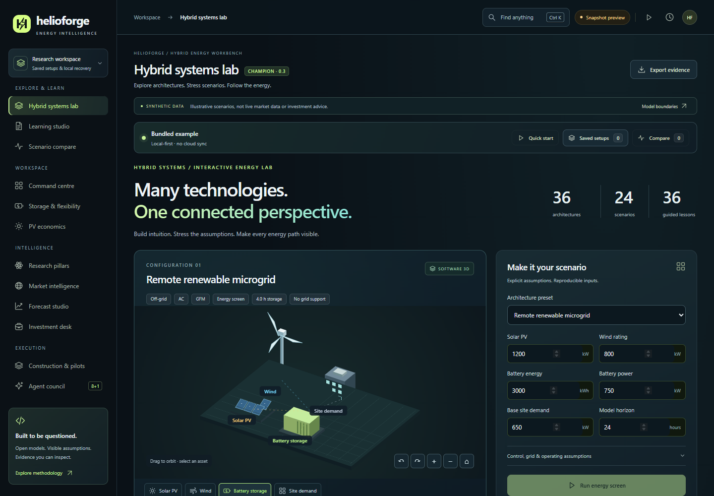
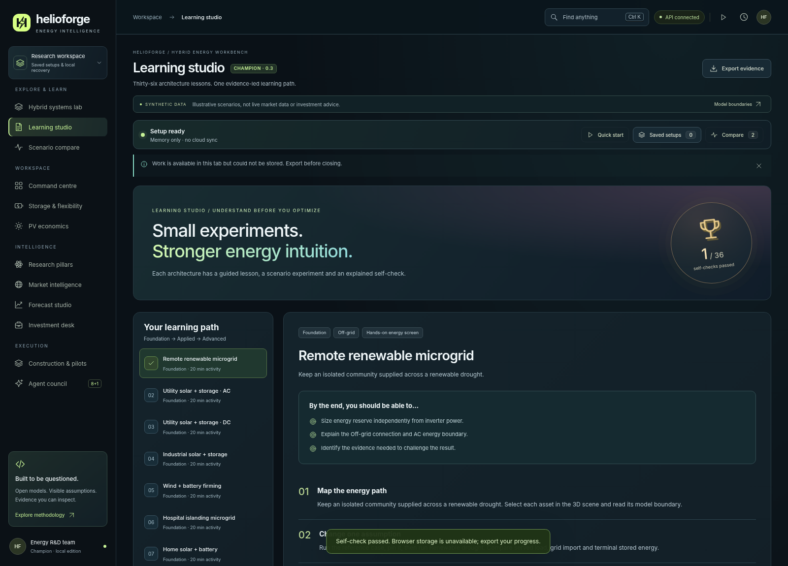
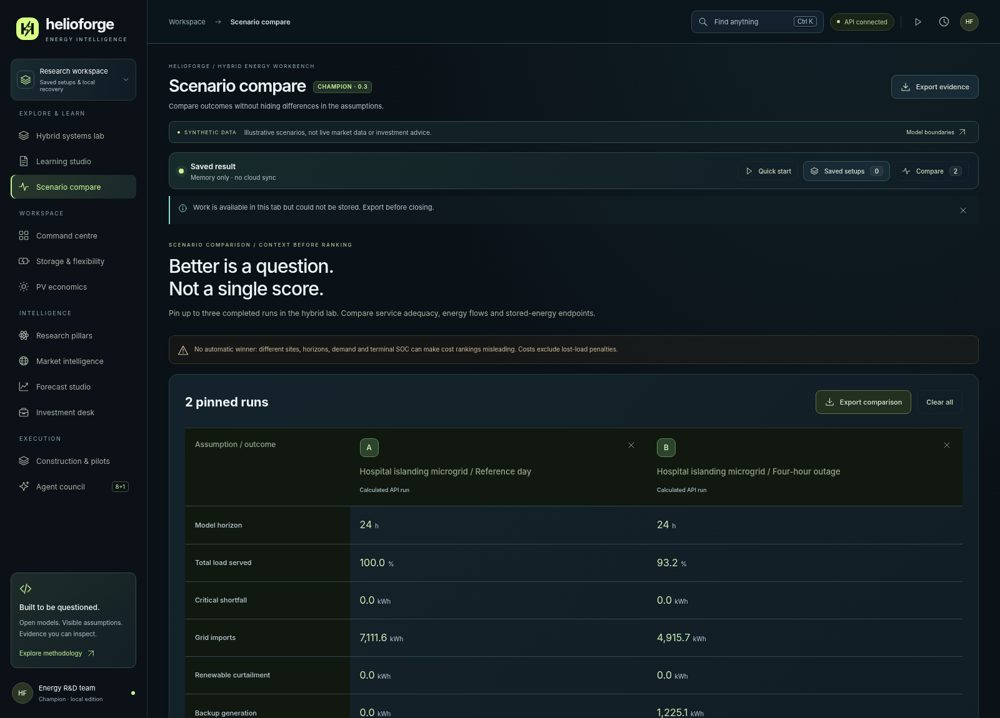

HelioForge reference handbook
Inspect the model equations, reproduce the examples, and distinguish software evidence from external review and field validation.
Reviewed 2026-11-19 · Source fb42eb4d9b0c. This is a dated documentation snapshot.
Browse reference chapters
Image source: HelioForge Energy Lab — project overview

Explore hybrid-energy scenarios and research screens through a browser workbench and local Python calculations with explicit model boundaries.
Run locally · Browser demo · Python source · Capabilities · Evidence and limits
Image source: HelioForge Hybrid Energy Lab: original vector system illustration

The source combines a hybrid adequacy screen, storage MILP, research studies, and an interactive learning workbench. The companion starts with a small synthetic daily power balance.
Native-source lesson guide · Offline interactive lab · Lesson configuration · Configuration schema
Previous animations
Open the previous-animation gallery · Local gallery
Earlier animated artwork, waveform demos, and original interactive experiences are linked alongside the current animations.
Your first interactive result
- Download or clone this repository and open
docs/index.htmlin a modern browser. - Select Module 1, apply its preset, and compare the declared checkpoint with the plotted result.
- Change one slider, inspect the model assumptions, then export the configuration or telemetry for your notes.
The browser lab runs offline with no packages, accounts, or live data feeds. Its numbers are deterministic teaching simulations. Each checkpoint states its model time and tolerance; passing it demonstrates agreement with that model, not field calibration or production readiness.
Four-module learning path
| Module | Investigation | Approximate time |
|---|---|---|
| 1. Follow a single-bus balance | Identify which sources serve demand and where a simple screen stops. | 12 min |
| 2. Test a resource sensitivity | Quantify the effect of a smaller solar resource without changing demand. | 15 min |
| 3. Separate adequacy from optimization | Explain the different questions answered by a dispatch policy and a cost-minimizing storage model. | 18 min |
| 4. Prepare a reproducible native follow-up | Carry a transparent screening question into the source workbench without inflating the claim. | 18 min |
Who this is for: Energy researchers, engineering educators, and developers inspecting hybrid-resource assumptions.
Continue into the implementation
- README.md
- START_HERE.md
- apps/api/pyproject.toml
- apps/web/package.json
- apps/api/helioforge/engines/hybrid.py
- apps/api/helioforge/engines/storage.py
- docs/HYBRID_METHODOLOGY.md
Explore or run the source
Node.js >=22 for the standalone preview command; Python 3.11+ for the API package (launcher guide lists 3.11–3.13).
node scripts/preview-demo.mjs
python -m pip install -e "apps/api[dev]"
python -m pytest apps/api/tests
python launch.py --no-browserThese commands come from the audited source revision. Runtime requirements and the project's own validation limits are documented below; the standalone browser lab does not execute these commands.
The detailed project guide below remains the source for installation, supported features, licences, and scientific limits. The browser equations and laboratory settings do not change the original application or numerical engine.
Project documentation, installation, attribution, and existing validation
HelioForge Energy Lab
Cloudflare browser edition
Open the public browser preview · Purpose, usage and limits · Methodology · Help · Model registry · Build and deployment guide
Image: CI · MIT license · Verification and limits
Interactive hybrid-energy research and learning workbench with auditable numerical screens and a local Python API.
The full-spectrum roadmap includes 59 named study models across all 12 workspaces, advanced model visuals, local evidence imports and optional provider/device connectors. See the per-view completion and external-dependency ledger, historical verification record, and connector setup. The public preview shows generated examples; its Terminal is a separate browser calculation. New advanced-study runs and optimization require the local Python API.
Capability contract and model registry
The four delivery modes are shared with the generated overview, About, Methodology, Help, and app.json capability facts. The current contract is CAPABILITIES.md; its generated inventory is MODEL_REGISTRY.md and MODEL_REGISTRY.json.
The hosted dashboard loads content-addressed example JSON on demand and verifies its SHA-256 before display. A failed download retains the configuration and offers retry. The separate HelioForge-Preview.html download contains every example for offline use; edited advanced studies still require the local Python API. The hosted build uses pinned esbuild only during compilation, with no added browser runtime package. Publish the shell, data manifest, all referenced chunks and matching CSP together.
New numerical records include a versioned model provenance envelope. Historical records without that envelope remain explicitly unknown. Workspace v1 records are migrated to v2 only after preview and confirmation, with an exact backup and migration receipt. See the local acceptance evidence and publication verification method. Remote CI and deployment evidence are recorded separately in immutable release receipts. Provider, native-device, field and participant acceptance remain separate gates.
- Bundled synthetic examples: Bundled synthetic examples are precomputed outputs; the public browser edition does not calculate new study-model results from edited inputs.
- Bounded browser Terminal: The Terminal runs new deterministic, bounded 24-hour energy-balance cases in the browser; it uses a greedy policy and is not an optimizer.
- Advanced local Python: The separate local Python application runs new calculations for the advanced study models and optimization.
- Opt-in local external providers: Optional local external providers are separate, opt-in integrations; credentials and explicit consent are required where applicable. The public static preview makes no provider calls.
Start with one task: Explore a bundled example. Open the public preview and inspect a labeled synthetic result. Calculate a bounded Terminal case. Open Scenario compare and use the Parametric energy workbench. Set up advanced local calculations. Use the source setup guide to run the Python application on your machine.
The registry keeps application, catalogue, data and model versions separate. The 59-study catalogue and its current bundled default examples have content digests but no independent named versions; the study result envelope does not declare a separate schema_version. Each per-study card lists its current model version, declared numeric units and bounds, input fields, equations, Python implementation, test file, default fixture digests, executed source-bound software checks, remaining untested conditions, and limits. Software checks do not establish scientific validation; deployment identity belongs to the release receipt.
If HelioForge Energy Lab helps you study this workflow, a star helps other energy researchers and engineering educators find it.

Try the demo
Open the hosted synthetic demo or run the identical standalone artifact locally:
Prerequisite: Node.js 22 or later; tested here with Node.js 24. This runs locally with synthetic examples. It does not connect to a live provider or publish user input.
git clone https://github.com/mohammadrezwankhan/helioforge-energy-lab.git
cd helioforge-energy-lab
node scripts/preview-demo.mjsOpen http://127.0.0.1:4173. Stop the server with Ctrl+C. For an opt-in local hybrid API connection, see the hybrid preview journey. The default standalone preview remains read-only. The first screen is a demonstration, not verified current information. Keep private or real-world records out of this evaluation. The standalone preview does not run new local-Python study calculations; the Terminal separately calculates bounded cases in the browser. Use the source guide below for advanced local Python calculations.
Why inspect this project?
HelioForge connects a browsable energy-learning interface to an optional local Python calculation API. The standalone preview preserves a reproducible starting point and includes the separate deterministic Terminal calculator. Advanced numerical runs use the backend and its explicit scenario assumptions.
Read the engineering walkthrough and adjacent-tool comparison, or follow the source map.
- Current verification and limits
- Architecture and source map
- Contribution guide and small contribution tasks
- Security reporting, support, and roadmap
Develop and verify
Install the Python project with its development extras in an isolated environment; follow the original guide below. HelioForge also has a separately locked web workspace.
python -m pytest apps/api/tests
python -m ruff check apps/api
npm --prefix apps/web ci
npm --prefix apps/web run build
npm --prefix apps/web testPrior reports under docs/ describe the supplied candidate. They do not replace the current quality report. Passing software checks is not clinical, educational, financial, safety, or production-service validation.
The checked-in RELEASE_MANIFEST.json records the historical 2026-10-27 snapshot, not the current development tree. To check that receipt, extract commit 021e41ecb9c5343a2bd04149035956512616976d and run python scripts/verify-release.py --root /path/to/extracted-snapshot from this checkout. The script checks that snapshot against the manifest in this checkout. The hashes detect drift; they are not signatures or evidence that today's tests passed.
License and scope
First-party source is available under MIT. Bundled dependencies retain their upstream notices; trademarks and third-party content are not relicensed.
Supplied engineering guide, product boundaries, and detailed usage
HelioForge Terminal · 2.0.0
Explore the architecture. Stress the assumptions. Follow the energy
An interactive hybrid-energy laboratory, learning studio and auditable research workspace.
36 architectures · 24 scenarios · 36 lessons · 12 workspaces · 8 + 1 review roles
Start here · Explore the preview · Coverage · Model limits · Champion verification
New in Champion
Named setups, actual saved-run reopening, a keyboard command palette, a guided first experiment, validated workspace recovery and a clearer local-first toolbar. Invalid in-progress hybrid inputs no longer leave stale numerical results visible. Other-model drafts survive navigation, same-market reconnection preserves completed calculations, and a new host allow-list hardens the local boundary. The numerical engines and 36/24/36 catalogue remain unchanged.
Download/extract → run the platform starter → open the local app. Prebuilt browser assets are included. See START_HERE.md, verified changes, and release limitations. “Champion” is the edition name and design ambition, not an award or certification.
A laboratory that shows its working
Configure an off-grid renewable microgrid, compare a hospital's normal operation with a grid outage, or investigate the model requirements of a hydrogen hub. Rotate the 3D scene, inspect individual assets, edit capacities, run an hourly energy screen and export the exact inputs and results. Then use a guided lesson to explain the outcome—not just admire a chart.
Scope is visible in the interface: 19 architectures have runnable electricity-balance screens; 17 advanced architectures are explicitly study-only. There are 20 numerical scenario presets and four dynamic/control study presets. Applicability filtering yields 285 runnable architecture–scenario combinations, not an indiscriminate 36 × 24 claim. All combinations have energy/SOC invariant tests.
This is an educational and research release. It is not a plant controller, an accredited course, a calibrated digital twin, investment advice or a dynamic-stability simulator. The initial battery state is explicit and terminal SOC is unconstrained. A cheaper run that serves less load is not declared the winner.
What you can do
| Workspace | Working capability |
|---|---|
| Hybrid systems lab | Search 36 architectures; inspect original 3D meshes; configure capacities, control assumptions and grid limits; apply scenarios; calculate and export hourly results. |
| Learning studio | 36 architecture-linked activities with objectives, experiment steps, evidence requirements and explained two-question self-checks. Local progress, confirmation before reset and exportable lesson plans. |
| Scenario compare | Pin up to three completed runs; inspect demand service, imports, curtailment, cost and initial/terminal battery energy. JSON export; no misleading automatic ranking. |
| Command centre | Synthetic portfolio search, country filters, overview and evidence export. |
| Storage & flexibility | Existing short-horizon SciPy/HiGHS battery MILP with direction and SOC constraints. This is separate from the new greedy hybrid screen. |
| PV economics / Investment desk | Existing PV, project-finance and acquisition screens, including debt-free/null states. |
| Research pillars / Forecast studio | Existing drift, reliability, lifecycle-carbon and seeded illustrative price calculations. |
| Market intelligence / Construction & pilots | Source register, synthetic pilot workflow and persisted evidence events—not live legal or field validation. |
| Agent council | Eight deterministic review roles and a critic-style synthesis; local mode is not independently executed agents. Deterministic local mode by default; opt-in OpenAI adapter can review an explicitly selected saved hybrid run. |
Designed for exploration, not decoration alone
Original low-poly 3D geometry is transformed by a real orthographic camera and rendered in Canvas2D. Drag to orbit, use keyboard or camera buttons, and select assets for text descriptions. This is software 3D, not WebGL. Solar, wind, battery, water, hydrogen and other asset categories have distinct colors and named labels. Links animate conceptually; they are not solved branch flows.
The interface includes responsive containers, searchable technology synonyms (PV, BESS, H2), explained tags, smooth view transitions, a reduced-motion switch and system-preference support. A small achievement animation follows a newly passed self-check only; it never implies an engineering approval. New Python calculations remain disabled in disconnected preview mode; the separate Terminal calculator remains available in-browser.
 |  |
Start locally
Fastest: inspect the bundled interface
Open HelioForge-Preview.html from the extracted repository. It contains the entire interface, original graphics and bundled Python-generated example results with no external font or JavaScript CDN. File-browser policies vary; the locally served application below is the preferred way to use calculations. A GitHub file view shows source rather than running HTML; use the included manual Pages deployment workflow to host a public preview only.
Run calculations
Python 3.11–3.13 is the declared support range; this release was tested here with Python 3.13.5. Prebuilt browser assets are included, so Node is not required just to run them.
python -m venv .venv
# macOS/Linux:
source .venv/bin/activate
# Windows PowerShell instead:
# .venv\Scripts\Activate.ps1
python -m pip install -e apps/api
python launch.pyOpen http://127.0.0.1:8000. The server binds to loopback. On Windows, start-windows.cmd creates a virtual environment, installs missing pinned runtime dependencies and launches the same local application. It downloads Python dependencies on first use; it does not install Python itself.
Try a useful first experiment: select Hospital islanding microgrid, run the baseline, pin it, apply Four-hour outage, run again and pin. Open Scenario compare; inspect critical shortfall and terminal battery energy before comparing cost. Names in the versioned catalogue are the source of truth.
Develop the interface
Node 22 is used by the build configuration. From the repository root:
cd apps/web
npm ci
npm run typecheck
npm run build
npm test
cd ../..
python -m pytest apps/api/testsAfter editing the canonical catalogue:
python scripts/generate-hybrid-assets.py
cd apps/web && npm run buildThis regenerates browser data from apps/api/helioforge/data/hybrid_catalog.json; do not hand-edit hybrid-data.ts. To regenerate the original numerical overview snapshot, run python scripts/generate-snapshot.py before the web build.
Docker and Compose configuration are retained. They were not executed during this build; use the loopback instructions as the verified path. Do not expose this local API publicly without the security hardening in SECURITY.md.
Model and lesson coverage
The atlas spans grid-connected and off-grid PV/wind/battery systems; remote, residential, community, telecom, hospital, data-centre and industrial sites; hydro, mobility, floating PV, agrivoltaics and electrical desalination loads. Advanced study configurations include hydrogen, CHP, geothermal, thermal storage, heat pumps, V2G, pumped hydro, flywheels, supercapacitors, marine systems, nuclear–hydrogen and coordinated networks. Specialized carrier/network physics are not implemented merely because the architecture is shown.
Scenario presets cover weather shortfalls, demand peaks, outages, grid limits, tariffs, battery aging/trips, reserve levels, generator outages and reduced river availability. Black start, reconnection, weak grids and ramp-limit design are marked study-only. The source archive's five cases are mapped in REFERENCE_MAPPING.md, including separate AC/DC utility-PV entries.
Read HYBRID_METHODOLOGY.md, the full architecture/scenario matrix, and the lesson-authoring contract before adding a model.
Multi-agent review without pretend execution
Local mode is a deterministic checklist—no LLM is called. The optional OpenAI Agents SDK adapter runs eight specialists concurrently and then a critic, using structured output, cancellation on error, bounded turns/tokens and a timeout. Set an API model actually available in your own project; product nicknames are not hard-coded as API model identifiers.
External execution is disabled by default and requires server-side credentials, a local admin key and explicit consent. It may incur API charges. Live provider execution was not tested here; control flow and failure handling were tested with a fake SDK. See AI_SETUP.md and the next-build goal prompt.
Current verification
The historical v0.3.0 results, failed-attempt history and coverage limitations are in docs/champion/VERIFICATION.md. The source changes, local launcher, human-UAT script, recovery notes and file hashes are included. Current responsive release evidence is in docs/FULL_AUDIT_REPORT.md; the Terminal verification records the earlier release.
Historical v0.2.0 verification (baseline only)
404 Python tests · 65 frontend tests · 32 browser checks passed in this environment. Python statement coverage is recorded in docs/coverage.json; coverage measures exercised code, not scientific validity. The hybrid matrix includes 285 applicable runnable combinations plus 100 seeded capacity/input perturbations. All twelve views passed 390px and 320px page-overflow checks after layout fixes.
Browser tests exercised Chromium DOM/canvas and real API calculations through a host HTTP bridge because direct browser localhost access was restricted. They do not certify direct-browser networking, CSP enforcement, file navigation, screen-reader compatibility or field engineering. Read the complete validation record and final audit.
Contribute something independently useful
A good contribution adds a reproducible experiment, not just another attractive card. Start with a hand-checkable benchmark, an original lesson, accessible interaction improvements or a clearly licensed time-series fixture. Every new architecture needs a capability declaration; every new numerical claim needs tests and stated units.
Contributing · Good first issues · Security · Code of conduct · MIT license
5,000 stars is a community ambition, not a delivered result. The open-source launch plan defines usefulness and contribution milestones. No fabricated stars, awards, affiliations, testimonials or adoption statistics are included.
Full-spectrum research studies
The local workbench now contains 59 distinct experimental studies across all twelve views, with source-backed limits, result exports, visual editors and signed local evidence. See delivery and audit, the experiment index, and verification. The standalone edition contains generated examples; edited numerical runs require Python.
Image: MKLab app directory Open HelioForge Energy Lab in MKLab Traceability checks and source-observation scope
Source-backed documentation update · 2026-11-19
The documentation map and reference handbook explain the current engine, interface and evidence boundaries at source fb42eb4d9b0c87e692710e8e867ab5190ea831a7. Start with architecture, worked labs, equations and the complete 59-study atlas.
The browser Terminal calculates new bounded 24-hour PV/battery/grid cases; advanced Python models and the separate teaching companion have different scopes. Preserve the 19 runnable/17 study-only architecture distinction. The dated ledger records actual source tests/build/labs and the unavailable local real-browser capability. The known-debt register retains reproduced annual-baseline and IRR endpoint limits. The twelve-month roadmap sets proposed work through 2027-11-18 without claiming those repairs are implemented.
Existing source prose, release/citation/security/license records and all scientific/application artifacts remain preserved. Final candidate QA, merge and live publication are separately recorded integration outcomes.
Canonical file: README.md · Back to guide navigation
Contributing
Contributions should make a model easier to verify, a decision harder to misread, or an interface easier to use.
Discuss new regulated-data integrations and financial-model changes in an issue before implementation. Include source provenance, customer eligibility boundaries and numerical assumptions. Share only synthetic or explicitly licensed data; remove client names and meter identifiers.
Use small pull requests. Explain the problem, implementation, alternatives and model-boundary changes. Add a hand-checkable regression for numerical changes, API validation tests for new fields, and mobile/keyboard checks for interface changes. Regenerate the snapshot and browser assets when their sources change. Record exact tests run; do not say “all tests pass” when only a subset ran.
python -m pip install -e "apps/api[dev]"
python -m pytest apps/api/tests
cd apps/web && npm ci && npm run build && npm testRun python scripts/generate-snapshot.py from the root after intentional default/model changes, then rebuild the frontend. Inspect changes to generated data and screenshots; never silently update a benchmark to hide a bug.
LLM-generated contributions require human ownership, provenance review and the same tests as any other contribution. Do not request or publish private chain-of-thought; concise design rationale, equations, evidence and test results are the relevant record. Read AGENTS.md for assistant-specific constraints.
Hybrid and lesson contributions
Use LESSON_AUTHORING and the hybrid-model issue template. Edit the canonical packaged catalogue, regenerate browser/matrix assets and add a hand-verifiable case. Every architecture needs an explicit numerical/study capability. Test all applicable pairs and the setup import contract. Reference-source figures must not be copied without permission. The root runtime /data/ store must never be committed.
Documentation and numerical evidence · 2026-11-19
Use the canonical documentation map and maintenance runbook. Link numerical/interface claims to the exact reviewed source, retain units and model limits, and distinguish tests from calibration. Document a failing minimal case before a separately scoped algorithm repair; preserve original logs and add new dated reruns. Update the 59-study schema/handler map when the registry changes.
Regenerate the reading view with python docs/reference/build_reference.py, then run its --check mode. Python and local Pandoc are documentation tooling, not application dependencies. Keep scope narrow: a documentation change must not silently change scientific code, tests, security controls, locks, licenses or media. Independent QA reviews the frozen candidate; the integration owner verifies current PR policy and publication separately. Follow the existing security policy for sensitive reports.
Canonical file: CONTRIBUTING.md · Back to guide navigation
2.0.0 — Terminal workbench (2026-10-26)
- Migrate all twelve views to a token-based carbon/phosphor Terminal system, hairline structure, monospace instrumentation and reduced motion.
- Add a deterministic 24-hour browser/Python energy balance, one/two-axis linear/log sweeps, conditional Pareto comparison, local finite-difference sensitivity and pinned A/B deltas.
- Expose equations, SOC bounds, residuals, shortfall and terminal energy drift. No thermal/dynamic physics or globally optimal dispatch is claimed.
- Add CLI commands, verified JSON import, query reproduction and timestamped SHA-256 JSON/CSV/Markdown manifests.
- Preserve original routes, catalogue, API models, setups, lessons and exports. Repair contrast, accessible names, chart keyboard scrolling and Canvas token resolution.
- Executed evidence and limitations: AUDIT_MANIFEST.md and docs/terminal-audit. No scientific calibration or operational certification is implied.
Source preview: 2026-09-30
preview-2026.09.30
- Preserve the supplied baseline and add scoped build, server and dependency repairs.
- Add a tested local demo launcher, actual desktop/mobile screenshots, domain architecture, source guide and contribution resources.
- Record executed CI and clean-clone evidence in QUALITY_REPORT.md.
- Keep synthetic-data, operational, accessibility and research limitations explicit. This snapshot is a prerelease, not a stable-service claim.
Champion update — 0.3.0 (2026-09-28)
Local evaluation candidate; not a production deployment.
- Added named hybrid setups, guarded browser-workspace recovery, verified API run reopening and history filtering.
- Added keyboard navigation/search, quick-start experiment guidance and responsive workbench status/actions.
- Fixed immediate invalid-input/stale-result state, model-draft loss during navigation, and same-market reconnect resets.
- Added explicit local Host allow-list, API no-store headers, and truthful interrupted-write recovery messages.
- Added checked local launch/recovery tools and regression coverage. Numerical engines/catalogue are unchanged.
- Refined narrow-screen actions, focus/inert navigation behaviour, reduced-motion styles and labelled memory-only states.
The authoritative evidence and limitations are in docs/champion/VERIFICATION.md.
Changelog
2026-09-30 — validated view dispatch follow-up
- Resolve runtime page values against the supported page list and dispatch views through explicit branches. Unknown, malformed and inherited-property names now render the overview safely.
- Rebuild both the browser bundle and standalone preview. Add a regression for invalid page values and shell rendering; web typecheck, build and all 99 web tests pass locally.
- This addresses the dynamic-method dispatch identified by CodeQL after publication. The follow-up release records the final CI and scan results.
0.2.0 — 2026-09-23
- Added a versioned 36-architecture / 24-scenario / 36-lesson hybrid catalogue, with 19 runnable electrical screens and 17 study-only configurations.
- Added the hybrid lab, learning studio and three-run comparison, original interactive software-3D meshes, semantic asset colors and explained tags.
- Added strict configuration imports, lesson/progress exports, hourly charts, scenario service/SOC comparisons and exact saved-run provenance.
- Added a deterministic hourly energy screen; tested all 285 applicable numerical pairs and 100 seeded parameter perturbations.
- Expanded the optional council to eight parallel specialists plus independent critic; added explicit saved hybrid evidence attachment. External execution remains off and was not tested live.
- Fixed narrow-screen intrinsic sizing, stale-result presentation, pending-run configuration changes and the data-directory ignore rule.
- Added audit, methodology, coverage matrix, contributor/lesson guidance, screenshots, manual preview deployment and next-build goal prompt.
0.1.0 — 2026-09-23
Initial local research release: nine workspaces; short-horizon mixed-integer battery dispatch; independent finance, PV, M&A, reliability, drift, carbon and price models; source registers; pilot evidence and analysis persistence; optional four-specialist-plus-critic adapter; responsive original dashboard; standalone preview; model/API/frontend/browser checks; methodology, security, contribution and prompt documentation.
Pre-release review corrected a reliability input step mismatch, changing-parameter summary captions, debt-free DSCR display, empty chart handling and misleading decorative metric sparklines. Original browser checks caught the input issue before delivery. Final review also corrected unrounded covenant decisions, cancelled sibling AI requests on provider failure, and ensured explicit SQLite connection closure with transaction rollback.
Unreleased ·documentation review2026-11-19
- Added canonical developer, scientific, maintainer and owner guides, including worked native labs, a complete 59-study atlas, declared parameter metadata and a dated verification ledger.
- Added a narrow generated reference handbook within the established docs route and a12-month proposed roadmap through 2027-11-18.
- Preserved original root documentation and historical setup/architecture prose, with dated scope notices for later Terminal/workspace behavior.
- Documented the reproduced annual negative-export comparator and IRR endpoint limitations and the static Docker build-input risk; no numerical/application fixes are included.
- Preserved all scientific/application/test/workflow/dependency/security/license/CFF/media source bytes. This is an unreleased documentation note, not a new tag, release, merge or publication receipt.
Canonical file: CHANGELOG.md · Back to guide navigation
Citation metadata
Existing CFF, preserved verbatim:
cff-version: 1.2.0
message: "Please cite the version and commit you actually used, and identify synthetic inputs."
title: "HelioForge: Hybrid Energy Learning and Research"
authors:
- name: "HelioForge contributors"
version: "2.0.0"
date-released: 2026-10-26
license: MIT
abstract: "Local-first Python and TypeScript research software for transparent energy screening."
repository-code: "https://github.com/mohammadrezwankhan/helioforge-energy-lab"Canonical file: CITATION.cff · Back to guide navigation
Champion 0.3 local boundary
launch.py binds only to 127.0.0.1, explicitly disables external AI, and sets matching local Host/Origin allow-lists for the chosen port. Unexpected Host headers are rejected. API responses use Cache-Control: no-store. These are defense-in-depth controls, not authentication. A local client with access can still read or modify local research records. Do not publish this app as a multi-user service without a separately reviewed authentication, authorization, TLS, retention and deployment design.
The existing optional external adapter is preserved for explicit developer configuration but was not exercised with a real provider in this build. No keys are included. See docs/champion/VERIFICATION.md for tested and untested boundaries.
Security and deployment boundaries
Version 0.1 is for a trusted user on their own machine. Bind to 127.0.0.1. Do not expose it to the Internet or an untrusted LAN as shipped. Ordinary model and pilot endpoints do not implement user authentication, authorization or tenancy.
Implemented defences include strict bounded request schemas, a 1 MB request-body limit, parameterized SQLite statements, HTML escaping, safe source URLs, spreadsheet-formula-safe text CSV exports, browser-origin checks for writes, limited CORS, security headers and an explicit key/consent gate for potentially billable AI calls. CORS and origin checks are not authentication. Same-origin XSS, compromised local software, DNS rebinding/Host policies, denial of service and an attacker with filesystem access require broader controls.
External market and regulator XML rejects document type declarations at the parser boundary after encoding detection, including UTF-16. This prevents DTD-defined entity expansion while retaining ordinary character references and supported feed encodings. Upstream URLs remain fixed or restricted to configured official regulator hosts; these controls do not establish that a publication is factually correct or legally applicable.
The source has no trading, SCADA, BMS or inverter control connector. Pilot state changes do not authorize fieldwork. Treat an AI result as untrusted research text, never an operational command.
Keep API keys in environment/secrets management. Never commit .env, data/, .sqlite3 files, client inputs, audit logs or model prompts containing confidential information. SDK tracing is disabled, but opt-in external execution still transmits the brief and evidence to the configured provider. Configure actual provider spending limits.
SQLite is not encrypted or tamper-evident here. Make local backups and apply device access controls. Retention, per-user deletion, key rotation and managed secret storage are operator responsibilities until a production design exists.
Reporting
Do not post credentials, personal data or exploitable private details in a public issue. Use GitHub private vulnerability reporting for a confidential report. Include the affected commit and a synthetic reproduction. If the route is unavailable, stop the local server and use an already trusted private contact; do not post exploit details publicly.
No penetration test, formal security certification, dependency vulnerability clearance or production sign-off is claimed. See docs/VALIDATION.md for checks actually performed.
Canonical file: SECURITY.md · Back to guide navigation
HelioForge Energy Lab roadmap
- Reproduce the documented source checks and close remaining issues in QUALITY_REPORT.md.
- Verify native-origin reload, export/restore and keyboard behavior around the primary HelioForge Energy Lab workflow, with fictional inputs.
- Obtain domain and Bangla/English review before expanding the supplied catalogue or instructional content.
- Keep live-data adapters, accounts, delivery, clinical/safety decisions and paid integrations out of scope until a separate design has source, rights, privacy and accountable operational owners.
No dates or service commitments are implied. Propose changes with acceptance criteria and evidence.
Evidence-based twelve-month plan · 2026-11-19 to 2027-11-18
This dated plan extends the original scope above. It proposes future work; this documentation change does not implement numerical, application, workflow or dependency repairs. Roles identify responsibility to assign, not a claim that a staffed team or fixed delivery commitment exists. Effort estimates are focused working days and should be sequenced to actual owner capacity. Confidence describes the clarity of the problem/acceptance path, not guaranteed completion.
The immediate evidence is concrete: a zero-storage negative-export baseline counterexample, an IRR endpoint omission, a statically incomplete Docker build-copy step, preserved successful source tests and an unavailable local real-browser capability. See the failure/debt register and ledger.
| Phase | Inclusive dates | Calendar-quarter coverage | Exit evidence |
|---|---|---|---|
| Now | 2026-11-19–2026-12-31 | Partial 2026 Q4 | Narrow correctness/packaging reproductions and exact documentation QA/publication closure |
| Next | 2027-01-01–2027-03-31 | 2027 Q1 | Comparison/schema consistency, real-browser recovery and synthetic backup drill |
| Later | 2027-04-01–2027-06-30 | 2027 Q2 | Independent bounded numerical benchmarks and explicitly scoped data/external acceptance |
| Horizon | 2027-07-01–2027-11-18 | 2027 Q3 plus partial Q4 | Measured performance/compatibility, attributable external review and evidence-based annual closure |
Monthly checkpoints
| Month of plan | Dates | Review question |
|---|---|---|
| 1 | 2026-11-19–2026-12-18 | Do comparator and IRR negative controls fail before their separately reviewed repairs and pass afterward? |
| 2 | 2026-12-19–2027-01-18 | Are clean packaging and documentation publication tied to exact source/artifacts? |
| 3 | 2027-01-19–2027-02-18 | Do comparisons retain equal-service and endpoint distinctions? |
| 4 | 2027-02-19–2027-03-18 | Are 59 schema/catalogue bindings and real-browser import failures covered? |
| 5 | 2027-03-19–2027-04-18 | Can a second operator recover synthetic runs and reproduce a bounded benchmark? |
| 6 | 2027-04-19–2027-05-18 | Do control/circuit refinement tests and adverse cases retain their limits? |
| 7 | 2027-05-19–2027-06-18 | Are annual/reliability comparisons and data rights explicit? |
| 8 | 2027-06-19–2027-07-18 | Are temporal validation and any external acceptance claims supported by actual evidence? |
| 9 | 2027-07-19–2027-08-18 | Which measured browser payload or interaction cost warrants change? |
| 10 | 2027-08-19–2027-09-18 | Do optimizations preserve scientific/data identities and compatibility? |
| 11 | 2027-09-19–2027-10-18 | What did the independent domain reviewer confirm or dispute? |
| 12 | 2027-10-19–2027-11-18 | Which items are verified, blocked, deferred or withdrawn, and is a release justified? |
Now work
HF-N01 · Correct annual negative-export comparator
Window: 2026-11-19–2026-12-18. Priority: HIGH. Owner role: Numerical maintainer. Effort: 2–4 days. Confidence: High.
Dependencies: None; retain source-bound reproduction before repair.
Evidence: apps/api/helioforge/engines/planning_studies.py
Acceptance: Zero-storage, negative-export regression must return zero attributable storage benefit against the same feasible comparator; cover positive/zero/negative sell prices, grid export caps, curtailment and monthly peaks. Preserve baseline inputs/status/residuals and review resulting fixture changes.
Risk / limit: Changing the comparator changes reported savings; do not conceal this with unexplained fixture regeneration.
HF-N02 · Handle conventional IRR bracket endpoints explicitly
Window: 2026-11-19–2026-12-18. Priority: HIGH. Owner role: Finance maintainer. Effort: 1–2 days. Confidence: High.
Dependencies: None; retain source-bound reproduction before repair.
Evidence: apps/api/helioforge/engines/finance.py
Acceptance: Add roots at left/right/expanded endpoints and interior controls, nonconventional and near-zero cash flows; define supported bracket/domain and retain null when no supported unique root is established. Confirm core finance and acquisition callers.
Risk / limit: A broader root-search change could alter economic interpretation; keep endpoint repair narrow and independently reviewed.
HF-N03 · Reproduce and repair clean Docker build inputs
Window: 2026-11-19–2026-12-31. Priority: HIGH. Owner role: Build maintainer. Effort: 1–2 days. Confidence: High.
Dependencies: None; retain source-bound reproduction before repair.
Evidence: Dockerfile
Acceptance: Run an isolated clean build, retain the missing-sibling failure, include the exact required scripts through normal image construction, then verify packaged artifact equality and launcher/container behavior without changing numerical code.
Risk / limit: Docker has not been executed in the present review; verify the static diagnosis before choosing the exact repair.
HF-N04 · Close exact documentation QA and existing-site publication
Window: 2026-11-19–2026-12-31. Priority: HIGH. Owner role: Documentation and integration maintainers. Effort: 2–3 days. Confidence: High.
Dependencies: None; retain source-bound reproduction before repair.
Evidence: The dated canonical architecture and exact candidate QA/publication requirements in this documentation package.
Acceptance: Independent QA accepts every canonical output and scoped diff; actual candidate CI/policy gates pass; expected head is merged; existing docs route serves distinctive new model-atlas/limit text with matching deployment provenance.
Risk / limit: Source CI and local HTML cannot establish candidate approval or publication; connector policy/metadata gaps must remain explicit.
Next work
HF-X01 · Strengthen cross-model comparison evidence
Window: 2027-01-01–2027-02-18. Priority: HIGH. Owner role: Numerical and interface maintainers. Effort: 4–6 days. Confidence: High.
Dependencies: HF-N01, HF-N02
Evidence: apps/web/src/hybrid-core.ts
Acceptance: Document/test same-model/source/data/horizon/service/endpoint comparisons and adversarial unequal-service/energy cases; exports retain endpoint and units. Distinguish short MILP, annual policy, annual MILP, hybrid and Terminal.
Risk / limit: A common label must not erase intentional differences between engines or imply global optimality.
HF-X02 · Keep 59 study schemas and catalogue controls reconciled
Window: 2027-01-01–2027-03-18. Priority: MEDIUM. Owner role: API and documentation maintainers. Effort: 3–5 days. Confidence: High.
Dependencies: HF-N04
Evidence: apps/api/helioforge/studies.py
Acceptance: Check every registry ID/schema/handler binding and catalogue field against the authoritative request model; expose omitted API parameters deliberately; detect duplicate IDs, unit gaps and default drift with actionable failures.
Risk / limit: UI bounds are not the complete model; generated documentation must not silently replace cross-field validation.
HF-X03 · Exercise recovery and handbook in real browsers
Window: 2027-01-19–2027-03-31. Priority: HIGH. Owner role: Browser/accessibility maintainer. Effort: 3–5 days. Confidence: Medium.
Dependencies: HF-N04
Evidence: apps/web/src/champion-controller.ts
Acceptance: Record Chromium/Firefox/WebKit runs for keyboard focus, reduced motion, narrow layouts, MathML/tables, Terminal manifests, workspace v1→v2 preview/backup, quota failure and stale imports. Keep any unsupported environment as NOT_RUN.
Risk / limit: Node/DOM tests cannot replace rendering and assistive-technology observations.
HF-X04 · Rehearse portable local data recovery
Window: 2027-02-01–2027-03-31. Priority: MEDIUM. Owner role: Local-app maintainer. Effort: 2–4 days. Confidence: Medium.
Dependencies: HF-X03
Evidence: apps/api/helioforge/store.py
Acceptance: Restore a synthetic SQLite backup with the matching source/environment, reopen known run IDs and verify configuration versus result recovery; test missing/corrupt browser cache without changing original evidence. Publish a repeatable recovery receipt.
Risk / limit: Browser keys are origin-scoped; copying a setup does not transfer the database or authenticate a run.
Later work
HF-L01 · Add independent bounded control and circuit benchmarks
Window: 2027-04-01–2027-05-18. Priority: HIGH. Owner role: Electrical-model reviewer. Effort: 5–8 days. Confidence: Medium.
Dependencies: HF-X02
Evidence: apps/api/helioforge/engines/control_studies.py
Acceptance: Compare equilibrium/linear cases with independent analytic calculations; retain coarse/refined step evidence, saturation and wrong-sign controls; map which limits exclude PLL, DC-link, switching and protection. Do not claim hardware validity.
Risk / limit: A second implementation can share assumptions; external calibration requires a separate evidence plan.
HF-L02 · Evaluate representative annual and reliability inputs
Window: 2027-04-01–2027-06-18. Priority: HIGH. Owner role: Energy-model and data reviewers. Effort: 5–8 days. Confidence: Medium.
Dependencies: HF-N01, HF-X01
Evidence: apps/api/helioforge/engines/planning_studies.py
Acceptance: Use licensed/synthetic fully traceable chronological cases with explicit leap/DST/calendar decisions; compare feasible baselines, storage endpoints, solver termination and confidence bounds; quantify sensitivity to assumptions and retain adverse cases.
Risk / limit: Measured data availability and permissions are external dependencies; absent evidence stays unavailable rather than relabeled synthetic.
HF-L03 · Audit temporal validation and uncertainty claims
Window: 2027-04-19–2027-06-30. Priority: MEDIUM. Owner role: Forecast/research reviewer. Effort: 4–6 days. Confidence: Medium.
Dependencies: HF-X02
Evidence: apps/api/helioforge/engines/planning_studies.py
Acceptance: Retain train/holdout indices and forecast-origin semantics, rank-deficiency and naive controls; distinguish assumed rank from statistical rank tests and one-step from recursive forecasts. Explain interval sources and excluded uncertainty.
Risk / limit: Do not promote synthetic paths or fixed training-residual bands to calibrated forecasts.
HF-L04 · Record narrowly authorized external acceptance
Window: 2027-05-01–2027-06-30. Priority: MEDIUM. Owner role: Integration owner. Effort: 2–4 days per authorized capability. Confidence: Low until access exists.
Dependencies: HF-X04
Evidence: apps/api/helioforge/integrations.py
Acceptance: For each separately authorized nonconfidential provider/device experiment, retain consent/configuration/model/version/timeout/status and actual returned evidence; verify failures and read-only limits. If access is absent, record BLOCKED without substituting mock success.
Risk / limit: External processing, device access, licensing and possible cost require concrete scope; the default local product must remain usable without them.
Horizon work
HF-H01 · Measure hosted payload and interaction budgets
Window: 2027-07-01–2027-09-18. Priority: MEDIUM. Owner role: Browser/build maintainer. Effort: 4–6 days. Confidence: Medium.
Dependencies: HF-X03
Evidence: scripts/hosted-data.mjs
Acceptance: Measure cold/warm bytes, verified deferred fetches, parse/render time and memory on declared devices; retain the offline preview and all numerical identities. Optimize only measured bottlenecks with regression evidence.
Risk / limit: The bundled source is large; smaller downloads must not weaken dataset hash validation or mutate scientific results.
HF-H02 · Obtain attributable external numerical review
Window: 2027-07-19–2027-10-18. Priority: HIGH. Owner role: Owner and independent domain reviewer. Effort: 5–10 review days. Confidence: Medium.
Dependencies: HF-L01, HF-L02, HF-L03
Evidence: docs/METHODOLOGY.md
Acceptance: Provide a pinned reproduction packet with hypotheses, inputs, tests, limits and disagreements; obtain a named scoped external review if available and preserve both findings and unresolved limits. Do not treat agent QA as that external review.
Risk / limit: Reviewer availability and data rights are not controlled by the repository; an unreceived review remains pending.
HF-H03 · Run a bounded dependency and numerical compatibility cycle
Window: 2027-08-19–2027-10-31. Priority: MEDIUM. Owner role: Dependency/security maintainer. Effort: 3–5 days. Confidence: Medium.
Dependencies: HF-X02, HF-H01
Evidence: apps/api/pyproject.toml
Acceptance: Choose a supported update only after advisory and compatibility review; retain old/new solver, fixture, API, build, security and actual-browser results. Review changed tolerances/outputs explicitly and preserve rollback artifacts.
Risk / limit: Do not confuse a passing installer or version bump with compatibility; no unsolicited dependency change is included now.
HF-H04 · Close the year with evidence-based scope and release decisions
Window: 2027-10-19–2027-11-18. Priority: HIGH. Owner role: Repository owner. Effort: 2–3 days. Confidence: High.
Dependencies: HF-H02, HF-H03
Evidence: CITATION.cff
Acceptance: Reconcile roadmap items to receipts, carry forward unresolved debt with reasons, review citation/license/scope and recovery drill, then decide whether an actual release is warranted. Update public claims only from verified public evidence.
Risk / limit: A calendar milestone does not justify a release, certification or completion claim without its gates.
Change control
At each checkpoint retain a dated decision and receipt links. Move an item only when its acceptance criteria are met or record the blocker/changed assumption. Preserve failed experiments and explain dropped work. Revisions of this plan must distinguish proposed work from merged behavior, live publication and independent validation. Current source CI and this author package do not close future gates.
Canonical file: ROADMAP.md · Back to guide navigation
HelioForge documentation map
This guide describes the code at fb42eb4d9b0c87e692710e8e867ab5190ea831a7, reviewed on 2026-11-19. HelioForge is a synthetic energy and investment teaching workbench with several distinct calculation engines. Choose an engine before interpreting a result: a daily browser recurrence, a constrained storage MILP, a hybrid energy screen and a research study answer different questions.
| Your task | Start here | Continue with |
|---|---|---|
| Run the packaged app or build it | Setup and reproducibility | Troubleshooting |
| Understand which engine produced a number | Architecture | Equations, limits |
| Use the API, Terminal or imports | Interfaces | Worked labs |
| Investigate any of the 59 studies | Study model atlas | Parameters and symbols |
| Assess evidence and change risk | Verification ledger | Known debt, toolchains |
| Review, release or recover | CI and release | Documentation maintenance, recovery |
| Own the next year of work | Roadmap | Governance, decisions, portfolio context |
The reference handbook presents these canonical files through the existing documentation site. The teaching companion remains a separate interactive illustration. Its fixed battery power contribution is not an energy-storage dispatch model. The full application starts from the packaged preview or local launcher; see the original README.
Established methodology remains useful: METHODOLOGY, HYBRID_METHODOLOGY, HYBRID_COVERAGE, VALIDATION, LESSON_AUTHORING. Historical START_HERE and architecture notes retain their original text with a dated scope notice. The current source adds browser Terminal calculations and guarded workspace imports beyond those earlier descriptions.
Project policies and history
Use the preserved contribution guide, changelog, citation metadata and security policy for their canonical project contracts. The primary-source register is historical: its earlier no-live-feed wording predates the current optional connector implementations. Current connector capabilities and their unexecuted external boundaries are described in interfaces; a source link or configured credential is not evidence of a successful live request.
Evidence vocabulary
Implemented means a source path exists. Executed locally means a dated command completed on this pinned source. Source CI identifies historical GitHub checks on that source commit. Candidate QA, candidate CI, merge, and live publication are separate identities and gates. A source digest, successful test, local signature or polished chart does not establish calibration, provider access, professional approval or real-world accuracy. See the ledger.
The source inventory accounts for all 927 tree entries, including 819 file payloads. Static parsing covers 141 Python files, 131 JavaScript/TypeScript files and 14 HTML files; the export inventory is deliberately conservative and includes internal helpers. Generated bundles, images, videos and historical receipts are identified without claiming their contents received the same semantic review as the numerical engines. Complete machine-readable coverage accompanies the review handoff rather than the published application.
Canonical file: docs/INDEX.md · Back to guide navigation
Architecture and calculation boundaries
Reviewed source: fb42eb4d9b0c87e692710e8e867ab5190ea831a7 · 2026-11-19. The application combines a browser workbench, a local FastAPI service and packaged numerical examples. Its teaching companion in docs/index.html is independently implemented. Preserve the distinction between an illustrative interface and the engine that supplies its numbers.
Five entry surfaces
| Surface | Execution and data | Boundary |
|---|---|---|
| Packaged / hosted workbench | Bundled Python examples, 36 architecture descriptions, 36 lessons and 59 study examples; deferred hosted datasets have byte counts and SHA-256 checks | Advanced edited inputs require the local service; bundled results attach only to matching presets |
| Browser Terminal | Native TypeScript 24-hour PV / battery / grid recurrence, parameter sweeps, local sensitivities and manifest recomputation | Independent of the Python hybrid dispatch and storage optimizer; no API call is needed for this bounded model |
| Local Python app | FastAPI, Pydantic request models, NumPy/SciPy engines, SQLite saved runs; launcher binds 127.0.0.1 |
A single-user local workbench, not a production multi-user service |
| Opt-in external integrations | Weather, market/regulatory feeds, allowlisted Modbus reads and external council protocol | Configuration and consent are prerequisites; successful access and trustworthy evidence require separate observations |
| Documentation teaching companion | Four configured modules and its own browser illustration | Its fixed battery-kW contribution has no SOC inventory, charging policy or storage optimization |
Sources: apps/web/src/terminal-engine.ts, apps/web/src/deferred-data.ts, apps/api/helioforge/main.py, launch.py, docs/index.html, docs/lesson-config.json.
flowchart TD
UI["Browser workbench"] --> Native["24-hour Terminal"]
UI --> Bundled["Pinned example records"]
UI --> API["Local FastAPI service"]
API --> Models["Python numerical engines"]
API --> Store["SQLite run store"]
API --> External["Explicit external integrations"]
Models --> Evidence["Inputs, units and provenance"]
Bundled --> Evidence
Native --> Manifest["Recomputed Terminal manifest"]The diagram shows computation and evidence relationships, not deployment trust. It does not connect the separate teaching companion to an engine it never calls.
Repository map
| Path | Responsibility |
|---|---|
apps/api/helioforge/engines/storage.py |
Short-horizon MILP, cyclic SOC and independently solved no-battery comparator |
apps/api/helioforge/engines/hybrid.py, hybrid.py |
Greedy hourly topology/control applicability and hybrid energy balance |
apps/api/helioforge/engines/terminal.py |
Python reference contract for the browser Terminal recurrence and comparisons |
apps/api/helioforge/engines/finance.py, forecast.py, research.py |
Project/PV finance, seeded scenarios, drift, Weibull and carbon screens |
apps/api/helioforge/studies.py, seven engines/*_studies.py modules |
Registry and envelope for 59 independently scoped studies |
apps/api/helioforge/provenance.py, store.py |
Domain-separated source/data/input digests and local saved runs |
apps/api/helioforge/council*.py, integrations*.py |
Deterministic checklist, external protocol and evidence/connector boundaries |
apps/web/src |
Ordered HF namespace scripts, accessible DOM construction, controls, exports and illustrations |
scripts/compile-web.mjs, build-web.mjs, hosted-data.mjs |
Strict compilation, standalone build and deferred hosted assets |
apps/web/dist, HelioForge-Preview.html |
Packaged generated runtime artifacts; edit canonical source and rebuild |
docs, assets, .github/workflows/deploy-dashboard.yml |
Established teaching/documentation publication route |
The module map is grounded in apps/api/helioforge/studies.py:25–101, apps/web/tsconfig.json, scripts/compile-web.mjs, scripts/build-web.mjs, .github/workflows/deploy-dashboard.yml.
Numerical contracts stay distinct
The storage MILP minimizes a period objective with fixed initial and terminal SOC. The hybrid engine follows a deterministic supply priority and allows end-of-period stored energy to differ from its initial value. Terminal has its own load/PV shapes, 11 camelCase input fields and a free terminal SOC. The storage-annual study uses a tariff policy over 8760 hours, whereas storage-annualopt solves a different full-year MILP. A cheap result from one is not an interchangeable optimum or annual saving from another. apps/api/helioforge/engines/storage.py, apps/api/helioforge/engines/hybrid.py, apps/api/helioforge/engines/terminal.py, apps/api/helioforge/engines/toolkit_studies.py, apps/api/helioforge/engines/planning_studies.py.
There are 19 runnable screening architectures and 17 study-only architectures. Applicability checks also constrain scenarios. The 285 bundled numerical architecture/scenario examples do not turn every catalogue diagram into an executable dynamic model. The 59 research studies are additional scoped implementations; their labels do not imply field qualification. docs/HYBRID_COVERAGE.md, apps/api/helioforge/hybrid.py, apps/api/helioforge/studies.py.
State, imports and stale responses
Hybrid controls maintain a revision counter. Changing inputs clears the run reference and disables current-result actions; asynchronous responses and file imports must still match that revision. Study edits hide old output until a new run succeeds; imports have their own generation guard. Terminal similarly separates a completed result from a draft and guards asynchronous operations. These are state-consistency mechanisms, not cancellation of all server-side work. apps/web/src/hybrid-controller.ts, apps/web/src/roadmap.ts, apps/web/src/terminal-ui.ts.
The browser storage key hf-workspace-v3 currently holds schema helioforge.workspace.v2. It stores inputs, lesson selection, saved setups and API run references, not the corresponding numerical result objects. A supported v1 record is migrated through preview and confirmation; the previous raw cache is written to a recovery backup before replacement. API-run recovery needs the same SQLite database. Lesson mastery and simple lesson progress use separate keys; Terminal state is a separate in-memory session. apps/web/src/champion-core.ts, apps/web/src/champion-controller.ts, apps/web/src/completion-ui.ts, apps/web/src/terminal-ui.ts.
Evidence and trust
source_revision inside a numerical result is a domain-separated SHA-256 over selected source files, not the repository's Git commit ID. Effective model inputs, saved request inputs and dataset identity can have different digests. A result envelope records these distinctions; exports carry them forward. evidence_sha256 covers the pre-digest study result JSON. The built-in signEvidence operation generates an ephemeral local P-256 key. verifyEvidence checks the canonical payload digest and each ECDSA/SHA-256 signature for 1–20 distinct valid public keys, rejecting a supplied private JWK d member. Verification does not determine the accepted keys’ lifecycle or identify a person or approving institution. apps/web/src/evidence.ts:12–46 apps/api/helioforge/provenance.py, apps/api/helioforge/studies.py:71–99, apps/web/src/result-provenance.ts, apps/web/src/evidence.ts.
Package/CFF version 2.0.0, API health 0.3.0, catalogue version and per-model/schema versions are distinct existing identities. This documentation update does not synchronize or release them. See release playbook.
Canonical file: docs/developer/ARCHITECTURE.md · Back to guide navigation
Setup and reproducibility
Use the packaged local app
Extract the complete repository/release package. The launcher checks Python 3.11–3.13, exact runtime dependency versions from apps/api/pyproject.toml, and the packaged frontend files. It does not install dependencies itself. The existing start-windows.cmd, start-macos.command and start-linux.sh scripts provide the documented first-use path. Read START_HERE with its dated scope notice. launch.py:24–105, apps/api/pyproject.toml.
From the repository root on a POSIX shell:
python3 -m venv .venv
. .venv/bin/activate
python -m pip install -e './apps/api[dev]'
python launch.py --check
python launch.py --no-browserOpen http://127.0.0.1:8000 after the server reports readiness. --port 8001 changes the port; allowed values are 1024–65535. On Windows use .venv\Scripts\python.exe for the Python commands. Stopping with Ctrl+C retains saved runs. The launcher sets ENABLE_OPENAI=false, loopback host binding and matching Host/Origin allow-lists. It does not terminate a process occupying a port. launch.py:68–196.
The packaged app uses data/helioforge.sqlite3 by default. Set HELIOFORGE_DB to an explicit absolute path to separate experiments, and retain that path with the experiment record. HF_DATA_DIR is not the launcher's database setting. launch.py:119–130, apps/api/helioforge/store.py.
Rebuild the browser runtime
Node 22 or later is declared; the source CI uses Node 24. Build tools are locked in the web package lock. No runtime npm packages are needed by the generated standalone application.
cd apps/web
npm ci --ignore-scripts
npm run typecheck
npm test
npm run build
cd ../..
node scripts/check-preview.mjsThe build compiles the ordered HF namespace files, assembles ten stylesheets, writes apps/web/dist, creates HelioForge-Preview.html and emits hashed deferred hosted data. Keep scripts/build-web.mjs together with its imported sibling helpers. A fresh local build on 2026-11-19 reproduced every canonical tracked byte and mode; the preview check confirmed exact runtime/style equality. This says nothing about a remotely deployed revision. apps/web/package.json, apps/web/tsconfig.json, scripts/build-web.mjs. See the dated evidence ledger.
The existing Dockerfile copies only the build entry script before invoking this build, while that script imports three sibling modules. This is a source-inspected clean-build risk; Docker was not executed in this review. Use the supported source/packaged paths above pending the roadmap's focused packaging repair. Dockerfile, scripts/build-web.mjs:1–3.
Verify numerical source and bundled examples
python -m ruff check apps/api
python -m pytest apps/api/tests
python scripts/check-hybrid-assets.py
python scripts/check-study-assets.pyThe asset checks regenerate values in memory and compare the established numerical contracts; they do not require accepting newly generated fixture bytes. The source CI additionally runs publication, dependency, security and real-browser checks. Running the four commands above is not equivalent to that whole matrix. .github/workflows/ci.yml, scripts/check-hybrid-assets.py, scripts/check-study-assets.py.
Reproducibility record
Retain the Git commit, exact command, Python/Node and package versions, inputs with units, seed, interval count, timezone/calendar convention, source/data/input digests, solver status and residuals, start/end UTC times and raw log. Keep failures and differing-version observations alongside successful reruns. For comparison, state whether final SOC is constrained and whether demand served is equal. Scientific reproducibility also needs provenance and calibration of real input data, which bundled synthetic cases do not provide.
The 2026-11-19 local API suite used Python 3.12.14 and the declared pinned numerical/runtime packages. The first small annual-comparator probe used pre-existing differing package versions; a separately dated exact-pin repeat reproduced it. The JS/TS AST inventory used parser 5.9.3, while the actual typecheck and build used locked TypeScript 7.0.2. Parsing and compilation are separate observations. A local Chromium capability probe failed at socket() with Operation not permitted; browser interaction, screenshots and visual accessibility were not observed in this review. Existing Node/DOM tests and structural checks remain useful within their narrower scopes.
Optional external capabilities
Do not enable a provider to reproduce the native labs. External council mode requires server configuration, an access credential and explicit processing consent; it can incur provider usage. Weather, market and regulatory collectors require their own configured/consented paths. PDF text/OCR use local optional executables when installed. Modbus permits configured read-only registers; a status response does not prove device connectivity. Consult interfaces, the preserved security policy and .env.example before an independently authorized external experiment.
Canonical file: docs/developer/SETUP_AND_REPRODUCIBILITY.md · Back to guide navigation
API, CLI and browser interfaces
All paths below are relative to the local application unless a public source URL is shown. This guide describes source fb42eb4d9b0c87e692710e8e867ab5190ea831a7; schemas and interface versions are kept distinct. The conservative static interface inventory also accounts for namespace exports and internal helpers; it does not promise that every exported identifier is a supported third-party API.
HTTP service
The service defines 30 explicit business routes, listed below. FastAPI additionally supplies its framework documentation/OpenAPI routes. Pydantic request models define the authoritative bounds; StrictModel forbids extra fields and non-finite numbers, but does not globally set strict=True. Some study families add strict typing, and Terminal applies its own validation. Do not generalize one validator's coercion or duplicate-key behavior to every entry path. apps/api/helioforge/main.py, apps/api/helioforge/schemas.py:9–17, apps/api/helioforge/studies.py:37–39.
Host and Origin allow-lists are local deployment boundaries, not authentication. Mutation requests with an Origin must match the configured list; absence of an Origin passes that check. Requests have a 1 MB body limit. Ordinary saved-run reads and calculation routes are not a general authenticated multi-user service. The launcher, rather than the app object alone, forces loopback and disables external AI. apps/api/helioforge/main.py, launch.py:119–153.
| Method | Route | Handler and source |
|---|---|---|
| GET | /api/health |
health · apps/api/helioforge/main.py:155–162 |
| GET | /api/studies |
studies_catalogue · apps/api/helioforge/main.py:166–167 |
| GET | /api/connectors/status |
connectors_status · apps/api/helioforge/main.py:171–172 |
| POST | /api/evidence/series |
evidence_series · apps/api/helioforge/main.py:176–177 |
| POST | /api/evidence/geography |
evidence_geography · apps/api/helioforge/main.py:181–182 |
| POST | /api/evidence/document |
evidence_document · apps/api/helioforge/main.py:186–192 |
| POST | /api/evidence/telemetry |
evidence_telemetry · apps/api/helioforge/main.py:196–197 |
| POST | /api/connectors/weather |
connector_weather · apps/api/helioforge/main.py:201–204 |
| POST | /api/connectors/market |
connector_market · apps/api/helioforge/main.py:208–211 |
| POST | /api/connectors/regulatory |
connector_regulatory · apps/api/helioforge/main.py:215–218 |
| POST | /api/connectors/modbus |
connector_modbus · apps/api/helioforge/main.py:222–228 |
| POST | /api/studies/evaluate |
study_evaluate · apps/api/helioforge/main.py:232–233 |
| GET | /api/overview |
overview · apps/api/helioforge/main.py:237–240 |
| POST | /api/storage/optimize |
storage · apps/api/helioforge/main.py:270–271 |
| POST | /api/finance/evaluate |
finance · apps/api/helioforge/main.py:275–276 |
| POST | /api/pv/evaluate |
pv · apps/api/helioforge/main.py:280–281 |
| POST | /api/forecast/simulate |
forecast · apps/api/helioforge/main.py:285–286 |
| POST | /api/research/drift |
drift · apps/api/helioforge/main.py:290–291 |
| POST | /api/research/reliability |
predict_reliability · apps/api/helioforge/main.py:295–296 |
| POST | /api/research/carbon |
carbon · apps/api/helioforge/main.py:300–301 |
| POST | /api/acquisitions/screen |
acquisition · apps/api/helioforge/main.py:305–306 |
| POST | /api/council/review |
council · apps/api/helioforge/main.py:310–426 |
| GET | /api/runs |
runs · apps/api/helioforge/main.py:430–431 |
| GET | /api/runs/{run_id} |
run · apps/api/helioforge/main.py:435–439 |
| GET | /api/pilots |
pilots · apps/api/helioforge/main.py:443–444 |
| GET | /api/pilots/events |
pilot_events · apps/api/helioforge/main.py:448–449 |
| PATCH | /api/pilots/{pilot_id} |
update_pilot · apps/api/helioforge/main.py:453–457 |
| GET | /api/hybrid/catalog |
hybrid_catalog · apps/api/helioforge/main.py:461–462 |
| POST | /api/hybrid/validate |
hybrid_validate · apps/api/helioforge/main.py:466–467 |
| POST | /api/hybrid/simulate |
hybrid_simulate · apps/api/helioforge/main.py:471–472 |
Successful calculation endpoints store inputs and results and return a run ID; saved-run lookup returns an existing record. GET /api/overview is a cached synthetic dashboard for one of six market labels, not a live feed. GET /api/runs returns the latest 100 saved records. Pilot status transitions and event history are local records, not independently verified commissioning outcomes. apps/api/helioforge/dashboard.py, apps/api/helioforge/store.py.
The core model schemas are StorageRequest, FinanceRequest, PVRequest, ForecastRequest, DriftRequest, ReliabilityRequest, SustainabilityRequest, MARequest, CouncilRequest and PilotUpdate. Hybrid uses HybridRequest; studies use {study, inputs} with a registered ID and at most 40 input keys. The parameter reference and 59-study atlas link their precise implementation/schema contracts. apps/api/helioforge/schemas.py, apps/api/helioforge/hybrid.py, apps/api/helioforge/studies.py.
Example local request after the launcher starts:
curl --fail-with-body http://127.0.0.1:8000/api/health
curl --fail-with-body -H 'Content-Type: application/json' \
-d '{"study":"hybrid-controls","inputs":{}}' \
http://127.0.0.1:8000/api/studies/evaluateThese curl commands are usage examples; the review executed the native study function and existing API tests, not a newly launched HTTP session. A failed client request or timeout does not guarantee that a submitted calculation was cancelled before it was saved. Inspect history before repeating a mutation.
Python and operating-system entry points
python launch.py [--check] [--no-browser] [--port PORT] is the packaged launcher. The project Makefile and scripts provide build/test/publication utilities; they are development entry points, not additional REST endpoints. Scientific Python functions are documented by source location and request model in the equations and atlas. No Terminal REST endpoint is defined. launch.py:68–84, Makefile, apps/api/helioforge/main.py.
Inherited parser help and documentation helpers
The source interface ledger now has 4,801 source records, including one grouped -h / --help surface for each of the 27 parser constructors below. These are inherited argparse options, not explicit add_argument declarations. The retained launcher --help observation exited 0 and listed both aliases before startup. The other scripts were not invoked for this repair: imports or setup before argument parsing can have their own requirements or effects, so help accounting is not a blanket safe-execution claim.
| Source parser | Constructor location | Grouped help disposition |
|---|---|---|
.github/security/bootstrap.py |
.github/security/bootstrap.py:66–66 | -h / --help; default parser help; source review only |
.github/security/check_sarif.py |
.github/security/check_sarif.py:160–160 | -h / --help; default parser help; source review only |
.github/security/native_scanner.py |
.github/security/native_scanner.py:943–943 | -h / --help; default parser help; source review only |
.github/security/quality.py |
.github/security/quality.py:166–166 | -h / --help; default parser help; source review only |
.github/security/run.py |
.github/security/run.py:557–557 | -h / --help; default parser help; source review only |
launch.py |
launch.py:79–79 | -h / --help; default parser help; retained launcher observation exits 0 before startup |
scripts/acceptance-council-cases.py |
scripts/acceptance-council-cases.py:495–495 | -h / --help; default parser help; source review only |
scripts/acceptance-hosted.py |
scripts/acceptance-hosted.py:2366–2366 | -h / --help; default parser help; source review only |
scripts/acceptance-parse-cost.py |
scripts/acceptance-parse-cost.py:433–433 | -h / --help; default parser help; source review only |
scripts/acceptance-workspace-migration.py |
scripts/acceptance-workspace-migration.py:32–32 | -h / --help; default parser help; source review only |
scripts/browser-accessibility.py |
scripts/browser-accessibility.py:12–12 | -h / --help; default parser help; source review only |
scripts/browser-champion.py |
scripts/browser-champion.py:33–33 | -h / --help; default parser help; source review only |
scripts/browser-completion.py |
scripts/browser-completion.py:12–12 | -h / --help; default parser help; source review only |
scripts/browser-full-audit.py |
scripts/browser-full-audit.py:27–27 | -h / --help; default parser help; source review only |
scripts/browser-hybrid.py |
scripts/browser-hybrid.py:63–63 | -h / --help; default parser help; source review only |
scripts/browser-public-site.py |
scripts/browser-public-site.py:39–39 | -h / --help; default parser help; source review only |
scripts/browser-roadmap.py |
scripts/browser-roadmap.py:14–14 | -h / --help; default parser help; source review only |
scripts/browser-site-audit.py |
scripts/browser-site-audit.py:25–25 | -h / --help; default parser help; source review only |
scripts/browser-smoke.py |
scripts/browser-smoke.py:33–33 | -h / --help; default parser help; source review only |
scripts/browser-terminal.py |
scripts/browser-terminal.py:85–85 | -h / --help; default parser help; source review only |
scripts/check-traceability.py |
scripts/check-traceability.py:467–467 | -h / --help; default parser help; source review only |
scripts/diagnose-cold-load.py |
scripts/diagnose-cold-load.py:13–13 | -h / --help; default parser help; source review only |
scripts/generate-release-manifest.py |
scripts/generate-release-manifest.py:18–18 | -h / --help; default parser help; source review only |
scripts/reconstruct-pilot.py |
scripts/reconstruct-pilot.py:132–132 | -h / --help; default parser help; source review only |
scripts/serve-acceptance.py |
scripts/serve-acceptance.py:66–66 | -h / --help; default parser help; source review only |
scripts/verify-published-release.py |
scripts/verify-published-release.py:976–976 | -h / --help; default parser help; source review only |
scripts/verify-release.py |
scripts/verify-release.py:12–12 | -h / --help; default parser help; source review only |
The two new documentation CLIs are accounted separately, bringing the source-plus-candidate interface inventory to 4,803 records:
| Documentation helper | Current interface |
|---|---|
| Reference renderer | No option generates the handbook; --check compares without writing; inherited -h / --help displays usage and exits before rendering. Help semantics follow the new parser source; no additional help execution is claimed. |
| Worked examples | The first positional OUTPUT_DIRECTORY is required and must not exist. The script reads sys.argv[1], has no argparse help, and does not interpret -h / --help as options. A missing positional value raises IndexError; further positional values are not read. Imported modules load before directory creation; an existing directory is rejected before native example calculations and its contents remain unchanged. |
The repaired example keeps all nine scientific predicates and tolerances as explicit runtime checks, including under Python optimization. Its fresh six-example run and nonoverwrite rejection have separate dated evidence; existing source runs are not retimed.
Browser Terminal contract
The Terminal's 11 fields are pvKw, batteryKwh, batteryKw, loadKw, gridKw, roundtripEfficiency, initialSocFraction, minSocFraction, maxSocFraction, importPrice, exportPrice. Inputs must be finite numbers; booleans are not accepted as numbers. SOC fractions must be ordered; zero storage requires zero battery power. It produces exactly 24 hourly rows with supply, demand, charge/discharge, SOC and conservation residuals. CONVERGED means the direct recurrence completed; iterations is null. apps/web/src/terminal-engine.ts, apps/api/helioforge/engines/terminal.py.
Pin a completed result as A, change inputs and run B, then inspect absolute B−A and relative 100(B−A)/|A| differences. A zero baseline makes the relative value undefined. Sweeps accept one or two axes, 2–21 values per axis and at most 441 points; logarithmic endpoints must be positive. Invalid points stay visible. Ranking is lexicographic by unserved demand, period cost, absolute stored-energy change and index. Conditional sampled Pareto sets compare matching total demand and served energy; they do not imply energy-neutral or globally optimized alternatives. Local sensitivity is one-at-a-time finite difference elasticity, not a Sobol index. apps/web/src/terminal-engine.ts, apps/web/src/terminal-ui.ts.
The command palette accepts :sweep, :pin, :diff, :preset reference|island|solar|storage, :reset, and :export json|csv|md. These are browser commands, not shell commands. Ctrl/Cmd+K opens the palette; : outside an input starts a command. apps/web/src/champion-controller.ts:487–541, apps/web/src/terminal-ui.ts.
Terminal JSON uses helioforge.terminal.v1. Its payload digest excludes the generated timestamp; import checks schema, inputs and solver contract, recomputes the digest and recomputes the full result with the current engine. This is deterministic integrity checking, not signer identity. Manifest upload is capped at 250,000 bytes; share-query input is bounded at 12,000 characters. CSV/Markdown export includes model boundaries. apps/web/src/terminal-manifest.ts, apps/web/src/terminal-ui.ts.
Workspace, learning and result formats
| Contract | What it contains and how to recover it |
|---|---|
helioforge.hybrid.v1 |
Configuration inputs; import at most 100 KB, validate applicability, attach only an exact bundled preset or calculate locally |
helioforge.workspace.v2 at key hf-workspace-v3 |
Current configuration, lesson, at most 20 named setups and up to three pinned API IDs; no embedded saved result database |
| Supported workspace v1 | Preview migration, inspect changes/losses, confirm; preserve exact previous raw record in hf-workspace-import-backup-v1 before replacing cache |
helioforge.comparison.v1 |
Descriptive hybrid comparison with provenance contract and endpoint warnings; no automatic ranking |
helioforge.lesson.v1, helioforge.progress.v1 |
Self-study material and self-reported practice; not accredited credentials |
helioforge.study-export.v1 |
Study/model/input/equation/limit/provenance metadata on the first CSV row and result digest on observations |
helioforge.result-export.v1 |
General result/provenance metadata; colliding original row keys are preserved under prefixed names |
helioforge-evidence-v1 |
Canonical payload SHA-256 plus ECDSA-P256-SHA256 signature verification for 1–20 distinct valid public keys. The built-in signer creates an ephemeral local key; the verifier does not establish the accepted keys’ lifecycle or personal/institutional authority |
Sources: apps/web/src/hybrid-controller.ts, apps/web/src/champion-core.ts, apps/web/src/champion-controller.ts, apps/web/src/completion-ui.ts, apps/web/src/roadmap.ts:10–43, apps/web/src/result-provenance.ts:91–152, apps/web/src/evidence.ts.
Workspace import first reads browser storage, writes a backup if an old record exists, then writes the validated replacement. Read/quota/write errors cancel replacement. A changed revision or in-flight calculation cancels a stale preview. Damaged cache text can be exported before reset. Saved setup names are 1–80 characters. API run references require the same local database; configuration recovery alone cannot reconstruct missing numerical run records. apps/web/src/champion-controller.ts:174–261, apps/web/src/champion-controller.ts:544–568.
Evidence import and external calls
CSV series require chronological timezone-aware timestamps and declared units; missing measurements are not invented. The browser accepts source files up to 700 KB, with document extraction limited to the first 20 PDF pages. Study JSON input uploads have a separate 800 KB browser limit. Parsing a source URL as metadata does not fetch or authenticate that document. Telemetry thresholds are diagnostic examples, not commissioned alarms. apps/api/helioforge/integrations.py, apps/api/helioforge/integration_types.py, apps/web/src/integrations-ui.ts, apps/web/src/roadmap.ts:400–433.
The external council requires ENABLE_OPENAI, ADMIN_API_KEY verified with constant-time comparison, explicit consent, OPENAI_API_KEY, an explicit model and an available per-application-process lock. It has eight specialists, one or two cross-examination rounds, then a critic: 17 or 25 Runner.run invocations, at most two turns per invocation and a 300-second workflow timeout. Invocation counts are not provider-request, token or price estimates; no monetary budget is enforced. Provider work accepted before cancellation/failure may remain billable. Local mode uses eight deterministic checklist sections and zero SDK/critic invocations. apps/api/helioforge/main.py, apps/api/helioforge/council.py, apps/api/helioforge/council_protocol.py.
The ordinary browser API path uses a 30-second timeout; council uses 310 seconds, study execution 120 seconds and evidence operations 40 seconds. These are client waiting limits, not universal computation deadlines. Provider SDK errors are reported as failures rather than fictional responses. No external provider, paid service or physical device was invoked by this documentation review. apps/web/src/app.ts, apps/web/src/roadmap.ts, apps/web/src/integrations-ui.ts.
Canonical file: docs/developer/API_CLI_AND_INTERFACES.md · Back to guide navigation
Worked examples and labs
The original native Python examples were executed on 2026-11-19, 22:45:35–22:45:36 UTC, against source fb42eb4d9b0c87e692710e8e867ab5190ea831a7, using Python 3.12.14, NumPy 2.4.6, SciPy 1.17.1 and Pydantic 2.14.3. They call the source functions directly; they do not invoke HTTP, a provider, a browser, a physical device or the saved-run database. Raw inputs, complete outputs, logs and all 819 tracked-file hashes/modes before and after execution are retained in the review evidence.
Run the portable examples
After setup, run from the repository root:
PYTHONPATH=apps/api python docs/examples/worked_labs.py lab-outputChoose an output directory that does not exist; the script deliberately refuses to overwrite an earlier run. On PowerShell set $env:PYTHONPATH='apps/api' before the Python command. The example script was repaired under the unchanged Ruff 0.17.4 policy: its original inputs, source calls, nine numerical predicates and tolerances are retained, with explicit failure checks in place of optimization-removable assertions. Its usage docstring now names the actual file. The repaired script was separately executed on 2026-11-19, 23:56:23.857682–23:56:26.691022 UTC, using the same declared pins and a fresh output directory. All eight JSON outputs, including the summary, were byte-identical to the original outputs. It writes each full result plus that summary without source mutation. A separate repeated-path invocation rejected the existing directory before example calculations and preserved all output bytes/modes/times. The original 22:45 execution and the initial 17-diagnostic lint failure remain separate historical records. Runtime/model-package changes require a new dated observation rather than replacing the reference record.
Lab 1 — two-interval cyclic storage
Use two one-hour intervals with load [1,1] kW, PV [0,0], import prices [0.1,0.3] EUR/kWh and zero export price/wear. Battery capacity is 2 kWh, power 1 kW, efficiency 1, usable SOC 0–100%, initial/final energy 1 kWh and grid limits 10 kW.
| Quantity | Observed result | Hand check |
|---|---|---|
| No-battery cost | EUR 0.40 | |
| Optimized cost | EUR 0.20 | Import 2 kW in hour 1; discharge 1 kW in hour 2 |
| Savings | EUR 0.20 | Baseline minus optimized cost over exactly two hours |
| Terminal SOC | 1 kWh | Charge from 1 to 2 kWh, discharge back to 1 kWh |
This small case exposes the endpoint rule without hidden annualization. Change efficiency below one and check how extra charging/losses alter the result. Keep the four supplied arrays equally sized. Implementation: apps/api/helioforge/engines/storage.py, apps/api/helioforge/schemas.py:19–53.
Lab 2 — Terminal reference versus island
terminal_defaults() uses 8 kW PV, 20 kWh/5 kW battery, 6 kW demand scale, 10 kW grid, 0.9 round-trip efficiency, initial/min/max SOC fractions 0.5/0.1/0.9 and import/export prices 0.25/0.05 EUR/kWh. Run the same inputs with only gridKw=0 for the island comparison.
| Metric | Reference | Island |
|---|---|---|
| Total demand | 129.6 kWh | 129.6 kWh |
| PV available | 60.7660329018012 kWh | 60.7660329018012 kWh |
| Demand served | 129.6 kWh | 67.1743039620402 kWh |
| Unserved demand | 0 kWh | 62.4256960379598 kWh |
| Period cost | EUR 15.60642400948995 | EUR 0 |
| Initial → final stored energy | 10 → 2 kWh | 10 → 2 kWh |
| Maximum bus / SOC residual | 0 kW / 0 kWh | 0 kW / 0 kWh |
The zero-cost island case leaves almost half the demand unserved; it does not demonstrate an economically better supply. Both runs consume 8 kWh of initial inventory. The script also exports the actual B−A difference. Python/native-browser parity is exercised separately by the repository's existing Node tests. apps/api/helioforge/engines/terminal.py, apps/web/src/terminal-engine.ts.
Lab 3 — debt-free finance
Set CAPEX EUR 100, two annual gross margins EUR 60, zero OPEX/degradation/escalation, full two-year contracted fraction, no debt and no augmentation. At zero discount, the observed project NPV is EUR 20 and reported IRR is 13.066%. minimum_dscr and covenant_pass are both null, because debt service is absent. The input explicitly reduces debt tenor and contract duration to the project life. apps/api/helioforge/engines/finance.py, apps/api/helioforge/schemas.py:56–81.
For a separate boundary exercise, conventional_irr([-100,200]) currently returns null despite NPV being zero at rate 1. The independent native reproduction also checked the expanded endpoint at 2 and an interior 0.5 control. That known endpoint omission is HF-N02; do not turn null into zero or claim this lab validates every cash-flow pattern.
Lab 4 — default PV screening
The default PVRequest() produces CAPEX EUR 32,500,000, first-year generation 66,150 MWh, LCOE EUR 51.38/MWh, 83,334 panels and indicative land 66.67 ha. The example retains every default and yearly row in JSON. Panel count rounds up, while land is a coverage approximation; these values are not a site layout or a bid. Change specific yield while holding the other assumptions fixed, then compare against the pv-sensitivity study's finite 9×9 grid. apps/api/helioforge/engines/finance.py, apps/api/helioforge/engines/toolkit_studies.py.
Lab 5 — default hybrid energy screen
HybridRequest() selects remote-triad with the baseline scenario for 24 hours. Observed demand is 14,222 kWh, served energy 13,933.539333877663 kWh and unserved energy 288.46066612233653 kWh. Stored energy moves from 1,800 to 531.2489020891062 kWh; maximum balance residual is approximately kW. Variable grid/generator cost is EUR 0 in this off-grid example, while unmet demand remains visible. The recurrence and profile differ from Terminal. apps/api/helioforge/hybrid.py, apps/api/helioforge/engines/hybrid.py.
Lab 6 — averaged control refinement
evaluate(StudyRequest(study='hybrid-controls')) runs the catalogue defaults, including a 0.04 s horizon and 50 µs coarse step. The observed maximum coarse/refined capacitor-voltage discrepancy is 0.0517967023073993 V and maximum filter/grid-current discrepancy 0.006591749848826822 A. The final d-axis capacitor voltage is 325.32257111595044 V peak; final d-axis filter current 7.854616223454734 A. Neither vector limiter was hit in the reference run.
These are numerical consistency observations for an imposed-angle averaged dq model. They do not test a PLL, switching ripple, hardware controller or grid-code requirement. Alter one gain or disturbance, retain both traces and limiter flags, and examine the separate eigenmode study within its local scope. apps/api/helioforge/engines/control_studies.py:581–986.
Diagnostic counterexample — annual baseline
The exact-pin 2026-11-19 22:44:27–22:44:29 UTC reproduction used all 8760 hours with load 1 kW, PV 2 kW, buy EUR 0.20/kWh and sell −EUR 0.10/kWh, zero battery capacity/power/initial SOC, grid limits 10 kW and a 10-second solver limit. The optimizer reported cost EUR 0, zero grid exchange, 8760 kWh curtailment, zero residuals and gap zero. Its baseline cost was EUR 876.000000000004, despite a feasible no-battery curtailment policy costing zero.
from helioforge.engines.planning_studies import AnnualStorageInput, _annual_storage
result = _annual_storage(AnnualStorageInput(
load_kw=[1.0] * 8760, pv_kw=[2.0] * 8760,
import_price_eur_kwh=[0.2] * 24,
export_price_eur_kwh=[-0.1] * 24,
capacity_kwh=0.0, power_kw=0.0, initial_soc_kwh=0.0,
grid_import_limit_kw=10.0, grid_export_limit_kw=10.0,
solver_time_limit_seconds=10.0,
))
print(result['metrics'])This intentionally uses a private source function for a bounded regression reproduction, not a promised stable public Python API. The current baseline's forced-export behavior explains the difference; it must not be advertised as storage value. The earlier differing-version run remains a separate record. Source: apps/api/helioforge/engines/planning_studies.py.
Canonical file: docs/developer/WORKED_EXAMPLES_AND_LABS.md · Back to guide navigation
Troubleshooting by evidence boundary
| Symptom | Inspect | Recovery |
|---|---|---|
| Launcher reports missing/different versions | python launch.py --check; active interpreter and pinned pyproject.toml |
Activate the project environment; install its declared dependencies; keep the original failure log |
| Port is occupied | Launcher exit 2 and the chosen port | Choose another allowed port; the launcher never stops the other process |
| Advanced form cannot run in hosted/standalone preview | Connection indicator and model label | Use a bundled exact example, use the separate bounded Terminal, or start the local Python API |
| Edited hybrid/study inputs show no current output | Draft state, schema error and source revision | Correct inputs and complete a new run; do not relabel an earlier result |
| Run disappears after navigating/importing | Revision guard and pending-operation notice | The newer state wins; reopen history only when the current operation is settled |
| Saved run ID cannot reopen | HELIOFORGE_DB, saved-run kind, original database |
Restore the matching database; configuration JSON alone is insufficient |
| Workspace import is rejected | Schema, 100 KB limit, preview revision and backup-write error | Keep the current workspace; export it, free storage or fix the input, then preview again |
| v1 cache seems loaded but cannot persist | Pending migration notice | Review and confirm v1→v2 migration; retain the raw backup |
| Corrupt browser cache | Recovery notice and exported raw text | Export the record before confirmed reset; API data and exported files are separate |
irr_pct is null |
Cash-flow sign pattern and bracket endpoints | Null may mean unsupported/nonconventional or the documented endpoint omission; inspect cash flows, not a guessed zero IRR |
| Annual savings appear with zero storage | Export tariff and storage-annualopt comparator policy |
Reproduce the negative-export case; do not attribute that difference to battery value |
| A diagram appears to demonstrate stability | Exact model ID and its limits | Use control/eigenmode study evidence within scope; catalogue/scene animation is not a dynamic result |
| Provider configuration looks ready but call fails | Explicit consent, model/key, SDK availability, status/error | Retain the failure; configuration does not establish access, quality or cancellation of billable work |
| Rebuilt preview differs | Tool versions, complete scripts directory, canonical source and generated assets | Rebuild from the pinned source and run check-preview; preserve the mismatch before accepting artifacts |
| Chromium cannot start in a container | Raw socket() / permission failure |
Record browser tests NOT_RUN; use structural checks and a permitted browser environment later |
Sources: launch.py, apps/web/src/champion-controller.ts, apps/web/src/hybrid-controller.ts, apps/web/src/roadmap.ts, apps/api/helioforge/engines/finance.py, apps/api/helioforge/engines/planning_studies.py, apps/api/helioforge/council.py, scripts/check-preview.mjs. The annual and IRR reproductions, build equality and Chromium failure are dated in the verification ledger.
Narrow a numerical discrepancy
First identify the engine, units and interval. Recompute one conservation equation before comparing an aggregate. For storage, compare the same initial/terminal SOC and the same feasible no-battery dispatch. For hybrid/Terminal, show stored-energy change and demand served. For finance, separate project cash flow, equity cash flow and CFADS; debt-free DSCR is undefined. For a stochastic study, retain the seed, chronological train/holdout split and input series. For controls, preserve the time step, event time, saturation flags and coarse/refined difference. Avoid silently replacing a failing run with a success.
Issue reports should include the pinned revision, exact command or browser action, minimal non-sensitive inputs, expected/actual quantities with units, raw status/log, and whether the data are synthetic or independently observed. Keep private measurements, access keys and personal data out of public reports. Use the existing contribution process and security channel.
Canonical file: docs/developer/TROUBLESHOOTING.md · Back to guide navigation
Equations, algorithms and derivations
The equations below describe the pinned implementation, not a calibrated site model. Power is normally kW, storage energy kWh, dispatch time hours and money EUR. The physical/control studies deliberately switch to SI seconds, amperes, volts, henries and farads. Every study has its own boundary; the 59-study atlas maps those boundaries and schema/handler source locations.
1. Short-horizon storage MILP
Let be nonnegative charge, discharge, import, export and PV curtailment powers. Let be stored energy, load, available PV, interval hours and . Conservation gives
The first equation moves all controllable flows to the left; the second applies losses on opposite sides of the stored-energy boundary. Both use battery-terminal powers. Equal charging/discharging efficiencies multiply to the input round-trip efficiency. Initial and terminal energy are fixed to the same declared fraction of capacity. Separate binary variables prohibit simultaneous battery charge/discharge and simultaneous grid import/export, including under negative tariffs. A peak variable bounds every import power. apps/api/helioforge/engines/storage.py:107–165.
The objective is
Here is EUR/kWh discharged and is EUR/kW for the represented period. The model contains variables and explicit constraint rows, with bounds supplying endpoint/box restrictions. SciPy milp uses a 10-second limit and relative MIP gap target . The no-battery case is independently solved with the same load/PV/tariffs/grid/curtailment/peak rules. A positive difference is therefore relative to that comparator and horizon, not automatic annual profit. apps/api/helioforge/engines/storage.py. SciPy's MILP API supplies solver terminology; the repository source determines its actual options.
Power/SOC rows are rounded for output, so checks of displayed rows need their documented tolerances. The existing tests use tolerances of approximately 0.003 kW for rounded balance, 0.004 kWh for rounded recurrence and 0.002 kWh for the terminal endpoint; do not interpret rounded rows as exact internal optimizer residuals. apps/api/tests/test_engines.py:45–65. The two-interval lab has a hand-checkable EUR 0.40 baseline and EUR 0.20 optimized cost.
2. Hybrid hourly energy screen
The hybrid engine uses a one-hour greedy recurrence, not a cost MILP. For hour , its synthetic profiles include
The code evaluates topology, outage and voltage-reference availability before dispatch. It serves renewable power directly, charges surplus, discharges storage, imports available grid power, dispatches an available generator, then records unmet target load. Negative export value leads to curtailment. It does not charge from the grid for arbitrage. Outage indexes are absolute simulation hours, not a daily repeating outage. Only the applicable off-grid/islandable topologies can remain energized without the grid; grid-following labels alone do not supply a voltage reference. apps/api/helioforge/engines/hybrid.py, apps/api/helioforge/hybrid.py.
SOC uses the same energy convention, but the terminal SOC is unconstrained. Aging modifies effective capacity; a trip can remove battery power without deleting stored energy. Served target load, scheduled noncritical shedding, unserved load and critical unserved load have different meanings. Variable cost covers import minus export plus generator fuel proxy; it excludes investment, fixed costs and a full lifetime degradation valuation. Report stored-energy change alongside any period-cost comparison. The 19/17 architecture boundary remains in force.
3. Native browser Terminal
Terminal deliberately uses a different synthetic demand shape:
It runs 24 direct greedy hourly steps with PV, battery and grid only. The residual convention is
The term represents unserved demand in the accounting equation; it is not a physical power source. CONVERGED means the direct step sequence completed; there is no iterative optimization convergence estimate. End-of-day energy is free. The default run starts at 10 kWh and ends at 2 kWh, so its EUR 15.606424 period cost includes consuming 8 kWh of initial stored energy. apps/web/src/terminal-engine.ts, apps/api/helioforge/engines/terminal.py.
For a metric and input , local elasticity is approximately . The perturbation is the larger of and times its allowed range; central differences are preferred when both sides validate, otherwise a one-sided result is reported. Zero baseline metrics produce null elasticity. The grid of a sweep is finite, and the conditional Pareto calculation requires matching total load and served energy within ; it does not equalize SOC endpoints. apps/web/src/terminal-engine.ts, apps/api/helioforge/engines/terminal.py:368–643.
4. Annual and reliability studies
storage-annual sums 8760 explicit hours on a non-leap calendar, with 24-hour import tariffs repeated daily. It uses transparent lower/upper tariff thresholds, optional grid charging, an initial/final 50% SOC and a 10–90% usable window. Reachability bounds preserve the terminal target. Monthly maximum imports contribute demand charges. This is a rule policy, not a globally optimal annual solution. apps/api/helioforge/engines/toolkit_studies.py.
storage-annualopt instead has variables for , 12 monthly peaks, hourly battery-direction variables, cyclic SOC, grid/curtailment limits and a sparse MILP. Battery integrality is retained when negative tariffs or degenerate zero-cost cycling require it. The input schema requires import prices above export prices, which makes simultaneous grid directions strictly dominated. Status zero and a finite reported relative gap at most are required; requested gap is zero. Balance and SOC checks use a scale. apps/api/helioforge/engines/planning_studies.py:1083–1355.
Confirmed limitation: its analytical no-battery baseline exports available surplus even when the export tariff is negative. With zero battery, load 1 kW, PV 2 kW, buy EUR 0.20/kWh and sell −EUR 0.10/kWh for all 8760 hours, the optimizer curtails the surplus at zero cost while the baseline costs EUR 876. A feasible no-battery curtailment comparator also costs zero. The reported difference is a comparator-policy difference, not battery value. Exact-pin and differing-version reproductions are retained separately. The source implementation is unchanged; see HF-N01.
compare-reliability runs a seeded chronological ensemble with correlated renewable variation, generator failure/repair transitions and per-trial battery energy. It reports loss-of-load hours using an unserved-power threshold , scales the sampled horizon to the declared 8760/8784-hour year and reports bounded 95% Hoeffding intervals. Trials range from 20 to 5000 with a two-million trial-hour cap. The storage endpoint is not cyclic across a trial. Zero observed loss events do not establish zero risk; independent failures, weather assumptions and limited synthetic trials define the scope. apps/api/helioforge/engines/planning_studies.py.
5. Finance, PV and research screens
For annual cash flows and discount rate ,
The core project calculation starts with negative CAPEX and discounts CFADS after augmentation expenditure. Equity cash flows account for debt service separately. Level-payment debt service is , with a separate zero-interest branch. DSCR is CFADS/debt service when debt service is positive; debt-free minimum DSCR and covenant result are null. Covenant evaluation uses unrounded ratios. apps/api/helioforge/engines/finance.py, apps/api/helioforge/schemas.py:56–81.
conventional_irr omits cash flows of magnitude at most only when counting sign changes; NPV and root evaluation still use the original complete cash-flow sequence. It requires an initially negative flow and one sign change, and uses brentq with a bracket beginning at −0.95 and 1, expanding the right side up to 1024. A bracket endpoint with exactly zero NPV is currently rejected by the product >=0 guard, so a unique conventional IRR is not always returned. Interior [-100,150] gives approximately 0.5; [-100,200] at 1 and [-100,300] at 2 return null. The separate investment-contracts study uses its own bounded bisection convention; do not combine their guarantees. apps/api/helioforge/engines/finance.py:61–98, apps/api/helioforge/engines/planning_studies.py. The Brent API describes the library operation, not this repository's endpoint guard.
PV LCOE divides discounted lifetime cost by discounted generation, converting kWh to MWh. Degradation, curtailment, annual OPEX and an optional inverter replacement are explicit. Panel count rounds upward; land area is a ground-coverage approximation. Acquisition uses EV less net debt for implied equity and an EBITDA-minus-maintenance screening cash flow; it is not a complete tax/working-capital/terminal-value valuation. apps/api/helioforge/engines/finance.py.
Drift first forms relative residuals . The baseline is the first observations; the output's baseline_fraction=1/3 is a label, not the exact fraction for every short series. Median and MAD establish baseline/scale with a 0.005 fractional scale floor; alerts use strict . The recent drift statistic uses the final five residuals. apps/api/helioforge/engines/research.py.
The Weibull screen uses and conditional future failure , evaluated stably through the cumulative-hazard difference. Shape and scale are supplied, not estimated from failure observations. Carbon intensity divides lifecycle emissions by degraded lifetime generation; counterfactual avoided emissions may be negative. Forecast paths use declared seeded synthetic processes rather than fitted market forecasts. apps/api/helioforge/engines/research.py, apps/api/helioforge/engines/forecast.py.
6. Averaged inverter controls and eigenmodes
The control study has ten states: two components each of filter current , capacitor voltage , grid current , current-PI integral and voltage-PI integral . With ,
The outer PI generates a vector-limited current reference. The inner PI generates inverter voltage limited to . Back-calculation adds saturated-minus-raw residuals scaled by antiwindup gain divided by the corresponding integral gain. The equilibrium includes nonzero capacitor q-axis current ; zeroing every current would violate the rotating-frame balance. apps/api/helioforge/engines/control_studies.py:788–889.
The transient uses fixed-step RK4, preserves the event time and repeats with half the step; output uses the refined trace. Voltage/current discrepancies are compared with explicit finite tolerances, not used as a global stability proof. The local eigenmode study forms a central-difference Jacobian with perturbations and reports ten eigenvalues. Largest real part below is classified stable, above unstable and otherwise marginal. This is a numerical classification at the declared equilibrium, with imposed grid angle and no PLL. Switching ripple, digital delay, DC-link dynamics, protection and grid-code qualification remain outside this averaged model. apps/api/helioforge/engines/control_studies.py:581–986.
7. Selected physical-study conventions
Balanced AC power flow uses a complex admittance network, one slack bus and PQ buses; residual and voltage checks qualify the numerical root. Branch ratings generate warnings rather than constraining an optimal dispatch. The separate six-zone network study is a linear DC OPF, not this AC solver. apps/api/helioforge/engines/physical_studies.py, apps/api/helioforge/engines/planning_studies.py.
The energization study integrates an ideal RLC state with RK4 and uses trapezoidal work/loss ledgers. Its capacitor voltage can be signed; peak values come from sampled trajectories, with a coarse/refined comparison. The PWM study is a single-phase ideal switching/averaged RL illustration, not the ten-state averaged controller. Both vibration and bearing routines remove the mean and apply a Hann window, using the common amplitude factor . The engineering _fft_amplitude routine then halves the DC bin and, for even record lengths, the Nyquist bin. The bearing _record_spectrum routine retains the common factor at every bin without those endpoint corrections. In the retained independent 64-sample alternating-signal observation, the Nyquist amplitudes were 1 (engineering) and 2 (bearing); the interior-bin control agreed to floating-point precision. These are the current implementation conventions, not power spectral densities or field validation. apps/api/helioforge/engines/engineering_studies.py:1772–1782 apps/api/helioforge/engines/physical_studies.py:1751–1755 Ray tracing reports incident beam energy, not electrical conversion yield. See the atlas for every remaining registered model and its limits.
8. Independent teaching companion
The existing docs/index.html selects the analytical grid proxy. At time in hours, it evaluates
Its displayed solar share is percent and its emissions rate is kg/h, for grid factor in g/kWh. This is an instantaneous illustrative profile over 0–24 hours, with a fixed externally supplied battery power . There is no storage energy state, charging schedule, export revenue, generator or network model. The page configuration sets initially, although the generic model specification's fallback is 100 kW; the configured page default takes precedence. These source equations are not a new runtime observation, and the page does not call the native hybrid or MILP engines. docs/index.html:165–355.
External references and their scope
SciPy MILP and Brent root finding provide primary algorithm/API context. REopt and its model description are related energy-optimization references, not an implementation identity, affiliation or independent validation of HelioForge. Their current websites/documentation may use versions different from the pinned runtime. Repository equations, actual tolerances and dated local results control the claims here.
Canonical file: docs/math-and-physics/EQUATIONS_AND_DERIVATIONS.md · Back to guide navigation
Study model atlas
This is an accountable map of all 59 registered studies at the reviewed source, organized in registry order across seven evaluator modules. The registry merges declared catalogue defaults with supplied inputs, then validates with the indicated model. A catalogue numeric control is only a UI projection; the full linked schema can expose additional API parameters and constraints. Common envelopes carry inputs, units, equations, limits, sources and a digest. Source references are algorithm context, not independent validation.
apps/api/helioforge/studies.py:25–101
01. hybrid-resonance — Coupled oscillation modes
Two coupled damped oscillators yield four poles and a normalized response on 96 frequency samples. This is a modal toy system, not a measured inverter impedance or a full plant resonance proof.
Schema: ResonanceInput · apps/api/helioforge/engines/engineering_studies.py:52–57. Handler: _resonance · apps/api/helioforge/engines/engineering_studies.py:1082–1141.
Exposed numeric/flag controls: mode_1_hz, mode_2_hz, damping_1, damping_2, coupling_fraction.
Structured inputs: None in this catalogue entry..
02. hybrid-clipping — DC clipping recovery
Hourly DC availability, inverter conversion and bounded battery charging quantify clipping recovery. Charging efficiency is fixed at 0.96; it is not a full AC dispatch or optimal daily strategy.
Schema: ClippingInput · apps/api/helioforge/engines/engineering_studies.py:60–72. Handler: _clipping · apps/api/helioforge/engines/engineering_studies.py:1144–1204.
Exposed numeric/flag controls: pv_dc_kw, inverter_ac_kw, inverter_efficiency, battery_capacity_kwh, battery_initial_kwh, battery_charge_limit_kw.
Structured inputs: None in this catalogue entry..
03. hybrid-inertia — Synthetic inertia and RoCoF
A two-state RK4 frequency/governor response uses 0.02 s steps over 15 s, nominal 50 Hz and saturated synthetic inertia. Its RoCoF is a modeled derivative, not EMT or grid-code qualification.
Schema: InertiaInput · apps/api/helioforge/engines/engineering_studies.py:75–81. Handler: _inertia · apps/api/helioforge/engines/engineering_studies.py:1207–1302.
Exposed numeric/flag controls: trip_mw, system_base_mw, inertia_seconds, damping_mw_per_hz, synthetic_inertia_mw_s_per_hz, synthetic_inertia_limit_mw.
Structured inputs: None in this catalogue entry..
04. storage-degradation — Separate battery aging mechanisms
Adds fixed-coefficient SEI, plating and fatigue proxies and caps modeled loss at 0.95. Coefficients are implementation constants (0.006, 0.0002 and 0.000002); displayed operating inputs do not make them fitted or editable material parameters.
Schema: DegradationInput · apps/api/helioforge/engines/engineering_studies.py:84–89. Handler: _degradation · apps/api/helioforge/engines/engineering_studies.py:1305–1345.
Exposed numeric/flag controls: years, temperature_c, charge_c_rate, equivalent_full_cycles, depth_of_discharge_fraction.
Structured inputs: None in this catalogue entry..
05. storage-stacking — Reserve and arbitrage headroom
MILP shares power between charge, discharge and reserve headroom; reserve MW is converted to kW. Activation energy, cyclic SOC and supplied service prices are explicit. Perfect foresight and request assumptions are not market qualification.
Schema: StackingInput · apps/api/helioforge/engines/engineering_studies.py:128–164. Handler: _stacking · apps/api/helioforge/engines/engineering_studies.py:1348–1487.
Exposed numeric/flag controls: capacity_kwh, power_kw, round_trip_efficiency, initial_soc_fraction, interval_hours, reserve_duration_hours.
Structured inputs: price_eur_mwh, reserve_up_price_eur_mw_h, reserve_down_price_eur_mw_h, reserve_up_request_mw, reserve_down_request_mw.
06. storage-synergy — Flywheel and battery split-frequency dispatch
A low-pass disturbance split uses alpha=dt/(tau+dt), dispatches flywheel first and battery second, and saturates power/energy with fixed sqrt(0.92) efficiency. It is a frequency-split energy screen, not a controller co-design proof.
Schema: SynergyInput · apps/api/helioforge/engines/engineering_studies.py:171–180. Handler: _synergy · apps/api/helioforge/engines/engineering_studies.py:1503–1583.
Exposed numeric/flag controls: interval_seconds, filter_time_constant_s, flywheel_power_kw, flywheel_energy_kwh, battery_power_kw, battery_energy_kwh.
Structured inputs: disturbance_kw.
07. pv-backtracking — Slope-aware tracker backtracking screen
Planar tracker geometry uses local cross-slope and projected sun angles with bounded rotation. It is a simplified source implementation, not a claim of full equivalence to a referenced tracker method.
Schema: BacktrackingInput · apps/api/helioforge/engines/engineering_studies.py:195–217. Handler: _backtracking · apps/api/helioforge/engines/engineering_studies.py:1586–1672.
Exposed numeric/flag controls: row_pitch_m, module_width_m, tracker_axis_azimuth_deg, terrain_slope_deg, terrain_slope_azimuth_deg, backtracking.
Structured inputs: sun_elevation_deg, sun_azimuth_deg.
08. pv-agrivoltaic — Agrivoltaic PAR and land geometry
Polygon area minus perimeter times setback approximates usable area, then applies a simple coverage/transmission PAR model. This differs from the Shapely buffer in pv-setbacks; no surveyed parcel or calibrated crop yield is inferred.
Schema: AgrivoltaicInput · apps/api/helioforge/engines/engineering_studies.py:223–252. Handler: _agrivoltaic · apps/api/helioforge/engines/engineering_studies.py:1675–1708.
Exposed numeric/flag controls: ground_coverage_ratio, module_transmission_fraction, setback_m, baseline_par_mol_m2_day.
Structured inputs: land_polygon_m.
09. pv-albedo — Monthly bifacial albedo response
Twelve supplied monthly front/rear irradiance values, performance ratio, bifaciality, albedo and rear view factor yield an energy screen. No annual site-weather calibration is performed.
Schema: AlbedoInput · apps/api/helioforge/engines/engineering_studies.py:267–278. Handler: _albedo · apps/api/helioforge/engines/engineering_studies.py:1711–1769.
Exposed numeric/flag controls: system_capacity_kwp, performance_ratio, bifaciality, albedo, rear_view_factor.
Structured inputs: front_plane_irradiance_kwh_m2, rear_ground_irradiance_kwh_m2.
10. research-vibration — Vibration spectrum and drift
Supplied signal or seeded synthetic drifting sinusoid is transformed with Hann coherent-gain amplitude normalization and endpoint treatment. Spectral amplitude is not PSD, diagnosis or a fitted machine health model.
Schema: VibrationInput · apps/api/helioforge/engines/engineering_studies.py:281–301. Handler: _vibration · apps/api/helioforge/engines/engineering_studies.py:1785–1845.
Exposed numeric/flag controls: sample_rate_hz, synthetic_frequency_hz, synthetic_drift_hz, synthetic_amplitude, noise_std, sample_count.
Structured inputs: signal.
11. research-epd — Supplier-stage emissions evidence ledger
Sums included life-cycle stages and preserves missing-provenance flags. Duplicate IDs use the first record; a missing provenance field does not automatically exclude an otherwise usable emissions factor. Authenticity remains unverified.
Schema: EPDInput · apps/api/helioforge/engines/engineering_studies.py:315–356. Handler: _epd · apps/api/helioforge/engines/engineering_studies.py:1848–1973.
Exposed numeric/flag controls: include_materials, include_manufacturing, include_transport, include_use, include_end_of_life, include_other.
Structured inputs: records.
12. research-scr — Short-circuit strength and voltage drop
Reports SCR=Ssc/P and a linear R/P plus fixed-X/Q voltage-drop proxy in the declared units. It is neither a short-circuit study nor a dynamic stability result.
Schema: SCRInput · apps/api/helioforge/engines/engineering_studies.py:359–371. Handler: _scr · apps/api/helioforge/engines/engineering_studies.py:1976–2019.
Exposed numeric/flag controls: short_circuit_mva, plant_mw, active_power_mw, reactive_power_mvar, voltage_kv, line_r_ohm.
Structured inputs: None in this catalogue entry..
13. overview-weather — Correlated weather stress
Seeded common and independent Gaussian factors create correlated asset weather stress; downside generation is clipped. Common-shock fraction is an assumption, not fitted correlation or outage probability.
Schema: WeatherInput · apps/api/helioforge/engines/decision_studies.py:97–111. Handler: _stress_matrix · apps/api/helioforge/engines/decision_studies.py:1182–1254.
Exposed numeric/flag controls: horizon_years, common_shock_fraction, seed.
Structured inputs: assets.
14. overview-merit — Value versus variable cost
Weights bilateral, spot and balancing net values with weights constrained to sum to one. The ordering is a declared value-minus-variable-cost screen, not a market-clearing model.
Schema: MeritInput · apps/api/helioforge/engines/decision_studies.py:172–190. Handler: _merit_matrix · apps/api/helioforge/engines/decision_studies.py:1257–1299.
Exposed numeric/flag controls: bilateral_weight, spot_weight, balancing_weight.
Structured inputs: assets.
15. overview-carbon — Hourly versus static emissions
Sums generation times supplied hourly marginal factors and compares a static factor. Sampled hours are not silently annualized and the difference is not a verified carbon credit.
Schema: CarbonInput · apps/api/helioforge/engines/decision_studies.py:251–272. Handler: _carbon · apps/api/helioforge/engines/decision_studies.py:1302–1350.
Exposed numeric/flag controls: static_factor_kgco2e_mwh, sample_hours, generation_scale.
Structured inputs: generation_mwh, marginal_factors_kgco2e_mwh.
16. markets-capture — Generation-weighted capture price
Computes generation-weighted capture price under an explicit penetration adjustment. Zero generation gives an undefined capture price; the adjustment is a scenario assumption.
Schema: CaptureInput · apps/api/helioforge/engines/decision_studies.py:346–354. Handler: _capture · apps/api/helioforge/engines/decision_studies.py:1353–1407.
Exposed numeric/flag controls: penetration_fraction, reference_penetration_fraction, cannibalization_slope_eur_mwh.
Structured inputs: intervals.
17. markets-negative — Negative settlement intervals
Counts 15-minute intervals only when the price is strictly negative and at or below the supplied threshold (price < 0 and price <= threshold), then groups the qualifying sequences under the supplied suspension rule. Equality at a negative threshold is included; zero is excluded even when the threshold is zero. Country context remains UNVERIFIED and is not a statement of current law. For threshold −5, prices [-6, -5, -4, 0] classify as [true, true, false, false]; at threshold 0, [-1, 0, 1] classifies as [true, false, false]. These are the retained independent synthetic boundary observations, not a newly applied country rule.
Schema: NegativeInput · apps/api/helioforge/engines/decision_studies.py:390–405. Handler: _negative · apps/api/helioforge/engines/decision_studies.py:1410–1460.
Exposed numeric/flag controls: interval_minutes, suspension_duration_minutes, negative_threshold_eur_mwh.
Structured inputs: prices_eur_mwh, country_scenario.
18. markets-interconnection — Two-zone interconnection
A two-zone flow follows marginal-cost differences divided by combined supply slopes, clipped to link capacity; reported prices come from those curves. It omits real market topology and strategic bidding.
Schema: InterconnectionInput · apps/api/helioforge/engines/decision_studies.py:430–438. Handler: _interconnection · apps/api/helioforge/engines/decision_studies.py:1463–1535.
Exposed numeric/flag controls: capacity_mw, supply_slope_a_eur_mwh_mw, supply_slope_b_eur_mwh_mw.
Structured inputs: intervals.
19. forecast-regimes — Three-state price regimes
Seeded paths follow a supplied three-state transition matrix with state-specific means and volatility. The matrix is validated as stochastic, not estimated from market histories.
Schema: RegimesInput · apps/api/helioforge/engines/decision_studies.py:449–480. Handler: _regimes · apps/api/helioforge/engines/decision_studies.py:1538–1609.
Exposed numeric/flag controls: years, paths, seed.
Structured inputs: state_means_eur_mwh, state_volatilities_eur_mwh, transition_matrix, initial_state_probabilities.
20. forecast-commodities — Correlated commodity shocks
Correlated geometric random walks use a positive-semidefinite correlation matrix square root and supplied log drifts. This is not a cointegrated commodity-price model.
Schema: CommoditiesInput · apps/api/helioforge/engines/decision_studies.py:487–517. Handler: _commodities · apps/api/helioforge/engines/decision_studies.py:1612–1669.
Exposed numeric/flag controls: years, paths, seed.
Structured inputs: starting_prices, annual_volatilities, annual_log_drifts, correlation_matrix.
21. forecast-tail — PPA settlement tail risk
Seeded arithmetic paths price a buyer loss above a fixed strike. VaR uses the higher empirical quantile and CVaR the selected upper loss tail; finite samples and chosen horizon remain explicit.
Schema: TailInput · apps/api/helioforge/engines/decision_studies.py:525–538. Handler: _tail · apps/api/helioforge/engines/decision_studies.py:1672–1747.
Exposed numeric/flag controls: strike_eur_mwh, volume_mwh, years, paths, seed, annual_volatility.
Structured inputs: histogram_year.
22. investment-sculpt — DSCR-constrained sculpted debt
Bisection finds debt supportable by CFADS/target DSCR with no negative amortization; nonpositive future CFADS forces earlier repayment. It wraps the shared finance assumptions and is not a lender commitment.
Schema: SculptInput · apps/api/helioforge/engines/decision_studies.py:541–557. Handler: _sculpt · apps/api/helioforge/engines/decision_studies.py:1835–1922.
Exposed numeric/flag controls: target_dscr, requested_debt_eur, discount_rate.
Structured inputs: finance_request.
23. investment-tranches — Contracted and merchant tranches
Contracted service capacity expires at contract end; merchant capacity is separately haircutted. Tenor, interest and nonnegative annual inputs govern an indicative debt split.
Schema: TranchesInput · apps/api/helioforge/engines/decision_studies.py:589–607. Handler: _tranches · apps/api/helioforge/engines/decision_studies.py:1925–2008.
Exposed numeric/flag controls: target_dscr, merchant_haircut_fraction, interest_rate, tenor_years, contract_years.
Structured inputs: annual_rows.
24. investment-waterfall — Capital and promote waterfall
Allocates capital return, compounded preferred return, catch-up and promote while checking conservation to 1e-6. Contract/legal wording and tax treatment are outside the algebra.
Schema: WaterfallInput · apps/api/helioforge/engines/decision_studies.py:610–622. Handler: _waterfall · apps/api/helioforge/engines/decision_studies.py:2011–2100.
Exposed numeric/flag controls: capital_eur, distribution_pool_eur, years, preferred_return_rate, catchup_share, sponsor_promote_share.
Structured inputs: None in this catalogue entry..
25. lessons-duck — Net load and ramps
Forms net load and interval ramp rates with a null first ramp. The named upward percentile is computed from all ramps, including negative ones; interpret the reported statistic from the actual vector.
Schema: DuckInput · apps/api/helioforge/engines/workflow_studies.py:114–128. Handler: _run_duck · apps/api/helioforge/engines/workflow_studies.py:1217–1266.
Exposed numeric/flag controls: interval_hours, ramp_limit_kw_per_hour, ramp_percentile.
Structured inputs: load_kw, solar_kw, wind_kw.
26. lessons-blackstart — Black-start sequence exercise
Finite-state ordering and per-step power/inrush budgets test a supplied sequence. This is not electromagnetic energization, protection coordination or a field start procedure.
Schema: BlackstartInput · apps/api/helioforge/engines/workflow_studies.py:150–163. Handler: _run_blackstart · apps/api/helioforge/engines/workflow_studies.py:1269–1331.
Exposed numeric/flag controls: gfm_rated_kw, available_power_fraction, inrush_budget_kw, reserve_fraction.
Structured inputs: steps.
27. lessons-hydrogen — Hydrogen energy pathway
Tracks an explicit hydrogen batch through electrolyzer/compression electricity, 33.3 kWh/kg LHV and fuel-cell efficiency. Useful energy/loss accounting does not supply a process/equipment design.
Schema: HydrogenInput · apps/api/helioforge/engines/workflow_studies.py:171–176. Handler: _run_hydrogen · apps/api/helioforge/engines/workflow_studies.py:1334–1390.
Exposed numeric/flag controls: electrolyzer_kwh_per_kg, compression_kwh_per_kg, fuel_cell_electric_efficiency, hydrogen_lhv_kwh_per_kg.
Structured inputs: batch.
28. compare-pareto — Comparable-run Pareto screen
Compares supplied candidates only when scenario, sample set, horizon, service basis and sample count match. Supplied LOLE is not recomputed; endpoint energy is visible but not neutralized. Weighted ties follow the implemented ID ordering.
Schema: ParetoInput · apps/api/helioforge/engines/workflow_studies.py:247–261. Handler: _run_pareto · apps/api/helioforge/engines/workflow_studies.py:1393–1526.
Exposed numeric/flag controls: cost_weight, service_weight, loss_of_load_weight.
Structured inputs: candidates.
29. compare-dunkelflaute — Fourteen-day storage dispatch
A 336-hour two-stage MILP first minimizes unserved energy, then fixes it within 1e-7 and minimizes curtailment/tiny throughput. Cyclic SOC is enforced; this deterministic stress is not statistical LOLE.
Schema: DunkelflauteInput · apps/api/helioforge/engines/workflow_studies.py:280–299. Handler: _run_dunkelflaute · apps/api/helioforge/engines/workflow_studies.py:1529–1687.
Exposed numeric/flag controls: energy_capacity_kwh, power_limit_kw, charge_efficiency, discharge_efficiency, initial_soc_kwh.
Structured inputs: load_kw, renewable_kw.
30. compare-thermal — Thermal and cycle-wear screen
Accumulates temperature-weighted cycle exposure and an illustrative screening loss index. It is not calibrated capacity fade, a heat equation or a safety prediction.
Schema: ThermalInput · apps/api/helioforge/engines/workflow_studies.py:340–347. Handler: _run_thermal · apps/api/helioforge/engines/workflow_studies.py:1690–1741.
Exposed numeric/flag controls: reference_temperature_c, temperature_factor_per_c, screening_loss_fraction_per_1000_efc, years.
Structured inputs: regimes.
31. pilots-photogrammetry — Paired as-built geometry check
Compares paired-by-index design/as-built XYZ coordinates without alignment. Empty observations yield undefined statistics; it does not reconstruct images or solve unpaired registration.
Schema: PhotogrammetryInput · apps/api/helioforge/engines/workflow_studies.py:357–379. Handler: _run_photogrammetry · apps/api/helioforge/engines/workflow_studies.py:1744–1803.
Exposed numeric/flag controls: coordinate_scale_m, reporting_limit_m, percentile.
Structured inputs: design_points_xyz, asbuilt_points_xyz.
32. pilots-dts — Distributed temperature profile
Checks fresh nonmissing temperatures and gradients between adjacent original observations; gaps are not filled. Threshold equality triggers the relevant flag, and sensor/threshold validity remains external.
Schema: DtsInput · apps/api/helioforge/engines/workflow_studies.py:402–418. Handler: _run_dts · apps/api/helioforge/engines/workflow_studies.py:1806–1904.
Exposed numeric/flag controls: hot_spot_threshold_c, gradient_threshold_c_per_m, maximum_age_hours, current_time_hour.
Structured inputs: samples.
33. pilots-offgas — Hypothetical multisensor warning vote
Each sensor contributes at most one vote when any present channel meets its threshold; votes are combined against the requested count. This is hypothetical multisensor logic, not a commissioned alarm.
Schema: OffgasInput · apps/api/helioforge/engines/workflow_studies.py:440–458. Handler: _run_offgas · apps/api/helioforge/engines/workflow_studies.py:1907–1975.
Exposed numeric/flag controls: temperature_threshold_c, co_threshold_ppm, voc_threshold_ppm, votes_required.
Structured inputs: sensors.
34. council-debate — Finance versus storage debate
Produces deterministic finance/storage evidence comparisons and a flat-value NPV calculation. The transcript is not external model execution or expert sign-off.
Schema: DebateInput · apps/api/helioforge/engines/workflow_studies.py:518–535. Handler: _run_debate · apps/api/helioforge/engines/workflow_studies.py:1978–2032.
Exposed numeric/flag controls: capex_eur, annual_net_value_eur, life_years, discount_rate_fraction.
Structured inputs: finance_evidence, storage_evidence.
35. council-evidence — Structured evidence manifest
Inspects a structured manifest for format, ranges, timestamps and required contents. It is not OCR, source authenticity, legal review or a trusted signature service.
Schema: ManifestInput · apps/api/helioforge/engines/workflow_studies.py:627–632. Handler: _run_manifest · apps/api/helioforge/engines/workflow_studies.py:2035–2112.
Exposed numeric/flag controls: maximum_manifest_age_days, maximum_tariff_eur_mwh, maximum_warranty_years, maximum_single_line_nodes.
Structured inputs: manifest.
36. council-consensus — Bayesian evidence toy model
Updates clipped weighted log odds from supplied likelihood ratios. Dependency groups are flagged but not statistically deduplicated; prior zero/one remains absorbing. It is an uncalibrated Bayesian toy model.
Schema: ConsensusInput · apps/api/helioforge/engines/workflow_studies.py:669–681. Handler: _run_consensus · apps/api/helioforge/engines/workflow_studies.py:2128–2206.
Exposed numeric/flag controls: prior_probability, maximum_absolute_log_likelihood_ratio, evidence_weight.
Structured inputs: evidence.
37. storage-annual — 8760-hour dispatch and tariff builder
A seeded/supplied 8760-hour tariff policy with 50% cyclic SOC, explicit hourly sum and monthly peaks. Import tariffs are nonnegative and export cannot exceed the minimum import tariff; this is not annual MILP optimality.
Schema: Annual · apps/api/helioforge/engines/toolkit_studies.py:40–62. Handler: annual · apps/api/helioforge/engines/toolkit_studies.py:221–328.
Exposed numeric/flag controls: capacity_kwh, power_kw, pv_kwp, base_load_kw, efficiency, wear, monthly_peak, export_price, seed.
Structured inputs: tariff, hourly_load_kw, hourly_pv_kw.
38. pv-sensitivity — LCOE contour sensitivity
Evaluates the actual discounted PV engine on a 9 by 9 CAPEX/yield grid. Other lifetime/replacement assumptions remain those of the parent engine; a finite contour is not global uncertainty attribution.
Schema: Sensitivity · apps/api/helioforge/engines/toolkit_studies.py:65–69. Handler: run · apps/api/helioforge/engines/toolkit_studies.py:331–409.
Exposed numeric/flag controls: capex_eur_kwp, yield_kwh_kwp, discount, opex.
Structured inputs: None in this catalogue entry..
39. pv-reserve — Inverter repowering reserve
Inflates a future replacement target and uses an end-of-year equal-deposit annuity, with a zero-return branch and stable expm1/log1p calculation. Returns are supplied assumptions, not a guarantee.
Schema: Reserve · apps/api/helioforge/engines/toolkit_studies.py:72–76. Handler: run · apps/api/helioforge/engines/toolkit_studies.py:331–409.
Exposed numeric/flag controls: cost_eur, inflation, fund_return, years.
Structured inputs: None in this catalogue entry..
40. hybrid-powerflow — Balanced AC nodal power flow
One slack and 1–11 PQ buses form a balanced complex-Ybus polar root problem. Solver success, residual and voltage bounds are checked; branch ratings warn rather than constrain dispatch.
Schema: PowerFlowInput · apps/api/helioforge/engines/physical_studies.py:152–189. Handler: _powerflow · apps/api/helioforge/engines/physical_studies.py:1006–1139.
Exposed numeric/flag controls: base_mva, tolerance_pu, max_iterations.
Structured inputs: buses, branches.
41. hybrid-switching — PWM inverter/filter transient
Ideal single-phase PWM or averaged voltage drives an RL branch using exponential within-step response to sampled forcing. A half-step comparison screens integration error; semiconductor losses and detailed control are absent.
Schema: SwitchingInput · apps/api/helioforge/engines/physical_studies.py:192–210. Handler: _switching · apps/api/helioforge/engines/physical_studies.py:1175–1226.
Exposed numeric/flag controls: switching_enabled, dc_link_voltage_v, modulation_index, fundamental_hz, switching_hz, filter_inductance_h, filter_resistance_ohm, grid_voltage_rms_v, time_step_s, simulation_cycles.
Structured inputs: None in this catalogue entry..
42. lessons-energization — Timed LRC energization transient
RK4 integrates the ideal RLC state with breaker time inserted in the grid; work/loss use trapezoidal quadrature. Signed capacitor voltage and sampled extrema are retained; a coarse/refined peak comparison is not protection validation.
Schema: EnergizationInput · apps/api/helioforge/engines/physical_studies.py:213–235. Handler: _energization · apps/api/helioforge/engines/physical_studies.py:1286–1327.
Exposed numeric/flag controls: source_voltage_rms_v, frequency_hz, breaker_close_s, resistance_ohm, inductance_h, capacitance_f, initial_capacitor_voltage_v, closing_phase_deg, time_step_s, simulation_cycles.
Structured inputs: None in this catalogue entry..
43. storage-response — Sub-second frequency droop response
Frequency deviation outside a deadband requests droop power, then ramp/power/SOC constraints apply with seconds-to-hours conversion. Terminal SOC is free; this is a discrete energy-response screen.
Schema: StorageResponseInput · apps/api/helioforge/engines/physical_studies.py:238–264. Handler: _storage_response · apps/api/helioforge/engines/physical_studies.py:1330–1400.
Exposed numeric/flag controls: nominal_frequency_hz, deadband_hz, droop_kw_per_hz, power_limit_kw, ramp_kw_per_s, capacity_kwh, initial_soc_fraction, minimum_soc_fraction, maximum_soc_fraction, round_trip_efficiency, interval_s.
Structured inputs: frequency_hz.
44. storage-agingfit — Capacity-fade coefficient fit
Bounded least squares fits two coefficients in 1−a(N/1000)exp[b(T−25)]. Every fifth observation is held out. Synthetic/unverified records and residual summaries do not establish a chemistry model.
Schema: AgingFitInput · apps/api/helioforge/engines/physical_studies.py:286–305. Handler: _aging_fit · apps/api/helioforge/engines/physical_studies.py:1403–1488.
Exposed numeric/flag controls: None; use structured input records..
Structured inputs: observations.
45. compare-thermalphysics — Lumped thermal reaction screen
Two-state Arrhenius thermal/reaction ODE uses RK45, event termination and a half-max-step comparison; rate evaluation clips temperature/exponent. The model is uncalibrated and is not a battery safety system.
Schema: ThermalInput · apps/api/helioforge/engines/physical_studies.py:308–328. Handler: _thermal · apps/api/helioforge/engines/physical_studies.py:1549–1587.
Exposed numeric/flag controls: initial_temperature_c, ambient_temperature_c, thermal_mass_j_per_k, cooling_w_per_k, activation_energy_kj_mol, reaction_rate_ref_per_s, reaction_energy_j, reference_temperature_c, duration_s, time_step_s, termination_temperature_c, reaction_fraction_trip.
Structured inputs: None in this catalogue entry..
46. pv-raytrace — Panel-sample ray-triangle shading
Möller–Trumbore half-line intersection marks shading at supplied panel samples and sums incident beam energy. Geometry samples, direct-beam-only assumptions and absent electrical conversion limit yield interpretation.
Schema: RayTraceInput · apps/api/helioforge/engines/physical_studies.py:352–374. Handler: _raytrace · apps/api/helioforge/engines/physical_studies.py:1613–1688.
Exposed numeric/flag controls: None; use structured input records..
Structured inputs: panel_samples, sun_vectors, occluder_triangles.
47. pv-setbacks — Parcel setbacks and crop-light screen
Shapely negative buffers retain parcel holes with mitre joins; remaining area feeds an illustrative saturating crop-light response. It does not establish legal setbacks, surveying accuracy or crop yield.
Schema: SetbackInput · apps/api/helioforge/engines/physical_studies.py:385–407. Handler: _setbacks · apps/api/helioforge/engines/physical_studies.py:1691–1748.
Exposed numeric/flag controls: setback_m, pv_cover_fraction, module_par_transmission_fraction, baseline_par_mol_m2_day, light_half_saturation_mol_m2_day, photosynthesis_max_g_m2_day.
Structured inputs: parcels.
48. research-bearing — Bearing spectrum envelope comparison
Training median/MAD amplitude baselines use a positive floor and classify held-out spectral envelopes. The threshold is a statistical screen, not fault identity, calibrated probability or remaining life.
Schema: BearingInput · apps/api/helioforge/engines/physical_studies.py:438–467. Handler: _bearing · apps/api/helioforge/engines/physical_studies.py:1758–1835.
Exposed numeric/flag controls: sample_rate_hz, threshold_sigma.
Structured inputs: training_records, heldout_records.
49. storage-annualopt — Full-year storage optimization
Full 8760-hour MILP with cyclic SOC, monthly peaks and proof-status/residual checks. Confirmed negative-export analytical baseline flaw can report savings even with zero battery; do not attribute that difference to storage.
Schema: AnnualStorageInput · apps/api/helioforge/engines/planning_studies.py:120–182. Handler: _annual_storage · apps/api/helioforge/engines/planning_studies.py:1087–1335.
Exposed numeric/flag controls: capacity_kwh, power_kw, round_trip_efficiency, monthly_demand_charge_eur_kw, solver_time_limit_seconds.
Structured inputs: load_kw, pv_kw, import_price_eur_kwh, export_price_eur_kwh.
50. compare-reliability — Chronological reliability ensemble
Seeded chronological weather/generator/storage trials produce annualized loss-of-load statistics and bounded confidence intervals. Finite samples, input assumptions and free trial endpoints remain material; zero events is not zero risk.
Schema: ReliabilityInput · apps/api/helioforge/engines/planning_studies.py:185–221. Handler: _reliability · apps/api/helioforge/engines/planning_studies.py:1348–1488.
Exposed numeric/flag controls: trials, weather_cv, battery_capacity_kwh, battery_power_kw, generator_failure_probability_per_hour, generator_repair_probability_per_hour, annualization_hours.
Structured inputs: load_kw, renewable_kw.
51. forecast-cointegration — Rank-assumed energy-price VECM
Fits a rank-assumed energy-price relation and short-run lag model using the training segment, then recursively forecasts a fixed-origin holdout. It does not perform a Johansen rank test or prove cointegration.
Schema: CointegrationInput · apps/api/helioforge/engines/planning_studies.py:228–255. Handler: _cointegration · apps/api/helioforge/engines/planning_studies.py:1542–1633.
Exposed numeric/flag controls: training_fraction, rank_assumption, lag_count, forecast_steps.
Structured inputs: gas_price_eur_mwh, carbon_price_eur_t, power_price_eur_mwh.
52. forecast-backtest — Chronological price forecast backtest
Chronological ARX(1) fitting uses prior data; one-step holdout predictions use observed previous values/drivers. Training-residual intervals exclude full parameter uncertainty; rank deficiency is explicitly flagged.
Schema: BacktestInput · apps/api/helioforge/engines/planning_studies.py:258–280. Handler: _backtest · apps/api/helioforge/engines/planning_studies.py:1636–1751.
Exposed numeric/flag controls: training_fraction, interval_z_score.
Structured inputs: target_price_eur_mwh, gas_price_eur_mwh, carbon_price_eur_t.
53. markets-network — Six-zone DC optimal power flow
Six-zone linear DC OPF has bounded generation, line flows and angles with a fixed reference; balance duals supply model prices. This is not observed European market clearing or an AC security assessment.
Schema: NetworkInput · apps/api/helioforge/engines/planning_studies.py:313–355. Handler: _network · apps/api/helioforge/engines/planning_studies.py:1754–1870.
Exposed numeric/flag controls: None; use structured input records..
Structured inputs: zone_names, demand_mw, generator_capacity_mw, generator_cost_eur_mwh, lines.
54. investment-contracts — Contract, tax, and reserve cash flows
Dated generation/contracts, floor prices, merchant sales, debt, taxes, loss carry-forward, working capital and DSRA form explicit cash-flow ledgers. It has a separate bracketed IRR implementation and no jurisdictional/legal guarantee.
Schema: ContractInput · apps/api/helioforge/engines/planning_studies.py:397–428. Handler: _contracts · apps/api/helioforge/engines/planning_studies.py:1906–2117.
Exposed numeric/flag controls: capex_eur, debt_share, debt_interest_rate, tax_rate, dsra_months, working_capital_fraction_of_revenue.
Structured inputs: operating_years, contracts.
55. lessons-hydrogenaux — Hydrogen auxiliary energy ledger
Adds ideal-gas isothermal compression, demineralized water, fuel-cell auxiliaries and separate heat/electric ledgers to an LHV basis. Equipment-specific efficiencies and constraints remain assumptions.
Schema: HydrogenInput · apps/api/helioforge/engines/planning_studies.py:431–445. Handler: _hydrogen · apps/api/helioforge/engines/planning_studies.py:2120–2251.
Exposed numeric/flag controls: hydrogen_kg, electrolyzer_kwh_per_kg, water_recovery_fraction, demineralization_kwh_per_m3, fuel_cell_gross_efficiency, fuel_cell_auxiliary_fraction.
Structured inputs: None in this catalogue entry..
56. overview-risk — Portfolio evidence and threshold screen
Checks supplied portfolio evidence and configured risk thresholds; provenance presence is not authenticity or adequacy. It does not discover missing external asset facts.
Schema: RiskInput · apps/api/helioforge/engines/planning_studies.py:468–469. Handler: _risk · apps/api/helioforge/engines/planning_studies.py:2254–2318.
Exposed numeric/flag controls: None; use structured input records..
Structured inputs: evidence.
57. pilots-registration — Unpaired point-cloud registration
Trimmed nearest-neighbor ICP with Kabsch rigid updates starts from centroid translation, disallows scale and requires sufficient rank. Small RMSE change is local convergence, not a global alignment certificate; photos are not processed.
Schema: RegistrationInput · apps/api/helioforge/engines/planning_studies.py:491–508. Handler: _registration · apps/api/helioforge/engines/planning_studies.py:2358–2486.
Exposed numeric/flag controls: maximum_correspondence_distance_m, trim_fraction, maximum_iterations, convergence_tolerance_m.
Structured inputs: design_points_xyz, survey_points_xyz.
58. hybrid-controls — Averaged inverter control response
Ten-state balanced dq LCL plant with cascaded PI, vector saturation, back-calculation antiwindup and RK4/half-step comparison. Grid angle is imposed; no PLL, DC-link, switching or field tuning claim.
Schema: HybridControlsInput · apps/api/helioforge/engines/control_studies.py:85–123. Handler: _hybrid_controls · apps/api/helioforge/engines/control_studies.py:581–672.
Exposed numeric/flag controls: duration_s, time_step_s, load_step_time_s, load_step_a, filter_inductance_h, filter_resistance_ohm, filter_capacitance_f, grid_inductance_h, grid_resistance_ohm, grid_angular_frequency_rad_s, grid_voltage_peak_v, dc_bus_v, modulation_index_max, current_limit_a, current_kp_v_per_a, current_ki_v_per_as, voltage_kp_a_per_v, voltage_ki_a_per_vs, current_antiwindup_per_s, voltage_antiwindup_per_s, trace_points.
Structured inputs: None in this catalogue entry..
59. research-eigenmodes — Closed-loop inverter eigenmodes
Central finite-difference Jacobian at the declared ten-state equilibrium; eigenvalue real-part threshold ±1e-7 defines stable/unstable/marginal. This is local linear classification, not nonlinear/global stability or measured plant validation.
Schema: EigenmodesInput · apps/api/helioforge/engines/control_studies.py:126–146. Handler: _research_eigenmodes · apps/api/helioforge/engines/control_studies.py:675–785.
Exposed numeric/flag controls: filter_inductance_h, filter_resistance_ohm, filter_capacitance_f, grid_inductance_h, grid_resistance_ohm, grid_angular_frequency_rad_s, grid_voltage_peak_v, dc_bus_v, modulation_index_max, current_limit_a, current_kp_v_per_a, current_ki_v_per_as, voltage_kp_a_per_v, voltage_ki_a_per_vs.
Structured inputs: None in this catalogue entry..
Verification and evolution
The established asset check recomputed all 59 bundled cases on 2026-11-19. Its 2473 numeric roundoff differences (maximum approximately 1.3281e−6) passed the existing comparison policies; runtime duration is explicitly observational rather than deterministic. Passing those fixed examples does not exhaust all valid inputs or remove the annual-comparator and IRR findings. Refer to the evidence ledger and roadmap.
Canonical file: docs/math-and-physics/STUDY_MODEL_ATLAS.md · Back to guide navigation
Parameters, symbols and units
Shared energy and money notation
| Symbol / field | Unit / sign | Interpretation |
|---|---|---|
| kW; nonnegative | Demand, PV, charge, discharge, import, export, curtailment and unserved demand; u is an accounting deficit, not generation |
|
, capacity_kwh / batteryKwh |
kWh | Stored energy / nominal capacity; effective capacity can differ in hybrid scenarios |
| h in dispatch; s in physical models | Conversion is explicit; sub-second storage response divides seconds by 3600 | |
| , SOC fractions | dimensionless | Round-trip efficiency; per-direction efficiency is its square root in the energy engines |
import_eur_per_kwh, importPrice |
EUR/kWh | Short-storage / Terminal price conventions; study price_eur_mwh needs a factor of 1000 |
peak_charge_eur_per_kw_period |
EUR/kW/represented period | Never silently an annual demand charge |
monthly_demand_charge_eur_kw |
EUR/kW/month | Annual optimization applies it to twelve explicit monthly maxima |
initial_energy_kwh, terminal_energy_kwh |
kWh | Hybrid endpoint inventory; comparison must expose their difference |
| NPV, CAPEX, CFADS, debt service | EUR | Project value, initial investment, cash available for debt service, scheduled repayment; these are different cash-flow bases |
| IRR, discount, degradation | fraction internally; reported IRR percent | A null IRR is not zero; supported sign/bracket behavior is engine-specific |
| DSCR | ratio / null | Undefined without debt service; raw ratios govern covenant flags |
| Weibull | dimensionless; hours | Supplied shape, scale, age and forecast horizon; no failure-data fit is implied |
| A, V, H, F, ohm | dq control plant quantities; voltages are peak values, not automatically RMS | |
| rad/s; dimensionless; A·s; V·s | Imposed rotating-frame speed, rotation matrix and PI integrator states | |
current_kp_v_per_a, current_ki_v_per_as |
V/A; V/(A·s) | Inner-loop gains; current integral gain must support the equilibrium/antiwindup formulas |
voltage_kp_a_per_v, voltage_ki_a_per_vs |
A/V; A/(V·s) | Outer-loop gains; negative gain experiments remain bounded study inputs, not field settings |
| Eigenvalue real/imaginary parts | 1/s | Local continuous-time linearization, classification tolerance ±1e−7 |
Sources: apps/api/helioforge/schemas.py, apps/api/helioforge/hybrid.py, apps/api/helioforge/engines/terminal.py, apps/api/helioforge/engines/control_studies.py, apps/api/helioforge/engines/planning_studies.py.
Authoritative request models
| Interface | Schema and scope |
|---|---|
| Core storage | StorageRequest: 2–168 matching supplied intervals, 0.25–1 h; empty arrays select the fixed 24×1 h demo; positive capacity/power; cyclic endpoint |
| Core finance | FinanceRequest: 2–40 years; debt/contract/augmentation timing must fit project life; positive CAPEX and bounded fractions |
| PV | PVRequest: 2–50 years, positive capacity/yield, explicit replacement, curtailment and ground coverage |
| Forecast | ForecastRequest: 2–40 years, 100–10000 paths, 32-bit unsigned seed, explicit synthetic parameters |
| Drift / reliability / carbon / acquisition | DriftRequest, ReliabilityRequest, SustainabilityRequest, MARequest; linked source defines finite ranges and array pairing |
| Hybrid | HybridRequest: 2–168 one-hour steps, topology/scenario/control validation, ordered SOC and finite ratings |
| Terminal | Eleven camelCase fields with explicit bounds and boolean rejection; fixed 24-hour horizon |
| Study | StudyRequest {study,inputs} plus the per-study model, including cross-field validation; numeric catalogue controls do not enumerate the complete schema |
Authoritative sources: apps/api/helioforge/schemas.py, apps/api/helioforge/hybrid.py, apps/api/helioforge/engines/terminal.py:94–160, apps/api/helioforge/studies.py. Full study schema/handler links appear in the atlas.
Teaching companion controls
The current page selects grid with a 24-hour horizon. The table uses the page configuration, including its zero battery-power default; the pure model's fallback differs. Values are finite numbers clamped by the declared control bounds. These illustrative inputs are uncalibrated; source implementation and configuration are in docs/index.html:165–355.
| Control | Configured default | Unit | Minimum | Maximum | Step |
|---|---|---|---|---|---|
demandKW |
500 | kW | 100 | 1200 | 25 |
solarKW |
600 | kW | 0 | 1400 | 25 |
batteryKW |
0 | kW | 0 | 300 | 10 |
carbonGPerKWh |
400 | g/kWh | 0 | 800 | 25 |
The fixed batteryKW contribution carries no kWh capacity or SOC. Do not transfer these controls to Terminal, the native hourly hybrid screen or either storage optimizer without applying that engine's separate schema and assumptions.
Declared study-control defaults and UI bounds
The following tables are generated from the actual 59-entry catalogue exported during the pinned native lab. They preserve the catalogue's units and bounds as UI metadata. A blank declared unit is shown as “not declared”; no unit is guessed from a field name. Validation models may add parameters, stricter constraints, list lengths, positive-definite matrices, chronological ordering or cross-field feasibility. Those remain authoritative. Structured arrays/records are named without copying thousands of synthetic values; consult the source schema and example catalogue for the complete defaults.
01. hybrid-resonance
apps/api/helioforge/engines/engineering_studies.py:52–57
| Field | Default | Unit as declared | UI minimum | UI maximum | UI step |
|---|---|---|---|---|---|
| mode_1_hz | 12 | Hz | 1 | 80 | 1 |
| mode_2_hz | 24 | Hz | 1 | 100 | 1 |
| damping_1 | 0.04 | fraction | 0.01 | 0.45 | 0.01 |
| damping_2 | 0.07 | fraction | 0.01 | 0.45 | 0.01 |
| coupling_fraction | 0.15 | fraction | 0 | 0.9 | 0.01 |
02. hybrid-clipping
apps/api/helioforge/engines/engineering_studies.py:60–72
| Field | Default | Unit as declared | UI minimum | UI maximum | UI step |
|---|---|---|---|---|---|
| pv_dc_kw | 1400 | kW | 0 | 100000 | 10 |
| inverter_ac_kw | 1000 | kW | 1 | 100000 | 10 |
| inverter_efficiency | 0.98 | fraction | 0.01 | 1 | 0.01 |
| battery_capacity_kwh | 500 | kWh | 0 | 100000 | 10 |
| battery_initial_kwh | 100 | kWh | 0 | 100000 | 10 |
| battery_charge_limit_kw | 300 | kW | 0 | 100000 | 10 |
03. hybrid-inertia
apps/api/helioforge/engines/engineering_studies.py:75–81
| Field | Default | Unit as declared | UI minimum | UI maximum | UI step |
|---|---|---|---|---|---|
| trip_mw | 1000 | MW | 1 | 20000 | 50 |
| system_base_mw | 100000 | MW | 1000 | 2000000 | 1000 |
| inertia_seconds | 4 | s | 0.1 | 30 | 0.1 |
| damping_mw_per_hz | 4000 | MW/Hz | 0 | 500000 | 100 |
| synthetic_inertia_mw_s_per_hz | 10000 | MW·s/Hz | 0 | 200000 | 500 |
| synthetic_inertia_limit_mw | 1000 | MW | 0 | 100000 | 50 |
04. storage-degradation
apps/api/helioforge/engines/engineering_studies.py:84–89
| Field | Default | Unit as declared | UI minimum | UI maximum | UI step |
|---|---|---|---|---|---|
| years | 8 | years | 0 | 30 | 1 |
| temperature_c | 25 | °C | -20 | 60 | 1 |
| charge_c_rate | 1 | C | 0 | 5 | 0.1 |
| equivalent_full_cycles | 2400 | cycles | 0 | 100000 | 100 |
| depth_of_discharge_fraction | 0.8 | fraction | 0 | 1 | 0.01 |
05. storage-stacking
apps/api/helioforge/engines/engineering_studies.py:128–164
| Field | Default | Unit as declared | UI minimum | UI maximum | UI step |
|---|---|---|---|---|---|
| capacity_kwh | 10000 | kWh | 1 | 1000000 | 100 |
| power_kw | 5000 | kW | 1 | 500000 | 50 |
| round_trip_efficiency | 0.9 | fraction | 0.01 | 1 | 0.01 |
| initial_soc_fraction | 0.5 | fraction | 0 | 1 | 0.01 |
| interval_hours | 1 | h | 0.25 | 4 | 0.25 |
| reserve_duration_hours | 0.25 | h | 0 | 4 | 0.25 |
Structured fields: price_eur_mwh, reserve_up_price_eur_mw_h, reserve_down_price_eur_mw_h, reserve_up_request_mw, reserve_down_request_mw.
06. storage-synergy
apps/api/helioforge/engines/engineering_studies.py:171–180
| Field | Default | Unit as declared | UI minimum | UI maximum | UI step |
|---|---|---|---|---|---|
| interval_seconds | 1 | s | 0.1 | 60 | 0.1 |
| filter_time_constant_s | 4 | s | 0 | 600 | 0.5 |
| flywheel_power_kw | 500 | kW | 0 | 100000 | 10 |
| flywheel_energy_kwh | 20 | kWh | 0.1 | 100000 | 1 |
| battery_power_kw | 1000 | kW | 0 | 500000 | 10 |
| battery_energy_kwh | 4000 | kWh | 0.1 | 1000000 | 10 |
Structured fields: disturbance_kw.
07. pv-backtracking
apps/api/helioforge/engines/engineering_studies.py:195–217
| Field | Default | Unit as declared | UI minimum | UI maximum | UI step |
|---|---|---|---|---|---|
| row_pitch_m | 6 | m | 0.1 | 30 | 0.1 |
| module_width_m | 2.4 | m | 0.1 | 10 | 0.1 |
| tracker_axis_azimuth_deg | 0 | ° | 0 | 360 | 1 |
| terrain_slope_deg | 5 | ° | 0 | 30 | 1 |
| terrain_slope_azimuth_deg | 90 | ° | 0 | 360 | 1 |
| backtracking | 1 | 0/1 | 0 | 1 | 1 |
Structured fields: sun_elevation_deg, sun_azimuth_deg.
08. pv-agrivoltaic
apps/api/helioforge/engines/engineering_studies.py:223–252
| Field | Default | Unit as declared | UI minimum | UI maximum | UI step |
|---|---|---|---|---|---|
| ground_coverage_ratio | 0.35 | fraction | 0 | 0.9 | 0.01 |
| module_transmission_fraction | 0.08 | fraction | 0 | 0.8 | 0.01 |
| setback_m | 2 | m | 0 | 100 | 0.5 |
| baseline_par_mol_m2_day | 35 | mol/m²/day | 0.1 | 100 | 0.5 |
Structured fields: land_polygon_m.
09. pv-albedo
apps/api/helioforge/engines/engineering_studies.py:267–278
| Field | Default | Unit as declared | UI minimum | UI maximum | UI step |
|---|---|---|---|---|---|
| system_capacity_kwp | 5000 | kWp | 1 | 10000000 | 100 |
| performance_ratio | 0.82 | fraction | 0.01 | 1 | 0.01 |
| bifaciality | 0.7 | fraction | 0 | 1 | 0.01 |
| albedo | 0.25 | fraction | 0 | 1 | 0.01 |
| rear_view_factor | 0.25 | fraction | 0 | 1 | 0.01 |
Structured fields: front_plane_irradiance_kwh_m2, rear_ground_irradiance_kwh_m2.
10. research-vibration
apps/api/helioforge/engines/engineering_studies.py:281–301
| Field | Default | Unit as declared | UI minimum | UI maximum | UI step |
|---|---|---|---|---|---|
| sample_rate_hz | 256 | Hz | 128 | 20000 | 1 |
| synthetic_frequency_hz | 24 | Hz | 1 | 10000 | 1 |
| synthetic_drift_hz | 3 | Hz | -5000 | 5000 | 0.1 |
| synthetic_amplitude | 1 | signal unit | 0 | 1000000 | 0.1 |
| noise_std | 0.05 | signal unit | 0 | 1000000 | 0.01 |
| sample_count | 1024 | samples | 64 | 8192 | 64 |
Structured fields: signal.
11. research-epd
apps/api/helioforge/engines/engineering_studies.py:315–356
| Field | Default | Unit as declared | UI minimum | UI maximum | UI step |
|---|---|---|---|---|---|
| include_materials | 1 | 0/1 | 0 | 1 | 1 |
| include_manufacturing | 1 | 0/1 | 0 | 1 | 1 |
| include_transport | 1 | 0/1 | 0 | 1 | 1 |
| include_use | 1 | 0/1 | 0 | 1 | 1 |
| include_end_of_life | 1 | 0/1 | 0 | 1 | 1 |
| include_other | 1 | 0/1 | 0 | 1 | 1 |
Structured fields: records.
12. research-scr
apps/api/helioforge/engines/engineering_studies.py:359–371
| Field | Default | Unit as declared | UI minimum | UI maximum | UI step |
|---|---|---|---|---|---|
| short_circuit_mva | 600 | MVA | 0.1 | 2000000 | 10 |
| plant_mw | 100 | MW | 0.1 | 2000000 | 1 |
| active_power_mw | 80 | MW | 0 | 2000000 | 1 |
| reactive_power_mvar | 20 | Mvar | -2000000 | 2000000 | 1 |
| voltage_kv | 20 | kV | 0.1 | 1000 | 0.1 |
| line_r_ohm | 0.1 | Ω/phase | 0 | 100000 | 0.01 |
13. overview-weather
apps/api/helioforge/engines/decision_studies.py:97–111
| Field | Default | Unit as declared | UI minimum | UI maximum | UI step |
|---|---|---|---|---|---|
| horizon_years | 10 | years | 1 | 40 | 1 |
| common_shock_fraction | 0.75 | fraction | 0 | 1 | 0.05 |
| seed | 42 | integer | 0 | 4294967295 | 1 |
Structured fields: assets.
14. overview-merit
apps/api/helioforge/engines/decision_studies.py:172–190
| Field | Default | Unit as declared | UI minimum | UI maximum | UI step |
|---|---|---|---|---|---|
| bilateral_weight | 0.4 | fraction | 0 | 1 | 0.05 |
| spot_weight | 0.4 | fraction | 0 | 1 | 0.05 |
| balancing_weight | 0.2 | fraction | 0 | 1 | 0.05 |
Structured fields: assets.
15. overview-carbon
apps/api/helioforge/engines/decision_studies.py:251–272
| Field | Default | Unit as declared | UI minimum | UI maximum | UI step |
|---|---|---|---|---|---|
| static_factor_kgco2e_mwh | 400 | kgCO2e/MWh | 0 | 5000 | 10 |
| sample_hours | 24 | hours | 1 | 8760 | 1 |
| generation_scale | 1 | multiplier | 0.01 | 100 | 0.1 |
Structured fields: generation_mwh, marginal_factors_kgco2e_mwh.
16. markets-capture
apps/api/helioforge/engines/decision_studies.py:346–354
| Field | Default | Unit as declared | UI minimum | UI maximum | UI step |
|---|---|---|---|---|---|
| penetration_fraction | 0.4 | fraction | 0 | 1 | 0.01 |
| reference_penetration_fraction | 0.1 | fraction | 0 | 1 | 0.01 |
| cannibalization_slope_eur_mwh | 100 | EUR/MWh per fraction | 0 | 5000 | 5 |
Structured fields: intervals.
17. markets-negative
apps/api/helioforge/engines/decision_studies.py:390–405
| Field | Default | Unit as declared | UI minimum | UI maximum | UI step |
|---|---|---|---|---|---|
| interval_minutes | 15 | minutes | 15 | 15 | 15 |
| suspension_duration_minutes | 60 | minutes | 15 | 10080 | 15 |
| negative_threshold_eur_mwh | 0 | EUR/MWh | -10000 | 0 | 1 |
Structured fields: prices_eur_mwh, country_scenario.
18. markets-interconnection
apps/api/helioforge/engines/decision_studies.py:430–438
| Field | Default | Unit as declared | UI minimum | UI maximum | UI step |
|---|---|---|---|---|---|
| capacity_mw | 500 | MW | 0 | 1000000 | 10 |
| supply_slope_a_eur_mwh_mw | 0.02 | EUR/MWh per MW | 1e-06 | 1000 | 0.001 |
| supply_slope_b_eur_mwh_mw | 0.02 | EUR/MWh per MW | 1e-06 | 1000 | 0.001 |
Structured fields: intervals.
19. forecast-regimes
apps/api/helioforge/engines/decision_studies.py:449–480
| Field | Default | Unit as declared | UI minimum | UI maximum | UI step |
|---|---|---|---|---|---|
| years | 20 | years | 1 | 40 | 1 |
| paths | 1000 | paths | 20 | 10000 | 100 |
| seed | 42 | integer | 0 | 4294967295 | 1 |
Structured fields: state_means_eur_mwh, state_volatilities_eur_mwh, transition_matrix, initial_state_probabilities.
20. forecast-commodities
apps/api/helioforge/engines/decision_studies.py:487–517
| Field | Default | Unit as declared | UI minimum | UI maximum | UI step |
|---|---|---|---|---|---|
| years | 20 | years | 1 | 40 | 1 |
| paths | 1000 | paths | 20 | 5000 | 100 |
| seed | 42 | integer | 0 | 4294967295 | 1 |
Structured fields: starting_prices, annual_volatilities, annual_log_drifts, correlation_matrix.
21. forecast-tail
apps/api/helioforge/engines/decision_studies.py:525–538
| Field | Default | Unit as declared | UI minimum | UI maximum | UI step |
|---|---|---|---|---|---|
| strike_eur_mwh | 80 | EUR/MWh | 0.01 | 5000 | 1 |
| volume_mwh | 10000 | MWh/year | 0 | 10000000 | 100 |
| years | 10 | years | 1 | 40 | 1 |
| paths | 1500 | paths | 100 | 10000 | 100 |
| seed | 42 | integer | 0 | 4294967295 | 1 |
| annual_volatility | 0.25 | fraction | 0 | 2 | 0.05 |
Structured fields: histogram_year.
22. investment-sculpt
apps/api/helioforge/engines/decision_studies.py:541–557
| Field | Default | Unit as declared | UI minimum | UI maximum | UI step |
|---|---|---|---|---|---|
| target_dscr | 1.3 | ratio | 1 | 5 | 0.05 |
| requested_debt_eur | 1760000 | EUR | 0 | 1000000000 | 10000 |
| discount_rate | 0.08 | fraction | 0 | 0.4 | 0.005 |
Structured fields: finance_request.
23. investment-tranches
apps/api/helioforge/engines/decision_studies.py:589–607
| Field | Default | Unit as declared | UI minimum | UI maximum | UI step |
|---|---|---|---|---|---|
| target_dscr | 1.3 | ratio | 1 | 5 | 0.05 |
| merchant_haircut_fraction | 0.5 | fraction | 0 | 1 | 0.05 |
| interest_rate | 0.055 | fraction | 0 | 0.3 | 0.005 |
| tenor_years | 10 | years | 1 | 40 | 1 |
| contract_years | 10 | years | 0 | 40 | 1 |
Structured fields: annual_rows.
24. investment-waterfall
apps/api/helioforge/engines/decision_studies.py:610–622
| Field | Default | Unit as declared | UI minimum | UI maximum | UI step |
|---|---|---|---|---|---|
| capital_eur | 5000000 | EUR | 0 | 1000000000000 | 10000 |
| distribution_pool_eur | 12000000 | EUR | 0 | 1000000000000 | 10000 |
| years | 10 | years | 1 | 50 | 1 |
| preferred_return_rate | 0.08 | fraction | 0 | 0.5 | 0.005 |
| catchup_share | 0.5 | fraction | 0.01 | 1 | 0.05 |
| sponsor_promote_share | 0.2 | fraction | 0 | 0.99 | 0.05 |
25. lessons-duck
apps/api/helioforge/engines/workflow_studies.py:114–128
| Field | Default | Unit as declared | UI minimum | UI maximum | UI step |
|---|---|---|---|---|---|
| interval_hours | 1 | h | 0.25 | 4 | 0.25 |
| ramp_limit_kw_per_hour | 45 | kW/h | 0 | 10000 | 5 |
| ramp_percentile | 95 | % | 50 | 99.9 | 1 |
Structured fields: load_kw, solar_kw, wind_kw.
26. lessons-blackstart
apps/api/helioforge/engines/workflow_studies.py:150–163
| Field | Default | Unit as declared | UI minimum | UI maximum | UI step |
|---|---|---|---|---|---|
| gfm_rated_kw | 500 | kW | 1 | 100000 | 10 |
| available_power_fraction | 0.8 | fraction | 0.01 | 1 | 0.01 |
| inrush_budget_kw | 250 | kW | 0 | 100000 | 10 |
| reserve_fraction | 0.15 | fraction | 0 | 0.99 | 0.01 |
Structured fields: steps.
27. lessons-hydrogen
apps/api/helioforge/engines/workflow_studies.py:171–176
| Field | Default | Unit as declared | UI minimum | UI maximum | UI step |
|---|---|---|---|---|---|
| electrolyzer_kwh_per_kg | 52 | kWh/kg H2 | 33.3 | 200 | 0.5 |
| compression_kwh_per_kg | 2 | kWh/kg H2 | 0 | 100 | 0.5 |
| fuel_cell_electric_efficiency | 0.5 | fraction | 0 | 1 | 0.01 |
| hydrogen_lhv_kwh_per_kg | 33.3 | kWh/kg H2 | 33.3 | 33.3 | 0.1 |
Structured fields: batch.
28. compare-pareto
apps/api/helioforge/engines/workflow_studies.py:247–261
| Field | Default | Unit as declared | UI minimum | UI maximum | UI step |
|---|---|---|---|---|---|
| cost_weight | 0.4 | fraction | 0 | 1 | 0.05 |
| service_weight | 0.3 | fraction | 0 | 1 | 0.05 |
| loss_of_load_weight | 0.3 | fraction | 0 | 1 | 0.05 |
Structured fields: candidates.
29. compare-dunkelflaute
apps/api/helioforge/engines/workflow_studies.py:280–299
| Field | Default | Unit as declared | UI minimum | UI maximum | UI step |
|---|---|---|---|---|---|
| energy_capacity_kwh | 500 | kWh | 0.001 | 10000000 | 10 |
| power_limit_kw | 120 | kW | 0.001 | 1000000 | 10 |
| charge_efficiency | 0.94 | fraction | 0.01 | 1 | 0.01 |
| discharge_efficiency | 0.94 | fraction | 0.01 | 1 | 0.01 |
| initial_soc_kwh | 250 | kWh | 0 | 10000000 | 10 |
Structured fields: load_kw, renewable_kw.
30. compare-thermal
apps/api/helioforge/engines/workflow_studies.py:340–347
| Field | Default | Unit as declared | UI minimum | UI maximum | UI step |
|---|---|---|---|---|---|
| reference_temperature_c | 25 | °C | -40 | 100 | 1 |
| temperature_factor_per_c | 0.025 | 1/°C | 0 | 0.1 | 0.001 |
| screening_loss_fraction_per_1000_efc | 0.025 | fraction | 0 | 1 | 0.005 |
| years | 1 | year | 1 | 30 | 1 |
Structured fields: regimes.
31. pilots-photogrammetry
apps/api/helioforge/engines/workflow_studies.py:357–379
| Field | Default | Unit as declared | UI minimum | UI maximum | UI step |
|---|---|---|---|---|---|
| coordinate_scale_m | 1 | m/unit | 1e-06 | 100000 | 0.1 |
| reporting_limit_m | 0.05 | m | 0 | 100000 | 0.01 |
| percentile | 95 | % | 50 | 99.9 | 1 |
Structured fields: design_points_xyz, asbuilt_points_xyz.
32. pilots-dts
apps/api/helioforge/engines/workflow_studies.py:402–418
| Field | Default | Unit as declared | UI minimum | UI maximum | UI step |
|---|---|---|---|---|---|
| hot_spot_threshold_c | 75 | °C | -50 | 200 | 1 |
| gradient_threshold_c_per_m | 0.25 | °C/m | 0 | 100000 | 0.05 |
| maximum_age_hours | 2 | h | 0 | 100000 | 0.25 |
| current_time_hour | 10 | h | 0 | 1000000 | 1 |
Structured fields: samples.
33. pilots-offgas
apps/api/helioforge/engines/workflow_studies.py:440–458
| Field | Default | Unit as declared | UI minimum | UI maximum | UI step |
|---|---|---|---|---|---|
| temperature_threshold_c | 70 | °C | -100 | 500 | 1 |
| co_threshold_ppm | 35 | ppm | 0.001 | 100000 | 1 |
| voc_threshold_ppm | 5 | ppm | 0.001 | 100000 | 0.5 |
| votes_required | 2 | sensors | 1 | 32 | 1 |
Structured fields: sensors.
34. council-debate
apps/api/helioforge/engines/workflow_studies.py:518–535
| Field | Default | Unit as declared | UI minimum | UI maximum | UI step |
|---|---|---|---|---|---|
| capex_eur | 1200000 | EUR | 0 | 1000000000000 | 10000 |
| annual_net_value_eur | 230000 | EUR/year | -1000000000 | 1000000000 | 1000 |
| life_years | 15 | year | 1 | 60 | 1 |
| discount_rate_fraction | 0.08 | fraction | 0 | 0.5 | 0.01 |
Structured fields: finance_evidence, storage_evidence.
35. council-evidence
apps/api/helioforge/engines/workflow_studies.py:627–632
| Field | Default | Unit as declared | UI minimum | UI maximum | UI step |
|---|---|---|---|---|---|
| maximum_manifest_age_days | 3650 | days | 0 | 36500 | 30 |
| maximum_tariff_eur_mwh | 2000 | EUR/MWh | 0.001 | 100000 | 10 |
| maximum_warranty_years | 50 | years | 0.001 | 100 | 1 |
| maximum_single_line_nodes | 10000 | nodes | 1 | 1000000 | 100 |
Structured fields: manifest.
36. council-consensus
apps/api/helioforge/engines/workflow_studies.py:669–681
| Field | Default | Unit as declared | UI minimum | UI maximum | UI step |
|---|---|---|---|---|---|
| prior_probability | 0.35 | probability | 0 | 1 | 0.01 |
| maximum_absolute_log_likelihood_ratio | 4 | log ratio | 0 | 20 | 0.25 |
| evidence_weight | 1 | fraction | 0 | 1 | 0.05 |
Structured fields: evidence.
37. storage-annual
apps/api/helioforge/engines/toolkit_studies.py:40–62
| Field | Default | Unit as declared | UI minimum | UI maximum | UI step |
|---|---|---|---|---|---|
| capacity_kwh | 10000 | kWh | 1 | 1000000.0 | 100 |
| power_kw | 5000 | kW | 1 | 1000000.0 | 100 |
| pv_kwp | 5900 | kWp | 0 | 1000000.0 | 100 |
| base_load_kw | 3000 | kW | 0 | 1000000.0 | 100 |
| efficiency | 0.9 | not declared | 0.5 | 1 | 0.01 |
| wear | 0.015 | EUR/kWh | 0 | 1 | 0.001 |
| monthly_peak | 0 | EUR/kW | 0 | 100 | 0.1 |
| export_price | 0.04 | EUR/kWh | 0 | 3 | 0.01 |
| seed | 42 | not declared | 0 | 4294967295 | 1 |
Structured fields: tariff, hourly_load_kw, hourly_pv_kw.
38. pv-sensitivity
apps/api/helioforge/engines/toolkit_studies.py:65–69
| Field | Default | Unit as declared | UI minimum | UI maximum | UI step |
|---|---|---|---|---|---|
| capex_eur_kwp | 650 | EUR/kWp | 100 | 5000 | 10 |
| yield_kwh_kwp | 1350 | kWh/kWp | 400 | 2200 | 10 |
| discount | 0.07 | not declared | 0 | 0.4 | 0.01 |
| opex | 12 | EUR/kWp | 0 | 100 | 1 |
39. pv-reserve
apps/api/helioforge/engines/toolkit_studies.py:72–76
| Field | Default | Unit as declared | UI minimum | UI maximum | UI step |
|---|---|---|---|---|---|
| cost_eur | 1750000 | EUR | 0 | 10000000000.0 | 1000 |
| inflation | 0.02 | not declared | 0 | 0.2 | 0.005 |
| fund_return | 0.03 | not declared | 0 | 0.2 | 0.005 |
| years | 15 | not declared | 1 | 50 | 1 |
40. hybrid-powerflow
apps/api/helioforge/engines/physical_studies.py:152–189
| Field | Default | Unit as declared | UI minimum | UI maximum | UI step |
|---|---|---|---|---|---|
| base_mva | 100 | MVA | 1 | 1000000 | 1 |
| tolerance_pu | 1e-09 | p.u. | 1e-12 | 0.0001 | 1e-09 |
| max_iterations | 40 | iterations | 2 | 200 | 1 |
Structured fields: buses, branches.
41. hybrid-switching
apps/api/helioforge/engines/physical_studies.py:192–210
| Field | Default | Unit as declared | UI minimum | UI maximum | UI step |
|---|---|---|---|---|---|
| switching_enabled | 1 | not declared | 0 | 1 | 1 |
| dc_link_voltage_v | 650 | V | 100 | 2000 | 10 |
| modulation_index | 0.85 | not declared | 0 | 0.95 | 0.01 |
| fundamental_hz | 50 | Hz | 40 | 70 | 1 |
| switching_hz | 2000 | Hz | 100 | 5000 | 100 |
| filter_inductance_h | 0.003 | H | 0.0001 | 0.1 | 0.0001 |
| filter_resistance_ohm | 0.5 | Ω | 0.05 | 20 | 0.05 |
| grid_voltage_rms_v | 230 | V RMS | 10 | 1000 | 1 |
| time_step_s | 2e-05 | s | 1e-06 | 5e-05 | 1e-06 |
| simulation_cycles | 2 | not declared | 1 | 5 | 1 |
42. lessons-energization
apps/api/helioforge/engines/physical_studies.py:213–235
| Field | Default | Unit as declared | UI minimum | UI maximum | UI step |
|---|---|---|---|---|---|
| source_voltage_rms_v | 230 | V RMS | 1 | 1000 | 1 |
| frequency_hz | 50 | Hz | 40 | 70 | 1 |
| breaker_close_s | 0.005 | s | 0 | 0.1 | 0.0001 |
| resistance_ohm | 5 | Ω | 0.1 | 100 | 0.1 |
| inductance_h | 0.05 | H | 0.001 | 2 | 0.001 |
| capacitance_f | 0.001 | F | 0.0001 | 0.5 | 0.0001 |
| initial_capacitor_voltage_v | 0 | V | -1000 | 1000 | 1 |
| closing_phase_deg | 0 | degrees | -180 | 180 | 1 |
| time_step_s | 2e-05 | s | 1e-06 | 5e-05 | 1e-06 |
| simulation_cycles | 2 | not declared | 1 | 5 | 1 |
43. storage-response
apps/api/helioforge/engines/physical_studies.py:238–264
| Field | Default | Unit as declared | UI minimum | UI maximum | UI step |
|---|---|---|---|---|---|
| nominal_frequency_hz | 50 | Hz | 45 | 65 | 0.1 |
| deadband_hz | 0.02 | Hz | 0 | 1 | 0.01 |
| droop_kw_per_hz | 2500 | kW/Hz | 0 | 1000000 | 100 |
| power_limit_kw | 1000 | kW | 0 | 1000000 | 10 |
| ramp_kw_per_s | 1000 | kW/s | 0 | 10000000 | 10 |
| capacity_kwh | 2000 | kWh | 1 | 1000000 | 10 |
| initial_soc_fraction | 0.5 | not declared | 0.1 | 0.9 | 0.01 |
| minimum_soc_fraction | 0.1 | not declared | 0 | 0.89 | 0.01 |
| maximum_soc_fraction | 0.9 | not declared | 0.11 | 1 | 0.01 |
| round_trip_efficiency | 0.9 | not declared | 0.5 | 1 | 0.01 |
| interval_s | 0.1 | s | 0.001 | 0.5 | 0.01 |
Structured fields: frequency_hz.
44. storage-agingfit
apps/api/helioforge/engines/physical_studies.py:286–305
No scalar controls are exposed in this catalogue entry.
Structured fields: observations.
45. compare-thermalphysics
apps/api/helioforge/engines/physical_studies.py:308–328
| Field | Default | Unit as declared | UI minimum | UI maximum | UI step |
|---|---|---|---|---|---|
| initial_temperature_c | 25 | °C | -20 | 120 | 1 |
| ambient_temperature_c | 25 | °C | -30 | 80 | 1 |
| thermal_mass_j_per_k | 10000 | J/K | 1000 | 1000000 | 100 |
| cooling_w_per_k | 20 | W/K | 0 | 100000 | 1 |
| activation_energy_kj_mol | 35 | kJ/mol | 0 | 80 | 1 |
| reaction_rate_ref_per_s | 0.002 | 1/s | 0 | 0.005 | 0.0001 |
| reaction_energy_j | 25000 | J | 0 | 10000000 | 100 |
| reference_temperature_c | 25 | °C | -20 | 80 | 1 |
| duration_s | 60 | s | 0.01 | 120 | 1 |
| time_step_s | 0.05 | s | 0.001 | 0.1 | 0.001 |
| termination_temperature_c | 100 | °C | 30 | 150 | 1 |
| reaction_fraction_trip | 0.95 | not declared | 0.01 | 1 | 0.01 |
46. pv-raytrace
apps/api/helioforge/engines/physical_studies.py:352–374
No scalar controls are exposed in this catalogue entry.
Structured fields: panel_samples, sun_vectors, occluder_triangles.
47. pv-setbacks
apps/api/helioforge/engines/physical_studies.py:385–407
| Field | Default | Unit as declared | UI minimum | UI maximum | UI step |
|---|---|---|---|---|---|
| setback_m | 2 | m | 0 | 100 | 0.5 |
| pv_cover_fraction | 0.3 | not declared | 0 | 0.9 | 0.01 |
| module_par_transmission_fraction | 0.1 | not declared | 0 | 0.8 | 0.01 |
| baseline_par_mol_m2_day | 35 | mol/m²/day | 0 | 100 | 1 |
| light_half_saturation_mol_m2_day | 12 | mol/m²/day | 0.1 | 100 | 1 |
| photosynthesis_max_g_m2_day | 20 | g/m²/day | 0 | 1000 | 1 |
Structured fields: parcels.
48. research-bearing
apps/api/helioforge/engines/physical_studies.py:438–467
| Field | Default | Unit as declared | UI minimum | UI maximum | UI step |
|---|---|---|---|---|---|
| sample_rate_hz | 256 | Hz | 64 | 20000 | 1 |
| threshold_sigma | 4 | scaled MAD | 1 | 20 | 0.5 |
Structured fields: training_records, heldout_records.
49. storage-annualopt
apps/api/helioforge/engines/planning_studies.py:120–182
| Field | Default | Unit as declared | UI minimum | UI maximum | UI step |
|---|---|---|---|---|---|
| capacity_kwh | 600 | kWh | 0 | 10000000 | 50 |
| power_kw | 150 | kW | 0 | 100000 | 10 |
| round_trip_efficiency | 0.9 | fraction | 0.01 | 1 | 0.01 |
| monthly_demand_charge_eur_kw | 0 | EUR/kW-month | 0 | 100000 | 1 |
| solver_time_limit_seconds | 4 | s | 0.25 | 10 | 0.25 |
Structured fields: load_kw, pv_kw, import_price_eur_kwh, export_price_eur_kwh.
50. compare-reliability
apps/api/helioforge/engines/planning_studies.py:185–221
| Field | Default | Unit as declared | UI minimum | UI maximum | UI step |
|---|---|---|---|---|---|
| trials | 250 | trials | 20 | 5000 | 10 |
| weather_cv | 0.2 | fraction | 0 | 1 | 0.05 |
| battery_capacity_kwh | 80 | kWh | 0 | 10000000 | 10 |
| battery_power_kw | 40 | kW | 0 | 100000 | 5 |
| generator_failure_probability_per_hour | 0.002 | per hour | 0 | 1 | 0.001 |
| generator_repair_probability_per_hour | 0.08 | per hour | 0.001 | 1 | 0.01 |
| annualization_hours | 8760 | hours | 8760 | 8784 | 24 |
Structured fields: load_kw, renewable_kw.
51. forecast-cointegration
apps/api/helioforge/engines/planning_studies.py:228–255
| Field | Default | Unit as declared | UI minimum | UI maximum | UI step |
|---|---|---|---|---|---|
| training_fraction | 0.75 | fraction | 0.5 | 0.9 | 0.05 |
| rank_assumption | 1 | rank | 1 | 1 | 1 |
| lag_count | 1 | lags | 1 | 4 | 1 |
| forecast_steps | 12 | observations | 1 | 48 | 1 |
Structured fields: gas_price_eur_mwh, carbon_price_eur_t, power_price_eur_mwh.
52. forecast-backtest
apps/api/helioforge/engines/planning_studies.py:258–280
| Field | Default | Unit as declared | UI minimum | UI maximum | UI step |
|---|---|---|---|---|---|
| training_fraction | 0.75 | fraction | 0.5 | 0.9 | 0.05 |
| interval_z_score | 1.96 | z | 0.5 | 4 | 0.05 |
Structured fields: target_price_eur_mwh, gas_price_eur_mwh, carbon_price_eur_t.
53. markets-network
apps/api/helioforge/engines/planning_studies.py:313–355
No scalar controls are exposed in this catalogue entry.
Structured fields: zone_names, demand_mw, generator_capacity_mw, generator_cost_eur_mwh, lines.
54. investment-contracts
apps/api/helioforge/engines/planning_studies.py:397–428
| Field | Default | Unit as declared | UI minimum | UI maximum | UI step |
|---|---|---|---|---|---|
| capex_eur | 8000000 | EUR | 0 | 1000000000000 | 100000 |
| debt_share | 0.55 | fraction | 0 | 0.9 | 0.01 |
| debt_interest_rate | 0.055 | fraction | 0 | 0.5 | 0.005 |
| tax_rate | 0.25 | fraction | 0 | 0.6 | 0.01 |
| dsra_months | 6 | months | 0 | 12 | 1 |
| working_capital_fraction_of_revenue | 0.08 | fraction | 0 | 0.5 | 0.01 |
Structured fields: operating_years, contracts.
55. lessons-hydrogenaux
apps/api/helioforge/engines/planning_studies.py:431–445
| Field | Default | Unit as declared | UI minimum | UI maximum | UI step |
|---|---|---|---|---|---|
| hydrogen_kg | 100 | kg | 0 | 1000000 | 10 |
| electrolyzer_kwh_per_kg | 52 | kWh/kg | 33.3 | 200 | 0.5 |
| water_recovery_fraction | 0.8 | fraction | 0.01 | 1 | 0.01 |
| demineralization_kwh_per_m3 | 3 | kWh/m³ | 0 | 10000 | 0.5 |
| fuel_cell_gross_efficiency | 0.52 | fraction | 0 | 0.8 | 0.01 |
| fuel_cell_auxiliary_fraction | 0.06 | fraction | 0 | 0.4 | 0.01 |
56. overview-risk
apps/api/helioforge/engines/planning_studies.py:468–469
No scalar controls are exposed in this catalogue entry.
Structured fields: evidence.
57. pilots-registration
apps/api/helioforge/engines/planning_studies.py:491–508
| Field | Default | Unit as declared | UI minimum | UI maximum | UI step |
|---|---|---|---|---|---|
| maximum_correspondence_distance_m | 1 | m | 0.0001 | 1000000 | 0.1 |
| trim_fraction | 0.8 | fraction | 0.25 | 1 | 0.05 |
| maximum_iterations | 60 | iterations | 1 | 100 | 1 |
| convergence_tolerance_m | 1e-07 | m | 1e-07 | 0.1 | 1e-07 |
Structured fields: design_points_xyz, survey_points_xyz.
58. hybrid-controls
apps/api/helioforge/engines/control_studies.py:85–123
| Field | Default | Unit as declared | UI minimum | UI maximum | UI step |
|---|---|---|---|---|---|
| duration_s | 0.04 | s | 0.001 | 0.12 | 0.001 |
| time_step_s | 5e-05 | s | 1e-05 | 0.0005 | 1e-05 |
| load_step_time_s | 0.004 | s | 0 | 0.12 | 0.001 |
| load_step_a | 8.0 | A | 0 | 500 | 1 |
| filter_inductance_h | 0.0015 | H | 0.0001 | 0.02 | 0.0001 |
| filter_resistance_ohm | 0.08 | Ω | 0.001 | 10 | 0.01 |
| filter_capacitance_f | 2e-05 | F | 1e-06 | 0.001 | 1e-06 |
| grid_inductance_h | 0.001 | H | 0.0001 | 0.1 | 0.0001 |
| grid_resistance_ohm | 0.05 | Ω | 0.001 | 10 | 0.01 |
| grid_angular_frequency_rad_s | 314.1592653589793 | rad/s | 250 | 400 | 1 |
| grid_voltage_peak_v | 325.27 | V peak | 50 | 800 | 1 |
| dc_bus_v | 800 | V | 100 | 1800 | 10 |
| modulation_index_max | 0.95 | ratio | 0.4 | 0.95 | 0.01 |
| current_limit_a | 40 | A | 0.1 | 1000 | 1 |
| current_kp_v_per_a | 1.5 | V/A | 0.001 | 100 | 0.1 |
| current_ki_v_per_as | 1000 | V/(A·s) | 0.01 | 100000 | 10 |
| voltage_kp_a_per_v | 0.2 | A/V | 0.001 | 100 | 0.01 |
| voltage_ki_a_per_vs | 80 | A/(V·s) | 0.01 | 100000 | 10 |
| current_antiwindup_per_s | 100 | s⁻¹ | 0 | 10000 | 10 |
| voltage_antiwindup_per_s | 50 | s⁻¹ | 0 | 10000 | 10 |
| trace_points | 240 | points | 50 | 500 | 10 |
59. research-eigenmodes
apps/api/helioforge/engines/control_studies.py:126–146
| Field | Default | Unit as declared | UI minimum | UI maximum | UI step |
|---|---|---|---|---|---|
| filter_inductance_h | 0.0015 | H | 0.0001 | 0.02 | 0.0001 |
| filter_resistance_ohm | 0.08 | Ω | 0.001 | 10 | 0.01 |
| filter_capacitance_f | 2e-05 | F | 1e-06 | 0.001 | 1e-06 |
| grid_inductance_h | 0.001 | H | 0.0001 | 0.1 | 0.0001 |
| grid_resistance_ohm | 0.05 | Ω | 0.001 | 10 | 0.01 |
| grid_angular_frequency_rad_s | 314.1592653589793 | rad/s | 250 | 400 | 1 |
| grid_voltage_peak_v | 325.27 | V peak | 50 | 800 | 1 |
| dc_bus_v | 800 | V | 100 | 1800 | 10 |
| modulation_index_max | 0.95 | ratio | 0.4 | 0.95 | 0.01 |
| current_limit_a | 40 | A | 0.1 | 1000 | 1 |
| current_kp_v_per_a | 1.5 | V/A | 0.001 | 100 | 0.1 |
| current_ki_v_per_as | 1000 | V/(A·s) | 0.01 | 100000 | 10 |
| voltage_kp_a_per_v | 0.2 | A/V | 0.001 | 100 | 0.01 |
| voltage_ki_a_per_vs | 80 | A/(V·s) | -100000 | 100000 | 10 |
Non-equivalences to retain
The same word “battery” appears in several independent models. Terminal camelCase inputs, hybrid kW/kWh fields, short-horizon MILP fields and the teaching companion’s battery-power knob are not interchangeable contracts. storage-annual and storage-annualopt differ in policy, allowed tariffs, inputs and optimization status. Market labels do not establish live prices; percent display is not a fraction input; dq peak voltage is not RMS; spectral amplitude is not PSD; source SHA-256 is not Git SHA; a workspace key suffix is not its schema version.
Canonical file: docs/math-and-physics/PARAMETERS_AND_SYMBOLS.md · Back to guide navigation
Assumptions and limits
Model and evidence boundary
HelioForge's bundled examples are synthetic or explicitly unverified user inputs. A reproducible seed, an optimizer status, a small residual and a source digest establish different properties; none establishes measurement quality, calibration, authority or approval. Preserve those labels in the UI, CSV, JSON, Markdown and any downstream report. apps/api/helioforge/provenance.py, apps/api/helioforge/studies.py, apps/web/src/result-provenance.ts, apps/web/src/evidence.ts.
| Model family | Intended question | Material limits |
|---|---|---|
| Short storage MILP | What is the minimum modeled cost for this supplied short period and cyclic battery? | Perfect input foresight; aggregate AC-side energy; no inverter dynamics, taxes, degradation fitting or invented service revenue |
| Hybrid screen | Can a declared topology/reference and supply priority serve target load under a scenario? | Greedy hourly dispatch, free terminal SOC, synthetic profiles; control labels are applicability gates rather than dynamic controller simulation |
| Terminal | How do 11 bounded PV/battery/grid inputs change a 24-hour recurrence? | Different profile and scope from hybrid/MILP; finite sampled sweep, free end energy, no thermal/voltage/frequency dynamics |
| Annual tariff policy | How does a transparent policy accumulate 8760 explicit hours? | Non-leap/no-DST calendar, threshold dispatch, no global optimum |
| Annual optimizer | What constrained annual objective can the modeled MILP achieve? | Perfect foresight and fixed calendar; confirmed negative-export baseline flaw can contaminate attributed savings |
| Finance/PV/acquisition | How do declared costs, generation and financing assumptions affect screening metrics? | Distinct project/equity/CFADS bases; bracket-limited IRR and endpoint omission; no executed contracts, tax advice or investment recommendation |
| Forecast/reliability | What follows from declared stochastic assumptions and finite seeded trials? | Uncalibrated processes; conditional/finite-sample results; zero observed events do not prove zero risk |
| Electrical/control/thermal studies | What does a bounded numerical model do at its chosen inputs? | Idealized components, selected dynamics, finite grid/tolerance and local equilibrium; no hardware/safety/grid-code certification |
| Evidence/council | What structure, arithmetic and declared provenance can be inspected? | Digests/signatures do not verify a person or document truth; local checklist is not an external expert panel |
| Teaching companion | How do selected conceptual controls alter its illustration? | Its fixed battery-power proxy has no battery energy ledger and must not be presented as a dispatch study |
Source contracts are linked in equations and the complete study atlas; core definitions are apps/api/helioforge/schemas.py, apps/api/helioforge/hybrid.py, apps/web/src/terminal-engine.ts, docs/lesson-config.json, docs/index.html.
Comparison discipline
Before comparing cases, align engine/version, source/data identity, units, calendar, horizon, service requirement, price basis and initial/terminal energy. Hybrid's comparison contract checks provenance and horizon but does not make differently served loads or different end inventories economically equivalent. Terminal's conditional Pareto filter matches total load and served energy but still displays stored-energy change separately. Two low costs are not comparable when one case leaves substantial demand unserved. apps/web/src/hybrid-core.ts, apps/web/src/terminal-engine.ts, apps/api/helioforge/engines/workflow_studies.py.
The default Terminal island case costs EUR 0 because it imports nothing, while leaving approximately 62.425696 kWh unserved. That result is useful as a diagnostic, not evidence that island operation dominates the grid-connected reference. The native worked labs retain both outcomes.
Data and legal meaning
The six market codes select illustrative defaults and configured connector zones. Their labels do not establish current tariffs, regulatory eligibility or project economics. Negative-price settlement studies are scenario logic with unverified country context. Regulatory publications carry timestamps/text requiring accountable review before they become an effective-date timeline. Geographic coordinates, telemetry and extracted documents retain their provenance and authenticity limitations. apps/api/helioforge/catalog.py, apps/api/helioforge/engines/decision_studies.py, apps/api/helioforge/integrations.py.
Parcel setback geometry is not a legal boundary determination; crop response is an illustrative light-response curve. Off-gas voting and thermal reaction models are not commissioned alarms or a validated safety system. A learning signature and completed self-check do not confer certification. Keep the existing security, licensing and citation text intact.
What the 2026-11-19 review establishes
All canonical source payloads and modes were verified. Numerical core and all 59 registered study handler/schema contracts were reviewed with source locators. Python/JS/TS parsing and interface extraction cover their complete enumerated source sets; generated records, media and historical evidence have explicit narrower dispositions. The exact-pin local API suite, browser Node suite, asset checks, build and bounded labs passed within their stated scopes. The actual local Chromium capability probe failed with a permission error, so new browser interaction, screenshots and visual accessibility were not executed. Docker, external providers, device access and real-world calibration were not run. Current candidate CI, independent candidate QA, merge and live content are separate gates. Verification ledger.
The known annual comparator and IRR endpoint findings remain visible source debt, with reproductions and acceptance criteria in the roadmap. This documentation work preserves the numerical implementation and records those limits rather than presenting a clean-test result as evidence that no defects remain.
Canonical file: docs/math-and-physics/ASSUMPTIONS_AND_LIMITS.md · Back to guide navigation
Verification evidence ledger
Scope date: 2026-11-19. Source commit fb42eb4d9b0c87e692710e8e867ab5190ea831a7, canonical Git tree 63c94b36fee39030b87065495d6151111d916969. All 819 source blobs and 927 canonical entries were accounted for with Git identity, byte size, SHA-256 and mode. Runtime copies were reconciled against those source files both before and after each command below. The newly authored documentation has a separate complete candidate fingerprint and later independent QA/CI requirements; no future commit or deployment identity is invented here.
Current local observations
Receipt IDs below identify retained raw commands, timestamps, logs and source manifests. PASS is scoped to the executed command; a successful probe that demonstrates a source defect is not evidence that the defect is fixed.
| Receipt | Actual UTC start → finish, 2026-11-19 | Result and scope |
|---|---|---|
01-dependency-install |
22:30:11.312546 → 22:30:27.587900 | PASS — scoped preliminary pytest/Shapely installation; not a source test. |
02-annual-negative-export-comparator |
22:30:43.773280 → 22:30:46.226300 | PASS reproduction — differing pre-existing numerical versions expose zero-storage baseline defect; retained unchanged. |
03-pinned-api-dependencies |
22:31:13.685311 → 22:31:35.947661 | PASS — declared runtime pins installed in isolated execution target; optional development tools recorded separately. |
04-browser-dependencies |
22:31:15.140999 → 22:31:19.877307 | PASS — locked npm ci, lifecycle scripts disabled; no manifest or lock change. |
05-api-pytest |
22:31:55.483863 → 22:32:17.485096 | PASS — 1067 passing pytest progress items, no failure/skip symbols; double quiet suppresses final aggregate/subtest count. One Starlette TestClient deprecation warning. |
06-browser-typecheck |
22:32:39.952130 → 22:32:42.602538 | PASS — locked TypeScript 7.0.2 no-emit typecheck. |
07-browser-unit-tests |
22:32:54.381422 → 22:33:04.816556 | PASS —273 Node tests,0 failures/skips/cancel/todo. DOM/VM tests are not real-browser visual execution. |
08-publication-script-tests |
22:34:05.714231 → 22:34:12.598142 | PASS — 39 tests and 75 subtests across four existing publication/asset-check test modules; Python 3.12. |
09-api-ruff |
22:34:32.712252 → 22:34:32.762286 | PASS — Ruff 0.17.4 check, without fixes. |
10-hybrid-assets |
22:34:32.721385 → 22:34:34.026647 | PASS — 285 cases; 1315 accepted roundoff values, maximum 9.094947017729282e−13; no stored artifact rewrite. |
11-study-assets |
22:35:21.082897 → 22:35:24.532072 | PASS — 59 cases; 2473 accepted numeric differences, maximum 1.3280659914016724e−6; runtime duration separately observational; no rewrite. |
12-annual-comparator-exact-pins |
22:44:27.116050 → 22:44:29.094162 | PASS reproduction — declared NumPy 2.4.6/SciPy 1.17.1/Pydantic 2.14.3 repeat the zero-storage EUR 876 comparator difference; no scientific fix. |
13-web-build |
22:44:59.240973 → 22:45:03.059256 | PASS — locked web build in separate cache copy; all 819 tracked bytes/modes remain exactly source-identical after build. |
14-worked-numerical-labs |
22:45:35.395310 → 22:45:36.772155 | PASS —six direct native examples; cost/SOC/conservation/DSCR assertions plus retained full outputs and actual catalogue. |
15-preview-structure |
22:45:52.815122 → 22:45:53.225069 | PASS —fresh standalone runtime and stylesheet exactly match canonical compiled sources; structural only. |
16-launcher-preflight |
22:45:52.796466 → 22:45:52.926094 | PASS —launch.py --check with declared pins; no server/browser/database launch. |
17-chromium-capability |
22:45:52.825710 → 22:45:53.021900 | FAIL capability —about:blank process exits−6: socket Operation not permitted. Actual browser interaction/visual checks NOT_RUN. |
The complete two-interval, Terminal, finance, PV, hybrid and control results are described in worked labs. The exact source-bound asset tests deliberately permit their recorded numerical tolerances; they do not demonstrate bit-for-bit numerical equivalence for every floating-point field or arbitrary input.
An independent source-only reviewer also reproduced the finance endpoint guard on 2026-11-19 22:30:17.758–22:30:18.225 UTC, using pre-existing NumPy 2.3.5/SciPy 1.17.0/Pydantic 2.13.4. It observed null at roots 1/2, approximately 0.5 for the interior control, and null debt-free DSCR/covenant for the valid request. This is a narrowly scoped function reproduction, not a supported-version matrix or final candidate QA. Receipt SHA-256: d75abba34a56a62d237e397298495089a133d530af03c629c2c2719a6fbcbfa2.
Historical source CI
The GitHub provider read at 2026-11-19 22:23:30 UTC returned the default latest set of 24 completed successful check runs for the pinned source, with event times on 2026-11-18. Six source workflow runs in the bounded query were successful. These are historical source observations, not candidate CI or proof that every current effective merge requirement is known.
The retained Python 3.12 job log explicitly reported 1067 passed, 1 warning, 28 subtests passed on November 18. The raw job log identity is 57431c08e1158c1641ed4e789b41c206ee8c995f8167ebb1c296bcf691c15656. The browser job log is retained separately with SHA-256 259c05a52c390d4deef9887fd450e422e8e6b4d4c62d2493a562379a6d1c498f. Provider event times remain original; the exact retrieval time of each later job-log request was not captured and is not replaced by its later persistence time. The exact job/run URLs are retained in the provider receipts.
Classic branch-protection lookup returned 403. Active ruleset metadata was visible, but that list alone does not resolve the entire effective PR policy. The Pages metadata connector returned an unsupported-endpoint 400; that does not establish that no site exists. Existing publication configuration is documented in the release playbook.
What remains separate
| Boundary | Review status / next evidence |
|---|---|
| Static scientific/source review | Core numerical engines, every registered study handler/schema, public control/transport contracts and source-specific limitations linked in the canonical chapters |
| Indexed/generated/media material | Complete file identity and explicit narrower disposition; parsing or hashes do not imply visual or semantic review of all payloads |
| Documentation quality | Final artifact/schema/link/renderer/source-preservation checks are retained in the exact candidate handoff; author checks are separate from independent QA |
| Real-browser execution | NOT_RUN after the scoped Chromium permission failure; structural/Node evidence remains valid within scope |
| Docker clean build | NOT_RUN; missing sibling build-script copies are a static risk |
| External council, weather/market feeds, Modbus, OCR on supplied documents | No live external/provider/device acceptance claimed; native/import unit tests do not establish successful service access |
| Scientific calibration / professional validation | Not supplied by this review; bundled data and numerical tests do not substitute for independent observations |
| Candidate CI / merge | Pending integration-owner verification on the actual documentation head/base and effective policy |
| Existing-site publication | Requires merge/build/deployment identity and distinctive live content; local HTML generation is insufficient |
Evidence maintenance
Keep original failures, skipped/unavailable operations, version differences and log hashes. A later successful rerun gets a new receipt and its own source/candidate binding. Once a candidate changes, re-evaluate affected checks; never reuse a frozen QA decision for altered content. Keep final commit/deployment receipts outside the commit that introduces the documentation to avoid a self-referential identity. Source and workflow details: .github/workflows/ci.yml, .github/workflows/hardened-ci.yml, .github/workflows/codeql.yml.
Documentation repair round 1 observations
The initial independent candidate review identified six required documentation/helper repairs and two precision notes. The revised prose distinguishes the inclusive negative-price threshold, engineering-only FFT endpoint halving, the built-in ephemeral signer from generic key verification, and sign-count filtering from complete-cash-flow NPV evaluation. Source interface accounting includes 27 inherited help groups; catalogue metadata comprises 296 scalar controls plus 84 structured fields, or 380 input records. No numerical/application implementation changed.
| Bounded repair check | Actual UTC observation on 2026-11-19 | Scope |
|---|---|---|
| Missing-index renderer control | 23:52:31.394455–23:52:31.852515 | Expected failure on the old helper; the published-directory control and ten original renderer tests passed. |
| Repaired renderer controls | 23:53:20.965830–23:53:21.652844 | All 12 focused tests passed, including missing/present directory indexes, unsafe schemes, traversal, image fallbacks, escaping and chapter behavior. Static helper execution, not a browser or live-site result. |
| Pinned helper lint | 23:54:25.523516–23:54:25.898425 | Both new documentation helpers passed unchanged Ruff 0.17.4 configuration. The earlier 17 diagnostics and original source lint receipt remain preserved; this is not full repository CI. |
| Repaired six worked examples | 23:56:23.857682–23:56:26.691022 | Same source/pins/inputs; nine explicit predicates retain their tolerances. All eight JSON outputs reproduce the original bytes, and all 819 cached source payloads/modes remain unchanged. |
The nine replacement checks also accepted their synthetic passing values and rejected nine corresponding failing values when compiled with Python optimization. This verifies guard effectiveness, not additional scientific cases. The actual output-directory nonoverwrite rejection has its own receipt. Original source receipts 01–17, the retained independent threshold/spectrum probes and launcher-help observation retain their original identities and times; no broad scientific suite, browser, provider or publication check was repeated.
The original candidate manifest used Python Path/component array ordering. Repair history preserves that manifest and fingerprint; the revised external manifest sorts record paths as strings to match integration consumers. This metadata-order reconciliation does not change the pinned source or retime execution evidence. Final candidate/commit/merge/deployment identities remain separate in the external handoff. Independent repair QA and current platform/publication gates remain pending.
Canonical file: docs/maintainer/VERIFICATION_EVIDENCE_LEDGER.md · Back to guide navigation
CI, release and publication playbook
Existing gates
| Workflow | Source-defined responsibility |
|---|---|
ci.yml |
Python 3.11/3.12/3.13 API lint/tests; Node 24 browser build/typecheck/tests; numerical asset checks; publication-script tests; domain/build-receipt checks; actual browser acceptance and retained evidence |
hardened-ci.yml |
Separate workflow/secrets/SAST/dependency/Trivy modes and Python/browser lint/type/format/test quality modes; retain execution receipts even on failure |
codeql.yml |
Repository CodeQL analysis and report checking; independent of numerical validity |
cloudflare.yml |
Build and check the existing browser export and dedicated-domain output; verification workflow is not itself a successful deployment |
deploy-dashboard.yml |
Guarded existing GitHub Pages documentation/teaching route; validates and uploads docs/ |
preview-pages.yml |
Existing manual preview route with public-repository/main-branch guards |
portfolio-dashboard-check.yml |
Existing portfolio guide/source/SVG checks for its scoped paths |
mklab-traceability-sync.yml |
Read/live traceability check and conditionally configured source-observation bridge; an observation is not deployment proof |
Sources: .github/workflows/ci.yml, .github/workflows/hardened-ci.yml, .github/workflows/codeql.yml, .github/workflows/cloudflare.yml, .github/workflows/deploy-dashboard.yml, .github/workflows/preview-pages.yml, .github/workflows/portfolio-dashboard-check.yml, .github/workflows/mklab-traceability-sync.yml.
The author’s local subset is enumerated in the ledger; it does not replace current PR checks. Historical 24/24 source checks on November 18 are not a candidate merge decision. The protection 403 and visible ruleset list leave effective-policy discovery to the integration owner; do not disable required checks or infer approval from partial metadata.
Documentation change review
- Bind the review to the exact source and complete candidate tree. Inspect every changed path; application/scientific/test/workflow/dependency/license/security/media bytes remain preserved in this task.
- Validate canonical Markdown links, immutable source locators, CFF, required-output mapping, renderer freshness, escaping and source preservation. Inspect readable narrow/mobile layouts in a permitted real browser when available; retain NOT_RUN if the environment prevents it.
- Obtain independent content/scientific QA on the frozen package. A changed candidate invalidates the prior decision for affected scope.
- Create/reconcile the PR through the integration owner, discover current head/base/required checks/reviews, and wait for the actual requirements. Merge only against the expected reviewed head.
- Record the final documentation commit, merge commit and deployment identity outside the self-referential document commit. Then verify publication separately.
Existing publication routes
The GitHub Pages workflow publishes the established docs/ tree; the new docs/reference/index.html handbook sits within that route. A documentation navigation anchor does not alter the companion’s inline calculation script, styles or CSP. Its declared repository route is GitHub Pages. The provider Pages-metadata endpoint was unavailable to the review connector, so current deployment/content status must be observed later. .github/workflows/deploy-dashboard.yml.
The existing dedicated browser publication is MKGrid overview and runtime, with project settings in cloudflare-domain.json. build-domain.mjs produces .cloudflare/site; the full verified site and matching response-header policy are the release unit. Existing docs/CLOUDFLARE.md describes dedicated/collection separation and header/deployment rollback. This documentation task creates no hosting, domain, project, tag or release. docs/CLOUDFLARE.md, cloudflare-domain.json, scripts/build-domain.mjs.
Do not upload a single-app export over an existing collection root. Do not treat a successful GitHub Pages job as an MKGrid deployment. An existing public introduction or old runtime still being reachable does not establish publication of this documentation candidate.
Publication evidence checklist
Retain the successful exact-revision workflow/artifact receipt, deployed provider identity and final URL. Inspect distinctive new content such as the model-atlas heading and the dated annual-comparator limit. Verify local stylesheet/script routes, navigation, CSP, content hashes where available and the published source/runtime metadata. For the dedicated site, preserve the generated policy’s exact script hashes and its distinct film route rules; restore the previous successful deployment and matching header snapshot together on rollback. No wildcard/unsafe script permissions are needed for the new handbook. docs/CLOUDFLARE.md:67–83, apps/web/src/release-provenance.ts.
Releases and rollback
The source CFF and packages retain the known 2.0.0 release identity; the API health remains 0.3.0. Documentation updates belong under an unreleased change note unless a separately approved release is actually made. Keep prior site artifacts and evidence; reverting documentation must not reset user databases or numerical source. If a live deployment fails, report content/merge/publication outcomes separately and restore the known matching artifact/policy pair rather than weakening checks.
Canonical file: docs/maintainer/CI_CD_AND_RELEASE_PLAYBOOK.md · Back to guide navigation
Toolchain and dependency matrix
| Layer | Declared source contract | Actual local observation,2026-11-19 |
|---|---|---|
| Python package | requires-python >=3.11; packaged launcher accepts 3.11–3.13; CI tests 3.11/3.12/3.13 |
Python 3.12.14 used locally; no local claim for the other matrix interpreters |
| Node | Web package Node >=22; CI Node 24 | Node 24.22.3, npm 11.9.0 |
| TypeScript compile/typecheck | 7.0.2, exact web lock | Actual no-emit check/build PASS with 7.0.2 |
| Static JS/TS inventory | Operational parser, not runtime dependency | 5.9.3 parser; 131files,0 parse diagnostics. This is separate from locked compilation |
| Web build/parser/accessibility test packages | esbuild 0.28.2, parse5 8.1.1, axe-core 4.14.0 | npm ci with ignored lifecycle scripts; 273 existing Node tests PASS |
| Development Python | Optional ranges plus exact dependency-group versions | pytest 9.2.0, pytest-cov 7.1.0, Ruff 0.17.4; no full local mypy/hypothesis/coverage-matrix claim |
| Optional external council | openai-agents 0.24.0 | No live provider call; native/mocked tests and source inspection only |
| Native document extraction | Poppler/Tesseract when installed | No new supplied-document OCR acceptance run |
| Chromium | Real-browser workflow capability | Local capability FAIL(socket EPERM); new visual interaction NOT_RUN |
| Documentation renderer | Python standard library plus local Pandoc; deterministic local assets | Separate new documentation checks; no application dependency added |
Sources: apps/api/pyproject.toml, apps/web/package.json, apps/web/package-lock.json, launch.py, .github/workflows/ci.yml.
Exact API runtime pins
fastapi==0.162.4starlette==1.10.0uvicorn==0.54.0pydantic==2.14.3numpy==2.4.6scipy==1.17.1shapely==2.2.0httpx==0.28.1
These exact packages were installed in the isolated local execution target before the main API suite, numerical asset checks and worked labs. The first narrow annual-comparator probe and independent IRR endpoint reproduction used pre-existing differing numerical versions; their original evidence remains unchanged. The pinned annual repeat is a separately dated result. The package installer’s success alone is not a compatibility test.
Build and asset boundaries
The strict browser compile combines 35 ordered namespace source files. Generated full/hosted/standalone bundles and numerical JSON are preserved from source in the documentation candidate; local build work took place in a separate cache copy. All 819 canonical tracked files matched again after the fresh build, and the existing preview check confirmed exact source/runtime/style correspondence. Hosted deferred datasets are byte-counted and SHA-256 checked before installation into the browser catalogue. apps/web/tsconfig.json, scripts/compile-web.mjs, scripts/build-web.mjs, apps/web/src/deferred-data.ts.
Upgrade policy
Use the existing lockfiles and dependency groups. For a numerical upgrade, retain before/after inputs, solver status, objective/endpoint/conservation differences, all 59 study cases and intentional tolerance rationale. For a TypeScript/build upgrade, retain typecheck, complete Node tests, preview equality, hosted asset hashes and actual multi-browser acceptance. A tool upgrade must not rewrite numerical artifacts solely to make a mismatch disappear. Security/quality workflows remain unchanged; candidate PR checks determine current merge eligibility.
Canonical file: docs/maintainer/TOOLCHAIN_AND_DEPENDENCY_MATRIX.md · Back to guide navigation
Failure modes and technical debt
The issues below are source/evidence findings, not permission to change the numerical application in this documentation task. Existing tests pass within their recorded scopes; that does not eliminate untested boundary defects. Priorities and proposed acceptance criteria are in the twelve-month roadmap.
| ID / priority | Finding and evidence | Effect / proposed closure |
|---|---|---|
| HF-N01 / HIGH | storage-annualopt baseline exports surplus at a negative sell price. Zero capacity/power reproduces EUR 876 baseline versus zero feasible/optimized cost under exact pins. |
Reported savings can reflect comparator policy; repair only after retaining the counterexample and same-feasible-set negative controls. apps/api/helioforge/engines/planning_studies.py |
| HF-N02 / HIGH | Core conventional_irr rejects an exactly zero bracket endpoint through its product>=0 condition; roots 1/2 return null, interior 0.5 succeeds. |
Unique conventional roots can be omitted; preserve null semantics and fix endpoint handling narrowly. apps/api/helioforge/engines/finance.py:61–98 |
| HF-N03 / HIGH | Dockerfile copies build-web.mjs alone while it imports three sibling scripts; Docker NOT_RUN. |
Clean image build has a static missing-input risk; reproduce in an isolated supported Docker environment before repair. Dockerfile, scripts/build-web.mjs:1–3 |
| HF-N04 / HIGH | Historical source CI is green, but current candidate policy/QA/merge/publication are separate. Classic protection query 403 and Pages metadata endpoint 400 do not resolve absence. | Integration owner must bind exact candidate/head, requirements and existing live route; no workflow weakening. .github/workflows/ci.yml, .github/workflows/deploy-dashboard.yml |
| HF-X01 / HIGH | Hybrid/Terminal free terminal SOC and unequal service can distort an unqualified cost comparison. | Retain demand served and inventory deltas; do not merge distinct model contracts. apps/web/src/hybrid-core.ts, apps/web/src/terminal-engine.ts |
| HF-X02 / MEDIUM | Catalogue UI defaults/bounds and full request schemas are different projections; generated examples can drift. | Check every registered ID/schema/default and unit contract while preserving cross-field validation. apps/api/helioforge/studies.py |
| HF-X03 / HIGH | Local Chromium capability fails socket permission; no new actual browser/visual evidence. | Use permitted browser CI/environment for keyboard/import/mobile/MathML checks; do not claim structural checks are visual testing. |
| HF-X04 / MEDIUM | Browser workspace stores configurations and API IDs; database loss cannot be recovered from a setup alone. | Rehearse synthetic SQLite plus browser-origin recovery with preserved raw cache backups. apps/web/src/champion-controller.ts, apps/api/helioforge/store.py |
| HF-L01–L03 / HIGH–MEDIUM | Control, thermal, forecast and reliability models are bounded/synthetic; numerical convergence and finite samples do not establish calibration. | Acquire independently scoped benchmarks and justified data/validation protocols before stronger public claims. Study atlas |
| HF-L04 / MEDIUM | Connector status and mocked/native tests do not demonstrate live service/device access or trustworthy data. | Only separately authorized bounded acceptance can close the corresponding external capability. apps/api/helioforge/integrations.py, apps/api/helioforge/council_protocol.py |
| HF-H01 / MEDIUM | Large offline bundles and deferred datasets have different performance costs. | Measure actual device/network interactions and retain hash validation before optimizing. scripts/hosted-data.mjs, apps/web/src/deferred-data.ts |
| HF-H03 / MEDIUM | Local Starlette TestClient emits an httpx deprecation warning; tool versions/locks evolve. | Plan a bounded compatibility cycle with retained failure evidence; no dependency update is included here. apps/api/pyproject.toml |
Documentation reconciliation
Historical START_HERE.md and docs/ARCHITECTURE.md retain descriptions predating bounded browser Terminal calculation and guarded workspace imports. Their original text is preserved with dated scope notices pointing to current canonical chapters. Do not use those historical statements to contradict the current source. The original CFF, security policy, licenses, tests, workflows and scientific artifacts are preserved byte-for-byte.
Triage method
Reproduce the smallest meaningful case with exact inputs and source identity, state whether the failure is software, environment, missing evidence or an unsupported use, and retain the failed receipt. Compare expected behavior against the actual schema/algorithm, not a diagram or marketing label. Prioritize result-attribution defects before adding new scenarios; then recovery and reproducibility, followed by broader validation and measured performance. Escalate a finding's scope only when new evidence supports it.
Canonical file: docs/maintainer/FAILURE_MODES_AND_TECH_DEBT.md · Back to guide navigation
Documentation maintenance runbook
Source of truth
Canonical Markdown lives under docs/developer, docs/math-and-physics, docs/maintainer and docs/owner, with root entry files and the complete study atlas. docs/reference/index.html is a generated reading view; edit its canonical inputs and regenerate. Its fixed chapters.json selects documents, source revision and navigation groups. The renderer uses Python and local Pandoc with MathML output, no network-loaded fonts/scripts/math assets and no application execution.
python docs/reference/build_reference.py
python docs/reference/build_reference.py --checkThe default command generates HTML; --check compares the exact generated HTML without writing. Inherited -h / --help displays usage and exits before rendering. The separate worked-example helper uses a positional output directory and does not implement argparse help. See the CLI inventory for all 27 source-parser help groups and both documentation helpers. The embedded input manifest includes hashes of every canonical chapter, chapter manifest, renderer and stylesheet plus the Pandoc version. A renderer/tool-version change can require an intentional regenerated HTML diff. Preserve complete failures and source identities in external review receipts.
Update when an implementation changes
For a numerical change, update equations, units, defaults, endpoint rules, convergence/tolerance statements and the affected atlas/schema rows. Re-run the smallest relevant worked example plus applicable existing checks. Keep source-linked claims pinned to the reviewed commit; do not substitute a moving branch URL where a precise implementation claim needs identity. When a catalogue changes, reconcile all registered IDs, inputs, example provenance and limits before changing a count. apps/api/helioforge/studies.py, scripts/check-study-assets.py, scripts/check-hybrid-assets.py.
For an interface change, update HTTP routes, CLI flags, schema versions, import size/type rules, storage keys, error semantics and recovery instructions. Preserve stale-response guards and explicit trust boundaries in the explanation. For a provider or release change, state actual observed status and date separately from configured capability. apps/api/helioforge/main.py, apps/web/src/champion-controller.ts, apps/web/src/terminal-manifest.ts.
Rendering and link rules
Use headings, paragraphs, accessible tables and descriptive links. MathML comes from the canonical TeX equations; code/Mermaid fences remain readable source where no local diagram renderer is supplied. A chart must name units, input provenance and method limits. Tables scroll within a labeled focusable region on narrow screens. Keep all essential information readable without scripting.
The renderer rejects active chapter elements and event attributes, strips inline presentation and namespaces anchors. External/unpublished images become readable source links or alternative text; an image already inside a link must not create a nested anchor. Existing canonical image bytes are preserved. Do not weaken CSP to make a remote badge load. For directory links, keep a local published route only when its directory has a real index.html; otherwise link to the immutable source repository tree. File existence alone does not establish a published directory landing page. Test the missing-index remediation directory and the published docs/portfolio directory alongside standalone/linked image fallbacks, escaping, traversal/unsafe schemes, duplicate anchors and exact freshness. Preserve the root README and existing application navigation when regenerating the handbook.
Review and freeze
Check all 24 requested canonical outputs and any additional atlas/example/handbook files. Compare the complete source and candidate trees to ensure only authorized documentation paths changed. Validate CFF and link/fragment resolution; distinguish historical source references from candidate-local targets. Review public text for unrelated/private identities and data. Freeze the exact candidate/report/diff identities before independent QA. Later fixes get a preserved previous package and a new identity; remote commit/merge/publication remains the integration owner's separately recorded responsibility.
No automatic schedule or new CI workflow is created here. Use the roadmap's monthly checkpoints and existing contributor review process; do not silently broaden executable checks, permissions or deployment routes for a documentation refresh.
Canonical file: docs/maintainer/DOCS_MAINTENANCE_RUNBOOK.md · Back to guide navigation
Architecture decision index
These dated records explain the current documentation interpretation and the choices made in this package. They do not rewrite historical implementation intent or claim an earlier undocumented approval.
| ID /2026-11-19 status | Decision | Reason and consequences | Evidence |
|---|---|---|---|
| DOC-001 / accepted | Keep each numerical engine's contract distinct. | Storage MILP, annual policy, annual MILP, hybrid and Terminal use different objectives/profiles/endpoints; comparison needs explicit service and inventory. | apps/api/helioforge/engines/storage.py, apps/api/helioforge/engines/terminal.py, apps/api/helioforge/engines/hybrid.py |
| DOC-002 / accepted | Preserve source code and record demonstrated defects as roadmap work. | The annual comparator and IRR endpoint findings need separately reviewed implementation repairs and regressions. | Debt register |
| DOC-003 / accepted | Use canonical Markdown plus a narrow native handbook in the existing docs route. | One auditable source supports repository reading and a styled site without new hosting or application dependencies. | Maintenance, .github/workflows/deploy-dashboard.yml |
| DOC-004 / accepted | Preserve historical text and add dated scope bridges. | Earlier setup/architecture prose predates Terminal/workspace behavior; readers need current source boundaries without erased history. | START_HERE.md, docs/ARCHITECTURE.md |
| DOC-005 / accepted | Separate author validation, independent QA, source CI, candidate CI, merge and publication. | Each has its own revision identity and evidence; a green source suite cannot approve altered documentation. | Ledger |
| DOC-006 / accepted | Preserve license, CFF, security policy, media and numerical artifacts. | The known release/authorship/rights and implementation are outside this documentation repair scope. | CITATION.cff, LICENSE, SECURITY.md |
| DOC-007 / proposed | Perform narrow correctness/packaging repairs before broader validation claims. | Known attribution defects and reproducibility gaps have concrete acceptance criteria. | Roadmap |
For a new decision record, include context, considered options, chosen behavior, evidence, consequences, unresolved risk, responsible role and status. A proposed ADR does not authorize a source/deployment mutation or imply that a capability was executed. Use the next stable ID and link the actual review/implementation when available.
Canonical file: docs/owner/ADR/ADR-0000-INDEX.md · Back to guide navigation
Governance and scope
Product purpose
HelioForge is an educational and research workbench for energy systems, finance and evidence-aware comparisons. Its synthetic examples support reproducible questions; they are not certified plant controls, validated safety systems, current market forecasts, legal determinations or investment recommendations. The original README, methodology, security policy, MIT license and known CFF authorship/release remain authoritative context. README.md, docs/METHODOLOGY.md, LICENSE, CITATION.cff, SECURITY.md.
Responsibilities to assign
| Role | Accountable decision |
|---|---|
| Repository owner | Priorities, scope, data rights, external processing and actual releases |
| Numerical maintainer | Equations, units, baselines, solver status, regressions and calibrated-versus-synthetic claims |
| API/browser maintainer | Schemas, state consistency, imports/exports, local persistence and accessible controls |
| Build/security maintainer | Pinned toolchains, existing checks, artifact identity and effective deployment controls |
| Documentation maintainer | Current canonical prose, source locators, handbook freshness and historical scope notices |
| Independent reviewer | Review the exact frozen candidate and report disagreements without inheriting author conclusions |
| Integration owner | Current policy/head/base/checks, guarded merge and separately observed publication |
These are responsibility categories, not a claim that distinct named people currently staff them. The same owner may coordinate several roles, but independent review must remain independent of the relevant authorship.
Change boundaries
Documentation can clarify an implemented limitation and propose a repair without altering the calculation. A numerical change requires a reproducible failing case, a source-located rationale, meaningful negative controls and independent review of changed results. A schema or persistence change requires migration/recovery and stale-operation evidence. A hosting/dependency/workflow change needs a concrete separately scoped implementation; this package makes none.
Keep the 19 runnable/17 study-only architecture distinction and 59 bounded-study meanings visible. No count, model label or comparison rank is a certification claim. Preserve free versus fixed terminal SOC and project versus equity/CFADS distinctions in public summaries. apps/api/helioforge/hybrid.py, apps/api/helioforge/studies.py, apps/api/helioforge/engines/finance.py.
Data, privacy and external authority
Use synthetic/nonconfidential examples for public reproducibility. A digest identifies content; ephemeral browser signatures do not identify a person or institution. Do not put provider secrets, private measurements or unrelated repository findings in the public package. External council/provider/device experiments require their actual stated scope and consent; the default local app remains usable without them. Configured status and mock tests cannot be promoted to successful live integration. apps/web/src/evidence.ts, apps/api/helioforge/council_protocol.py, apps/api/helioforge/integrations.py.
Ownership cadence
Review the roadmap at its twelve dated checkpoints, the debt register before stronger result claims, and the recovery runbook before a release. Close items only with their acceptance evidence. Preserve blocked/deferred decisions and failed runs; do not equate author completion with merge or publication.
Canonical file: docs/owner/GOVERNANCE_AND_SCOPE.md · Back to guide navigation
Bus-factor and recovery runbook
Recover the code and its evidence
Start from the exact recorded Git commit or complete release package, including binary/media/generated files and original notices. Confirm the commit/tree identity and retained payload hashes before running it. Restore the declared Python and web toolchain from the existing manifests/locks, run python launch.py --check, then the applicable numerical/build checks. Keep an initial failing environment receipt if restoration is incomplete. Setup, toolchain.
The documentation source snapshot is fb42eb4d9b0c87e692710e8e867ab5190ea831a7, tree 63c94b36fee39030b87065495d6151111d916969. Final documentation commit/merge/deployment identities belong to the later integration records. Never substitute this source hash for a newer approved release.
Recover local calculations
- Identify the actual
HELIOFORGE_DBpath. Default launcher storage isdata/helioforge.sqlite3, but a configured absolute path takes precedence. - Stop writers before a simple file-copy backup. SQLite WAL mode can involve sidecar files; use a consistent SQLite backup operation or a safely quiesced database, rather than assuming the main file alone is current.
- Preserve the original backup and restore a copy into an isolated synthetic rehearsal path. Start the matching source/environment against that path.
- Check known run IDs, their kinds, input hashes and stored results. A source digest or UUID does not prove authenticity; compare against retained original records.
- Reconnect browser workspace references only after the matching database is restored. Record missing runs explicitly and recalculate only as a new run with a new receipt.
The store uses SQLite WAL and serialized input hashes, without an authenticated multi-user audit/signature mechanism. These recovery steps are operational guidance; a complete restore drill was not executed by this documentation review. apps/api/helioforge/store.py, launch.py:119–130.
Recover browser work
| State | Recovery path |
|---|---|
| Current workspace/setup | Export workspace JSON before clearing browser data; key hf-workspace-v3 stores schema helioforge.workspace.v2 |
| Supported v1 workspace | Use migration preview and confirm; retain exact previous raw bytes in hf-workspace-import-backup-v1 |
| Unreadable cache | Export recovery text first, then explicitly confirm reset; do not erase raw evidence while diagnosing |
| Import replaced earlier cache | Preview the retained backup and restore it; the replaced cache becomes the next backup |
| Storage quota/permission failure | Keep the in-memory state and export before closing; a failed backup write cancels import |
| Saved API IDs | Restore the matching database; browser setup JSON contains references, not saved numerical result objects |
| Learning progress | Retain exported self-check/mastery record; it is self-reported practice, not credentials |
| Terminal calculation | Export its validated manifest/CSV/Markdown; import recomputes with the current Terminal contract |
Browser storage is origin-scoped, so a new domain or browser profile does not automatically inherit the old cache. Configuration imports are at most 100 KB; name/setup/pin limits still apply. Do not paste credentials or sensitive measurements into a public recovery issue. apps/web/src/champion-core.ts, apps/web/src/champion-controller.ts, apps/web/src/completion-ui.ts, apps/web/src/terminal-manifest.ts, docs/CLOUDFLARE.md.
Recover documentation and publication
Regenerate the handbook from canonical Markdown/CFF with local Pandoc, then run --check and review links/CSP/image fallback. Original companion script/style bytes must remain unchanged. For an existing site rollback, retain the prior successful artifact/deployment and matching header policy. The dedicated-domain guide requires restoring those together; GitHub Pages and the dedicated browser host are separate outcomes. docs/CLOUDFLARE.md:67–83, .github/workflows/deploy-dashboard.yml.
Transfer packet for a new maintainer
Provide source/candidate/merge/deployment identities, complete diff and coverage dispositions, raw check logs, known failures,24 canonical outputs,59-study registry/schema map, roadmap decisions, backup locations and access ownership without revealing secrets. Explain the two numerical counterexamples before handing over result claims. Give the recipient a small reproducible lab and an isolated recovery drill with explicit success criteria; a written runbook is not itself proof that recovery succeeded.
Canonical file: docs/owner/BUS_FACTOR_RECOVERY_RUNBOOK.md · Back to guide navigation
Portfolio integration boundary
HelioForge contributes a public synthetic energy/finance workbench with explicit model, unit, provenance and verification boundaries. Its useful cross-project contracts are general: comparable inputs and service, complete result metadata, traceable source/data identity, readable limits and reproducible bounded examples. This chapter makes no claim about unrelated repositories, private work or organization-wide completion.
Safe reusable concepts
| Concept | What may be shared | Boundary to preserve |
|---|---|---|
| Energy balance | kW/kWh/h conventions, explicit charge/discharge losses and inventory endpoints | A different engine/profile/objective is a different model |
| Financial screening | NPV/project/equity/CFADS distinctions and undefined DSCR/IRR semantics | No inferred legal/tax jurisdiction or investment approval |
| Result provenance | Source/data/input digests, model/schema versions, units and limitations | A content digest does not authenticate a person or prove factual accuracy |
| Research registry | ID→schema→handler→example→limits mapping | 59 current studies are individually bounded, not a generic full-physics simulator |
| Recovery | Separate browser configurations, run references and database backups | Origin/cache/DB identity and migration rules remain application-specific |
| Verification | Source CI, current command evidence, independent QA and live publication as separate records | No borrowing another project's green check or private finding to support public claims |
Sources: apps/api/helioforge/provenance.py, apps/api/helioforge/studies.py, apps/web/src/result-provenance.ts, apps/web/src/champion-core.ts, apps/api/helioforge/store.py.
Existing publication and traceability
The repository retains its established documentation site and dedicated browser publication configuration. The existing traceability workflow can publish a configured source observation; it is not proof that a hosted artifact was rebuilt or deployed. Preserve complete-site deployment boundaries and verify the actual source/runtime manifest before announcing a live update. .github/workflows/mklab-traceability-sync.yml, docs/CLOUDFLARE.md, apps/web/src/release-provenance.ts.
Public summary discipline
A public portfolio summary may say that the reviewed source includes a bounded browser Terminal, local Python models,59 registered studies and source-linked reproducibility documentation. Pair any local test count with its date/revision and scope. Keep the 19 runnable/17 study-only architecture split, known comparator/IRR limitations and absent real-world/provider validation visible where relevant. Do not report the documentation candidate as merged or published until its own exact records establish that outcome.
Canonical file: docs/owner/PORTFOLIO_INTEGRATION.md · Back to guide navigation